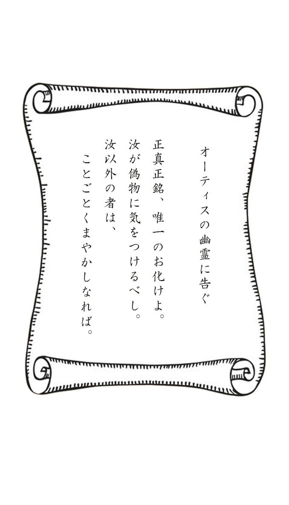

| 夜のささやき 闇のざわめき ～英米古典怪奇談集～ | |
| A・ブラックウッド & A・ビアス & O・ワイルド & Ｍ･Ｒ･ジェイムズ & Ｊ･Ｓ･レファニュ | |
| BOOKS ORINDO (2013) | |
目次
永遠倶楽部 アーサー・グレイ
・
・
ケンブリッジ大学ジーザス学寮には、現在構内に寝起きしている者の中にも知っている者はほとんどおらず、さらにその扉を開け、中を見たことのある者となるとさらに少ない人数しかいない部屋がある。その部屋は大食堂の脇、回廊の角にある急勾配の階段（由来となった逸話はもう忘れられてしまったが、伝統的に〈お牛小路〉と呼ばれている）を上がり、最上階に出て右手にある。部屋の中はがらんとしていて家具も置かれておらず、どっしりとした楢材の扉にかけられた南京錠もめったに解かれることはない。かつては予備の台所用品の保管場所として使われていたこともあったが、しかし今はそうした屈辱的な使われ方すらされておらず、静寂と暗闇の中にひっそりと放置されている。というのも、十八世紀のいつ頃かに一つしかない窓をふさがれ、外光を完全に遮断されてしまったためで、現在室内に射し込む明かりがあるとすれば、まれに何かの用事があって入り口の扉が開けられる時に、戸口から入る光くらいのものだろう。
しかしながら、それほど遠くない昔にはこの部屋には人が住んでいたらしく、そして今のように暗闇の中に捨て置かれてしまう以前は、ジョージ二世在位当時の学寮内での暮らしの水準に照らし合わせるならば、家具調度もきちんとしつらえられた快適な部屋だった。殿方が鬘をかぶり、きらびやかに着飾っていた時代には、今も残っている大きな暖炉の前で、のんびりと足が伸ばされ、杯や噂話が交わされていたのだ。部屋は広々としているし、平原や街の広場を望む東向きの窓から射し込む光で明るく照らされている時などは、社交好きの御仁にとってはさぞかし愉快な場所だったに違いない。
そんな部屋が今や一世紀半近くにわたってひっそりと闇に包まれたままになっているわけだが、その原因となった出来事について、ここにその簡潔で客観的なあらましを記そう。
十八世紀の中頃にかけて、ケンブリッジ大学には多種多様な社交目的の倶楽部があった。学寮の応接室や個室、構外の宿屋や喫茶店に人々は集まった。政治色のある倶楽部、宗教関係の倶楽部、学士や文人向けの倶楽部。表向きの看板がどのようなものであれ、いずれも親睦を目的としたものだった。中には（その会員には学生ばかりでなく大学職員も含まれていたのだが）いくぶん不健全なものもあって、そうした集まりは、田舎ではたかがしれているとはいえ、当時ロンドンで悪名を馳せていた〈地獄の業火倶楽部※１〉のような会の放蕩ぶりを真似していたのだった。
そうした不届きな倶楽部の中に、たちまち他の同種の倶楽部よりも一層の悪評を集めるようになったものがあった。奇妙な巡り合わせから（詳細は後述する）、一七六六年までの活動内容を記したこの倶楽部の行事録がジーザス学寮の学長の手に渡り、そして私の知る限りではその原本は残っていないが、今私の目の前にはその写しがある。書体こそより現代風になってはいるものの、そこに淡々と記された一連の事実はあまりにも奇怪であり、それがゆえに、読者諸兄にはそれを真実として受け止めていただけるよう私からお願いしなければならない。行事録の原本は赤い革装丁の四六判で、赤い絹糸で綴じてあったと記述がある。書き込みは約四十頁にわたり、一七六六年十一月二日のもので終わっている。
問題の倶楽部の名前は〈永遠倶楽部〉という――この名前の由来は行事録に記載されている会則を読めば十分に納得いただけるだろう。会員数は七名に限定されており、会員たちはいずれも二十二歳から三十歳までの若者だったようである。その内訳は、トリニティ学寮の一般学生が一名。いくつかの学寮の研究員が三名。うち一名はジーザス学寮の者で、チャールズ・ベラシスという名前はここで特別に紹介しておくべきだろう。その他にこの地方の地主が一名と、六人目はケンブリッジ在住の若い医師。倶楽部の創設者にして会長は、アイルランドのとある貴族の子息、アラン・ダーモット殿下で、在学中に爵位を得た彼は街で無為の日々を送っていた。その暮らしぶりと人となりについてはほとんど知られていないが、しかしわかっているほんのわずかな一面すらも極めて質が悪かった。彼は一七四三年、パリで果たし合いに敗れて死亡している。その顛末についてここで詳しく述べることはしないが、それはしかし、彼の並外れた残忍さと邪悪さがいかほどのものであったかを物語るものではある。
この行事録の冒頭部分から、倶楽部の会則をいくつか引用しよう。これを読めば、この会がどういった趣旨のものであったかがおわかりいただけるだろう。
･
･
一． 本倶楽部は七人の〈永遠人〉からなる。各員は運命により定められるまま、〈こちら側〉あるいは〈あちら側〉に在る者である。
二． ここに記す本倶楽部の会則は、永遠にして不変である。
三． 今後、本倶楽部への入会者、及び脱会者はこれを認めない。
四． アラン・ダーモット殿下を、本倶楽部の永遠の会長とする。
五． 会長を除く、〈こちら側〉にいる〈永遠人〉の最年長者を本倶楽部の書記とし、同人は本行事録に倶楽部の活動内容、いずれかの〈永遠人〉が〈あちら側〉に移った日付、倶楽部に支払われたすべての罰金を記録する。書記を司る〈永遠人〉が〈こちら側〉を去る場合、本人が直接、あるいは確かな人づてによって、本行事録をその時点で〈こちら側〉にいる次の年長者に渡すものとし、同人は同じく本行事録に活動内容等を記録し、次の年長者に引き継がなければならない。右条項の不履行は、会長の裁量により罰金あるいは処罰を科されるものとする。
六． 毎年十一月二日の万霊節の午後十時、〈永遠人〉は回り持ちによる饗応役の当番となった〈こちら側〉の会員の住居にて晩餐に集い、その席にて、各員は本行事録に氏名とその時点での所在地を記すものとする。
七． 右年次会への出席は〈永遠人〉全員の義務であり、よって招かれていないとの釈明は認められない。いずれかの〈永遠人〉が右年次会を欠席、あるいは自らの当番の際に饗応役の務めを果たせなかった場合、同人は会長の裁量による処罰を受けるものとする。
八． ただし、十月中、遅くとも万霊節の七日前までに倶楽部会員の過半数すなわち最低四名が集まり、本行事録に右年次会に反対する旨の書名をした場合、右二項の定めるところにもかかわらず、同年は年次会は催されず、同会の欠席を理由とする処罰も科されないものとする。
･
･
会則の残りのものはあまりにも冒涜的すぎるか、あるいは幼稚すぎるかのどちらかなので、ここには引用しない。それらを見るに、会員たちがいかに軽い気持ちでこうした非常識な義務を引き受けていたかがわかる。その最たる例が、最後の〈永遠人〉が〈こちら側〉を去った後の行事録の扱いに対する規定がまったくないことで、そのためにそれが倶楽部の部外者の手に渡るという不測の事態が起こり、その結果、その中身が現在にまで保存されることになったのである。
十八世紀前半に大学内で流行したこうした倶楽部の倫理的な水準はおしなべて低かったのだが、それでも〈永遠倶楽部〉の会員たちの公序良俗に対する目に余る逸脱ぶりは役所の厳しい非難を招くこととなり、二、三年後には倶楽部は事実上解散し、会員たちは大学を追われてしまった。たとえば、前述のチャールズ・ベラシスは学寮を去ることを余儀なくされ、除籍こそ免れたものの二十年近く不在のままだった。しかし倶楽部の行事録を読むならば、その解散という事実の裏に隠された恐るべき真の理由が明らかになる。
一七三八年から一七四三年の間には、倶楽部は万霊節の日以外にもたびたび集まっており、行事録には数多くの会合についての記載がある。書記の手による数々の不謹慎な冗談交じりの付記を除けば、これらは会員の出欠、罰金の額などといった無味乾燥な記録ばかりである。が、一七四三年十一月二日の年次会で、こうした判で押したような書面に初めて変化が現れる。晩餐会は前述したケンブリッジの医師宅で催された。会員の一人、元トリニティ学寮の一般学生だったヘンリー・ダベンポートが欠席していた。彼は当時、出征してドイツのダッティンゲンにいたのである。行事録には次のようなラテン語の書き込みがある。
「Ｈ・ダベンポート、欠席のため会長により処罰さる」
さらに次の頁には――
「ヘンリー・ダベンポート、砲弾を受けて〈あちら側〉の会員となる。一七四三年十一月二日」
十一月二日の日付の下には、会員たちそれぞれの手書きによる氏名と所在地が記されている。一行目には、肉太の大きな筆跡で、「会長アラン・ダーモット。陛下の御許に」とある。この十月、ダーモットは確かにさる若き王位継承者の付き人としてパリにいたので、彼の記したこの所在地は、当時会員たちにはその事実を指しているものと解釈されたのは間違いないだろう。しかしその年次会の五日前の十月二十八日、彼は前述の通り果たし合いに敗れて死亡している。彼の死の報せが十一月二日の時点でケンブリッジに届いていたはずはない。というのも、右に引用したヘンリー・ダベンポートが死亡したとの書き込みの下に、十一月十日付けで次のような記述があるのである――
「本日、某フランス人騎士の手により、会長が〈あちら側〉の会員となった由の報せあり」
そしてこの後に突然、それまでの不敬な書き込みとは一転して、感情をさらけ出すような走り書きが続く。
「神よ、我々を禍から守りたまえ」
会長の訃報を受け、〈永遠人〉たちは蜘蛛の子を散らしたかのごとくに方々に逃げ去った。誰もがケンブリッジを離れ、お互いから遠く隔たった土地に身を隠した。しかし倶楽部は存在し続けた。書記係は相変わらずおぞましき記録をつける義務を負っていた。生き残った五人には、自分たちに課せられた恐るべき会則を無視する勇気はなかった。会長がそこにいることに対する恐怖から、十一月の年次会にはもう絶対に出られなかった。しかし、これもやはり恐怖心から、念のために毎年十月に集まり、年次会への反対の署名をしたためることも怠らなかった。以来五年間、行事録には会長の死についての書き込みの下に五つの書名が書き足されていき、そしてそれが倶楽部としての活動のすべてだった。やがてまた一人、書記ではない会員が他界した。
さらに十八年にわたって、四人の憐れな会員たちは年に一度集まり、会則で定められている通り年次会に対する反対の署名を繰り返した。その間、書名とともに記された所在地からするに、チャールズ・ベラシスは表向きはおとなしく、礼儀正しくなってケンブリッジに戻ったようである。彼は回廊の角の階段を上がって、最上階にある前述の部屋に住んでいた。
そして一七六六年、行事録に新たな筆跡で新たな書き込みが加わる。
「一月二十七日、書記フランシス・ウィザリントン、〈あちら側〉の会員となれり。同日、本行事録が、我、ジェームズ・ハーヴェイの元に届けらるる」
ハーヴェイはこのわずか一月後に死亡し、そして三月七日付けで似たような書き込みがあって、行事録はウィリアム・キャスタートンに、今回もまた不可解なほどに速やかに届けられている。そして五月十八日、チャールズ・ベラシスは、キャスタートンの死亡したその日に、倶楽部の最後に生き残った〈こちら側〉の会員として、行事録を引き継いだ旨を記している。
私の目的は事実のみを記すことであるため、この自分自身への死刑宣告とも言うべき一文をしたためていた時の、この哀れな書記係の心情を描写するつもりはない。ウィザリントンが死亡した時点で、生き残った三人は、二十三年の休止期間を経て、これからは毎年あのおぞましき晩餐会を、しかも新たに〈あちら側〉の会員となった者たちも加えて開かなければならず、さもなければ会長の容赦ない処罰を受けることを思い知ったに違いなかった。後者の選択肢への恐怖、それこそが、行事録の不可解なまでに手際のよい引き渡し方、そして書記係を引き継いだ最初の二人の相次ぐ死に対する答えだろう。そしてそれ以外の選択肢がなくなってしまった今、ベラシスはそれがどのようなものであれ、倶楽部の会則に違反した罰を引き受ける覚悟だった。
ジョージ二世時代の反道徳的な気風はもはや大学から過ぎ去っていた。その後にやって来たのは体面を重んじる時代で、宗教や道徳はもはや公然と反抗されることはなくなった。ベラシスにも若かりし頃の不遜さはもうなかった。今では思慮深く、模範的ですらあったかもしれない。過去の不祥事については新しい世代のほとんどは知らず、当時を知る数名も過去を蒸し返すことはなかった。
一七六六年十一月二日の夜、ある恐ろしい出来事が、学寮の古株の住人たちにそうした悪しき日々の記憶を呼び覚まさせた。十時から真夜中にかけて、ベラシスの部屋で身の毛のよだつような騒々しい物音が続いたのである。彼と一緒にいるのが何者なのか、誰にもわからなかった。二十年の間聞かれることのなかった冒涜的な叫び声や卑猥な歌が、構内にいた者を眠りから覚まし、書物から顔を上げさせた。しかし、暴れ騒ぐ声の中にベラシス自身の声はなかった。やがて夜中の十二時になると、回廊に突然の沈黙が下りた。しかしながら、学長は立派な同僚の悪習がぶり返してしまったこと、そして学生たちがこの乱痴気騒ぎのとんでもない前例を真似するのではないかとの不安で一睡もできなかった。
翌朝、ベラシスの部屋のある一画はしんと静まりかえっていた。夜が明けてまもなく部屋の扉が開かれると、閉ざされたカーテンの隙間から忍びやかに射し込む早朝の光が、奇妙な光景を照らし出していた。テーブルのまわりに椅子が七つ、あたかも誰かが座っていたかのような形で置かれており、そのいくつかはひっくり返され、調度類はまるでどんちゃん騒ぎか何かの後のようにめちゃくちゃに散乱していた。テーブルの一方の端には、ベラシスが椅子に腰かけたまま事切れており、まるで何かおぞましい光景を視界から閉め出そうとするかのように、テーブルの上に重ねた前腕の上に顔を埋めている。その前には、ペンとインク、そして赤表紙の行事録があった。最後の書き込みのあるページには、十一月二日の日付の下に、一七四二年以来初めて、〈永遠倶楽部〉の七人の会員の署名が並んでいたが、所在地は記されていなかった。ダーモット会長の署名と同じ力強い筆跡で、七つの書名の下にラテン語の追記が書き込まれていた――
「Ｃ・ベラシス、会則不履行のため会長により罰せらるる」
行事録は学長によって回収され、おそらくその内容を知っていたのは彼一人だっただろう。そこに記された詳細から、この不祥事に自らの学寮が関係していることを知った彼はこの一件を自分だけの胸にしまい、決して他言しなかった。それでもやはり、当時の学生や職員たちは、あの事件には何か裏があると感じていたに違いない。というのも、ジーザス学寮には毎年十一月二日の夜になると、ベラシスの部屋から忌まわしい騒ぎ声が聞こえてくるという迷信が今なお根強く残っているのである。両隣の部屋の住人が今までそのような声を聞いたという確かな証言は残されていない。実際、行事録を見れば明らかなことだが、会則を起草する際に後先のことまできちんと考えられていなかったために、最後の〈永遠人〉が〈こちら側〉からいなくなった後に万霊節の行事を続けていくための条件は何も定められていないのである。 ならば、そうした迷信は侮蔑をもって遇し、まともに取り合うべきではないだろう。しかしその理由のためなのか、あるいは他に理由があるのか、その最上階の部屋は閉め切られ、当時から今日にいたるまで空き部屋のままになっている。
影 イーディス・ネズビット
･
･
これは物語としてきれいにまとまった幽霊談ではないし、話の中では何一つ説明されないので、この出来事が起こったことには何の理由もないように思える。しかし、それはこの話が語られてはならないという理由にはならない。読者の方々も、これまで耳にしたことのある本物の幽霊談は、この点――わかりやすい説明も、論理的整合性もないこと――においてみな同じであることにきっとお気づきのことだろう。以下がその物語である。
･
･
そこには私たち三人がいた。女の子がもう一人いたのだが、その子はクリスマスの舞踏会の二曲目のアンコールの時に突然気を失って倒れてしまったので、私たち三人のいる部屋の隣にある着替えの間のベッドに寝かされていた。それはお馴染みの、にぎやかで、古風な感じの舞踏会で、お客のほぼ全員が泊まっていくとあって、田舎の大邸宅ははち切れんばかりの人の入りだった。客人たちはソファやら長椅子やら寝椅子やら、はては床に敷いたクッションの上に寝そべっていた。若い男性の中には、なんと食堂の大テーブルの上で寝ている者までいた。若い女の子らしく、一緒に踊った男の子たちを批評し合った後、杉の木々の間を吹き抜けていく風の囁きと、木枝の固い指先がガラス窓を擦る音以外は破るものもない屋敷の静寂の中、更紗のドレスや蝋燭の火影や暖炉の明かりといった贅沢な雰囲気に包まれて舞い上がっていた私たちは、そのまま今度は幽霊の話で盛り上がった――とはいえ、三人が三人とも、自分たちの語る話の内容については微塵も信じてはいなかったが。幽霊馬車や、おぞましくも奇妙なベッド、タペストリーの間に現れるゆったりとしたドレス姿の貴婦人といった、小説に出てくる幽霊の話をしたり、そしてかの有名なバークレイ広場の幽霊屋敷の話をしたりした。
三人とも幽霊を信じてはいなかったが、それでも部屋の扉を叩く音が――微かな、それでいて紛うかたなきノックの音がした時、少なくとも私の心臓は喉元まで跳ね上がり、そこでつっかえてしまったような気がした。
「誰？」三人の中で一番年下の女の子が、ほっそりとした首を扉の方に伸ばして言った。扉がゆっくりと開き、それに続く一瞬の間は、今なお私の人生の中で一番心細い瞬間の一つだったと断言してもいい。ほどなく扉がいっぱいに開かれて、私の叔母の家の女中頭で、叔母の話し相手であり、家事全般を切り盛りしているイーストウィックさんが顔を覗かせた。
私たち三人は口々に「どうぞ」と誘ったが、彼女は動かなかった。イーストウィックさんは常日頃から、私が知る中でも飛び抜けて無口な女性だった。戸口に立ったまま私たちを見つめていた彼女は、小さく身震いをした。私たちも震えた。当時の屋敷の廊下には温水管を使った暖房設備がまだなかったので、戸口から入ってくる空気は身を切るように冷たかった。
「こちらの明かりが見えまして」イーストウィックさんがようやく口を開いた。「みなさまももうお休みになる時間だと思ったものですから――あれだけお騒ぎになった後ですし――」そこで、その目が着替えの間の扉に向けられた。
私は言った。「だめよ。あの子、ぐっすり眠っているもの」
その後におやすみなさいくらい言い添えればよかったのだろうけれど、一番年下の子に先を越されてしまった。彼女は他の子たちほどにイーストウィックさんのことを知らなかったのだ。その頑なな沈黙が彼女のまわりに壁を――世間話や、ちょっとした気遣いなどであえて打ち破ろうとする者もいない、ぶ厚い壁を張り巡らせていることを。その沈黙のために、私たちはイーストウィックさんのことを機械として扱うのが当たり前になっていた。機械として以外に彼女に接することなど、私たちは夢にも思わなかった。しかしその一番年下の女の子はイーストウィックさんに会うのはその日が初めてだった。その子は若くて、野暮ったくて、移り気で、まるで牛のように盲目的な衝動に流されやすかった。裕福な獣脂蝋燭の製造者の跡取り娘でもあったが、しかしそれはこの物語には関係ない。彼女は暖炉の前の絨毯の上で勢いよく立ち上がり、その拍子に、豪華なレースの縁取りのついた似合いもしない化粧着がずり落ちて、そこから華奢な鎖骨を覗かせながら、戸口に駆け寄ってイーストウィックさんの縮緬地の襟元からぴんと伸びた首に腕を回した。私は呆気にとられた。私にしてみれば、それはクレオパトラの針を抱きしめるよりもよほど大胆な行動だったのだ。
「どうぞ。入って暖まっていって。ココアもまだたっぷりあるし」そう言って、一番年下の子はイーストウィックさんを中に引っ張り込み、扉を閉めた。
イーストウィックさんの淡い色の瞳に浮かんだ生き生きとして嬉しそうな光が、私の心にナイフのように突き刺さった。彼女がそうしてほしがっていることを思いやる心さえあれば、その首に腕を回してあげることはこんなにも簡単だったのだ。しかしそこに思いいたったのはわたしではなかった――それに私の腕では、あの子の細い腕が呼び起こした光を灯すことはできなかったかもしれない。
「さあ」と、一番年下の女の子は一人で話し続けた。「一番大きくて、一番座り心地のいい椅子をどうぞ。ココアの鍋はここね。火のそばにあるから熱々よ。私たちみんな幽霊の話をしていたところなの。といっても全然信じてなんかいないけど。身体が温まったら、あなたもぜひ一つ話してちょうだいね」
あの品行方正と忠勤のお手本であるイーストウィックさんが、幽霊の話をするだなんて！
「本当にお邪魔ではないでしょうか」言いながら、イーストウィックさんは暖炉の方に両手を伸ばした。家政婦たちも、クリスマスの時期にはさすがに部屋の暖炉に火を入れるのだろうか。
「もちろんよ」私は答えた。それがその時の私の胸の内と同じくらい暖かく響いてくれたのならいいのだけれど。
「その――イーストウィックさん――私、これまでも誘ってあげたらよかったんでしょうけど、女の子同士のおしゃべりは好きじゃないだろうなって思ったものだから......」
もう一人の女の子がお客にココアを注いであげた。この三人目の女の子はこの物語にはまったく関係ないので、ここまで彼女のことには触れなかったのだ。私はマデイラ産の毛糸のショールをイーストウィックさんの肩にかけてやった。私はとにかく彼女に何かしてあげたくてたまらず、しかしその他にしてやれることは何も思い浮かばなかった。彼女が私たちに見せた微笑みはとても素敵だった。若い女の子が知らないだけで、四十や五十、さらにはもっと年をとっても、人はこんなに素敵な笑みを浮かべることができるのだ。そこでふと、私は自分がこれまでイーストウィックさんの笑顔を、心からの笑顔を見たことがないことに思い当たって、これがまた胸にぐさりときた。お愛想笑いは、このえくぼのできる、幸せそうな、それまでの印象をがらりと一変させてしまう表情とは別物だった。
「こんなに良くしていただいて」イーストウィックさんはそう言い、私は初めて彼女の本当の声を聞いたような気がした。ココアと、暖炉の火と、首に腕を回してあげるだけのことで、自分はこの六年の間いつでも、この新たな声を聞くことができたのだと思うと寂しかった。
私は言った。「私たち幽霊の話をしていたところなの。ただ、つまらないのは、誰も幽霊なんて信じていないことなのね。だって本物を見たことはないんですもの」
「いつもいつも、誰かからの又聞きの又聞きなんですもの」一番年下の子が言った。「そんなの信じられっこないわよねえ」
「兵士の言ったことは、証拠にはならない※２」イーストウィックさんは言った。このささやかなディケンズの引用は、今しがたの新たな笑みや新たな声よりもさらに鋭くこの胸に突き刺さったと言ったら、信じてもらえるだろうか。
「それに幽霊の話って、みんな出来すぎているのよね――幽霊の出る場所で実は昔殺人があったとか、宝物が隠されていたとか、何かの警告だったりとか。そのせいで余計に嘘っぽく思えてしまうのよ。私が今まで聞いた幽霊の話の中で一番怖かったのは、すごくつまらない話だったもの」
「それ聞かせてよ」
「やめておくわ。わざわざ話すようなものじゃないもの。それよりイーストウィックさんに話してもらいましょうよ」
「ねえ、何かお話しして」そう言って、最年少の子が待ちきれないとばかりに首を伸ばし、イーストウィックさんの膝にせがむように手をのせた。するとその子の鎖骨の下の窪みが黒々と浮かび上がった。
イーストウィックさんはゆっくりとした口調で言った。「たった一つだけ、わたくしの知っている怖いお話は、その――人から聞いた話なのです。結末の直前のところまでは」
彼女がその話をすることは私にはわかっていた。彼女が今まで誰にもその話をしたことがなかったことも。そして今その話をしているのは、私たちにちやほやされて嬉しかったから、そしてそれがココアと暖炉の火と、そして首に回された腕に対する唯一のお返しに思えたからだということも。
私はとっさに口を開いた。「話さなくてもいいわ。本当は気が進まないんでしょう」
「きっと退屈されると思いますけれど」イーストウィックさんが弱気な声で言うと、最年少の子が私をじろりと睨んだ。何もわかっていないくせに。
「そんなことないわ。ぜひ聞かせて。大丈夫よ。イーストウィックさんが怖いって思うお話なら、絶対に怖いから」
イーストウィックさんはココアを飲み終えると、手を伸ばしてカップを炉棚の上に置いた。
「大丈夫でしょう」と、彼女は半ば独り言のように言った。「みんな幽霊を信じていないんだし、それにそもそもあれは幽霊じゃなかったんだし。もうみんな二十歳を過ぎて、赤ん坊じゃないんだから」
しばし、しんと期待に満ちた間があった。暖炉の火がぱちぱちと音をたて、ビリヤード室の明かりが消されたために、ガス灯の光が突然ぱっと明るくなった。廊下を歩く男の人たちの足音と声が聞こえた。
「本当にたいしたお話ではないんですけれど」イーストウィックさんは自信なさげにそう言い、しおれた顔の前に肉の薄い手をかざして、暖炉の火を遮った。
私たちは口々に言った。「聞きたい――ねえ、話して――ねえったら！」
「それでは」彼女は切り出した。「二十年かそれ以上昔のことになりますが、わたくしには二人の友達がおりました。わたくしにとってはこの世の何よりも大切な二人でした。やがて二人は結婚しました――」
イーストウィックさんはそこで口をつぐみ、私はその二人に対する彼女の思いがどのようなものであったかを悟った。最年少の子が言った。「なんて羨ましいんでしょう。続けて」
イーストウィックさんはその子の肩に軽く手をのせ、私は自分が事情を察し、その子がそうでないことに優越感を覚えた。話は続いた。
「結婚した後、二人とは一年か二年の間疎遠になっておりました。やがてあの人から、奥さんのメイベルの具合が悪いのでこっちに来てくれないかという手紙が届きました。そうしてくれるとメイベルも元気になるし、自分も嬉しいと。そこは陰気な家だそうで、自分まで陰気になりそうだと書いてありました」
その語りを聞きながら、私は彼女がその手紙を一字一句まで暗記していることを悟った。
「それで、わたくしは行ったのです。住所はロンドン郊外のリーでした。当時は、広い敷地に立つ古い煉瓦造りのお屋敷のまわりに、新しい郊外住宅の建ち並ぶ通りがそれはもういくつもいくつも伸びておりました。そのお屋敷というのも、赤煉瓦の壁を巡らせて、まだ汽車が走っていなかった時代の、駅伝馬車やら、悪名高いブラックヒースの追い剥ぎやらを偲ばせるようなたたずまいなのです。手紙には陰気な家だとありましたし、名前も〈モミ屋敷〉でしたから、わたくしはてっきり、自分の乗った馬車が、うねうねと曲がりくねった垣根に挟まれた薄暗い道を抜けて、よくある閑静な、古くてどっしりとしたお屋敷の前に出るものと思っておりました。ところがいざ着いてみれば、そこは大きな、洒落た感じの郊外住宅で、鉄の柵があって、きれいな装飾タイルが鉄門からステンドグラスのはめ込まれた玄関扉まで続いておりました。小さな前庭には、まだ細いイトスギとアオキが数本、ぽつぽつと並んでいるだけなのが寂しい感じもしましたが、中に入ってみると、どこを見ても温かくて心地のいい感じでした。あの人は、玄関でわたくしを迎えてくれました」
イーストウィックさんは暖炉の炎を見つめていて、私には彼女がもう私たちのことを忘れていることがわかった。しかし一番下の子はいまだに、彼女が自分たちに向かって話をしているのだと思っていた。
「あの人は玄関で迎えてくれました」イーストウィックさんは繰り返した。「それから、来てくれてありがとう。そして昔のことは水に流してほしいと言いました」
「昔のことって？」と、鈍感の女王、最年少の子が尋ねた。
「それは――もっと早くに招待しなかったとか、そういうつもりで言ったのでしょう」イーストウィックさんは言葉を濁した。「やっぱりずいぶんと退屈なお話ですから――」
「そんなことないわ。続けて」私は言い、それから最年少の子をひと蹴りすると、立ち上がってイーストウィックさんのショールのずれを直し、その肩越しに聞こえよがしに言ってやった。「黙ってなさいよ、このお馬鹿さん」
再びしばしの沈黙があり、やがてイーストウィックさんはあらためて話し始めた。「二人はわたくしに会えてとても嬉しそうで、わたくしも来てよかったと思いました。みなさんはたくさんのお友達をお持ちでいらっしゃいますけれども、わたくしにはその二人しかいなかったのです――生涯でただ二人だけの親友でした。メイベルは特に病気というわけではなくて、ただ身体が弱くて、興奮しやすいというだけでした。わたくしには、メイベルよりもあの人の方が具合が悪そうに見えました。メイベルは、あの人の寝る前の一服につきあってあげてと私に言って、ひと足先に寝室に引き上げていきましたから、わたくしはあの人と二人で食堂に入って、暖炉の前に並べられた二つの肘掛け椅子に腰かけました。緑色の革張りの椅子だったのを覚えております。炉棚の上にはブロンズの馬の像がひと揃いと、黒い大理石の置き時計が飾ってありました――どれも結婚祝いの贈り物です。あの人はウイスキーをコップに少し注ぎましたが、ほとんど口はつけませんでした。ただじっと暖炉の火を見つめていました。しばらくして、とうとうわたくしは口を開きました。
『どういうことなの？ メイベルはこれ以上望みようがないくらい元気そうに見えるけれど』
『ああ――でもいつ何時、あいつが何か様子がおかしいことに気づくかと思うと......。だから君に来てもらったんだ。君は昔から本当にしっかり者で、気丈夫だったし、それに比べたらメイベルなんか、花にとまった小鳥みたいにねんねだものな』
わたくしは、ええ、そうねと答えて、話の続きを待ちました。あの人はきっと借金をしているか、あるいは何かの面倒ごとを抱えているのだろうと思いました。だから黙って待っていました。ほどなく、あの人は再び口を開きました。
『マーガレット。この家、すごく変なんだ』――あの人はわたくしのことをいつもマーガレットと呼んでおりました。本当に長い付き合いでしたから。わたくしは、この家はとても素敵だし、さっぱりしていて居心地がいいと答えました――ただ少しばかり新しすぎるけれど、それも時が経てばしっくりくるようになる、と。
『そりゃ新築だもの。この家に住むのは僕たちが初めてなんだ。もし古い家だったら、いいかいマーガレット、僕はこの家が祟られていると思っていただろうね』
わたくしが何かを見たのかと尋ねると、あの人は答えました．『いや。まだだよ』
『じゃあ何か聞いたとか？』
『いや――聞いてもいない。でも気配みたいなものを感じるんだ。何て言ったらいいか――何も見えないし何も聞こえないんだけど、あとほんの少しで、何かが見えたり聞こえたりしそうな感じなんだ。あとほんの少しでね。それから、何かがすぐ後ろにいるような感じ。でも振り返ってみても何もいなくて、自分の影があるだけなんだ。そしていつもいつも、次こそはその正体が見えるような気がするんだけれど――まだ見えたことはない。はっきりとはね。とにかく目には見えないんだ』
わたくしはあの人が少し働き過ぎなのではないかと思って、元気づけてあげようと、わざとこの話を軽く受け流しました。そんなのただの気のせいだと。するとあの人はわたくしなら自分を助けることができると思ったのだと言い、それからこう尋ねました――誰か僕から裏切られた人が、僕のことを呪っているようなことはないだろうか、それから君は呪いを信じているか、と。わたくしは信じていないと答えました。それから、たった一人だけ、あなたから裏切られたと言えるような人がいるけれど、その人は絶対にあなたのことを許しているし、そもそも許すようなことなどなかったと、そうも言いました』
自分を裏切った相手を許す寛容なその人物の名前に気づいていたのは、最年少の子ではなく、私だった。
『ですからわたくしは、メイベルと一緒にその家を引き払って、環境をがらりと変えてしまうのがいいと言いました。でもあの人はそれはできないと言うのです。メイベルは家の中のことはみんなきちんとやってくれているから、今引っ越すとなればどうしてもすべてを説明しなくてはならなくなると――そうしてさらに言いました。『それに何より、あいつには絶対、何か様子がおかしいことを気取られたくないんだ。でもたぶん、君が来てくれた以上は、僕ももうこんなにおかしな気分に悩まされなくて済むさ』
そうしてわたくしたちはおやすみを言いました」
「もう終わっちゃった！」三番目の子が、さもおもしろかったかのように言った。
「まだ始まったばかりでございます」イーストウィックさんはそう言って話を続けた。「二人きりでいる間、わたくしはあの人からこれと同じ話を何度も何度も聞かされまして、ですから本当に何かの気配に気づき始めた時は、あの人からおかしなことを吹き込まれたせいで神経質になっているのだと考えようとしました。奇妙なことには、その気配は夜だけではなく日中にも、とりわけ階段や廊下にいる時に強く感じられるのです。階段を上る時は本当に気味が悪くて、わたくしは唇を血が出るほどにぐっと噛んで、全力で駆け上がりたいのをこらえていたほどでした。走って逃げてしまうと、階段のてっぺんできっと気が狂ってしまうような気がするのです。何かが常にわたくしの後ろにいました。ちょうどあの人が言っていたように、目に見えない何かが。耳には聞こえない音が。家の二階には長い廊下がありました。ときどき、もう少しで何かが見えるような気がするのですが――実際に目で見なくても、そこに何かがあることがわかることがございますでしょう――、振り返ってみると、その何かは形を崩して、わたくしの影に溶け込んでいくような感じなのです。そして結局、廊下の突き当たりに窓が一つあるのが見えるだけでした。
一階にも、こちらは短いですが廊下が一つありまして、一方の端には戸棚があって、反対側は台所になっておりました。ある夜のこと、わたくしはメイベルのために牛乳を温めようと台所に下りていきました。使用人たちはすでに寝んでおりました。コンロの前で牛乳が煮立つのを待ちながら、わたくしはふと開いた戸口の向こうの廊下に目を向けました。あの家にいる間はどうしてもそわそわとあちこちに目をやってしまうのです。戸棚の扉が半開きになっていました。そこには空箱やら何やらがしまってありました。そうしてそちらを見ながら、わたくしは今度こそは、何かが見えそうな気がするだけではないことを悟りました。『メイベルなの？』と声をかけてみましたが、戸棚の中から半分身を乗り出すようにしてうずくまっているそれがメイベルであるはずはありません。それは初めは灰色で、やがて黒に変わりました。そしてわたくしが『メイベルなの？』と声をかけた時、それはするすると下に動いていって、やがてこぼれたインクのように床に広がって、次にその輪郭がすうっと動いたかと思うと、インクのこぼれた紙を傾けた時のように、一方に流れていきました。やがてそれは戸棚の中に流れ込んで、中の暗闇にすっかり溶け込んでしまいました。ですが、わたくしにはそれが動くのがはっきりと見えたのです。台所はガス灯が明々と灯っておりました。わたくしは大きな悲鳴を上げましたが、それでもありがたいことに、とっさに機転を利かせて沸騰した牛乳の入った鍋をひっくり返して、階段を二段飛ばしで駆けつけてきたあの人には、手を火傷したのだと説明して、うまくその場を言いつくろいました。メイベルはそれで納得しましたが、しかし次の日の夜、あの人は言いました。
『どうして隠したりしたんだい？ あの戸棚だろう。あれこそが、この家の不気味な気配の元凶なんだ。さあ――何か見えたかい？ それともやっぱり、見えたり聞こえたりする一歩手前だったかい？』
わたくしは先にあの人が何を見たのかを教えてほしいと答えました。そうして話していると、あの人の目がカーテンのまわりの影を見て見開かれたので、わたくしはガス灯を一つ残らず点けてまわり、炉棚の上の蝋燭にも火を灯しました。やがて私たちは互いに顔を見合わせ、自分たちは二人とも頭がおかしいんだと言って、少なくともメイベルだけは正気でいることを神様に感謝しました。そうなのです。あの人が見たものとわたくしが見たものは同じだったのです。
それからは何かの影のあるところに独りきりでいるのが怖くなりました。いつ何時、どこかにうずくまっていて、それからするすると下がっていって黒い水溜まりのように床に広がって、やがて手近にある影にゆっくりと溶け込んでいく何かが目に入るかわかりませんでしたから。その手近の影というのが、わたくし自身の影であることもしばしばなのです。最初のうち、それは夜に現れましたが、後になると夜明けにも、真っ昼間にも、ガス灯の光の中にも見えるようになって、もう安心できる時間はなくなりました。それはいつも決まって、うずくまるような形から下に動いていって、床に広がって何かの影に溶け込むのです。そしてそれが見える時は必ず、目が緊張してひりひりと痛みました。あたかも何か見えそうで見えないものを見る時のように、それを見るためには精一杯じっと目を凝らさなければならないような感じです。家の中の音――聞こえそうで聞こえないあの音もまだ続いていました。ですが、ある朝ついに、わたくしはその音をはっきりと聞いたのです。わたくしのすぐ後ろでその音がするのを。微かな溜め息のような音でした。それでもそれは、影に溶け込んでいくあの何かよりももっと不気味でした。
よく我慢できたものだと思います。二人のことをあれほど想っていなければ耐えられなかったでしょう。でもわたくしには、誰か心を開くことのできる相手がいなければ、あの人は気が狂うか、そうでなければメイベルに一切を打ち明けてしまうであろうことがわかっていたのです。それほど心の強い人ではありませんでしたから。それはそれは優しくて、親切で、思いやりのある人でしたが、心は弱かったのです。昔からまわりに流されやすいところがありました。だからわたくしは我慢してその家に留まって、あの人と二人で精一杯陽気な振りをして、ささやかな冗談を言い合ったりして、メイベルが一緒にいる時には努めて楽しそうに振る舞いました。ですがあの人と二人だけでいる時には、そんな演技はしませんでした。ときおり、一日か二日何も見えず、何も聞こえない日もありまして、そんな折にはわたくしたちも、自分たちが見たり聞いたりしていたのは目や耳の錯覚だったのだろうと思いたかったところですが、それでも、あの家の中には見ることも聞くこともできない何かがあるという思いが胸にまとわりついて離れませんでした。なるべくそのことは口にしないようにと思ってはいましたが、あの人と二人でいる時はたいていその話ばかりしていました。
そうして何週間かが過ぎて、やがてメイベルの赤ちゃんが生まれました。子守とお医者様は母子ともに元気だと言っておりました。わたくしとあの人は、その夜は食堂で遅くまで起きていました。二人とも、三日間何も見ず、何も聞いておりませんでした。メイベルに対する心配も和らぎました。わたくしたちは未来について語りました――その時は、来たるべき日々は過ぎた日々よりもずっと明るいものに思えたのです。二人で話し合って、メイベルの具合がよくなり次第、あの人は彼女を連れて海辺に引っ越して、わたくしはあの人がすでに決めていた新居に家財道具を運び入れる手配をすることに決めました。結婚以来、あんなに明るいあの人を見るのは初めてでした――昔のあの人に戻ったようですらありました。わたくしがおやすみを言うと、あの人はわたくしが二人にとってどれだけ慰めになってくれたか、言葉を尽くして感謝してくれました。もちろんわたくしは大したことは何もしておりませんでしたが、それでもあの人がそう言ってくれたことは嬉しゅうございました。
その後で、わたくしはその家に来てほとんど初めて、何かが後ろにいるというあの感覚を覚えることなく二階に上がりました。メイベルの部屋の扉の前で耳を澄ますと、何もかもがしんと静まり返っていました。そのまま自分の部屋に向かって歩いていくと、突然、何かが後ろにいる気配を感じました。振り返ると、それはそこにうずくまっていました。それからするすると下がっていって、黒い液体のようにメイベルの部屋の扉の下に吸い込まれていきました。
わたくしは廊下を引き返して、中の音が聞こえるように扉をわずかに開きました。部屋の中はひっそりしていました。やがてわたくしの真後ろで、溜め息のような音が聞こえました。わたくしは扉を開けて中に入りました。子守と赤ん坊は眠っていました。メイベルも眠っていました――その寝顔の愛らしかったこと――まるで疲れた子供のようでした。赤ん坊はメイベルの脇の下で丸くなって、小さな頭を母親の身体にくっつけて眠っていました。わたくしはその時、メイベルだけは、あの人とわたくしが体験した恐怖を決して知ることがないようにと祈りました。その愛らしい耳には美しい音しか聞こえず、その澄んだ瞳には美しい光景しか映らないようにと。それ以来長い間、わたくしは祈ることができなくなりました。わたくしの祈りは聞き届けられたのです。メイベルはもうこの世で何かを見ることも聞くこともなくなってしまいました。こうなってしまっては、わたくしにはあの人にも彼女にも、もう何もしてあげられることはありません。
メイベルが棺に入れられて、わたくしがそのまわりに火を灯した蝋燭を立て、人々の贈ってくるおぞましい白い花を棺の中に飾っていると、あの人が後ろからついてきていたことに気づきました。わたくしはあの人の手を取ってその場を離れました。
と、戸口のところで二人とも振り返りました。微かな吐息のような音が聞こえた気がしたのです。あの人は狂おしいほどの希望を胸に、大喜びで彼女のそばに飛んでいこうとしました。しかしその瞬間、わたくしたちはそれを見たのです。わたくしたちと棺桶との間で、初めは灰色で、やがて黒く変じたそれは、しばらくそこにうずくまっていましたが、やがてするすると下がって液体のようになって――手近にあった影に溶け込みました。そしてその影というのが、メイベルの棺桶の影だったのです。わたくしはその翌日にその家を去りました。あの人の母親が来たのです。その人は昔からわたくしのことをよく思っておりませんでしたから」
イーストウィックさんは口をつぐんだ。私たちのことなどすっかり忘れていたのだろう。
「もうその人に会うことはなかったの？」一番年下の子が尋ねた。
「一度だけ会いました」イーストウィックさんは答えた。「その時も、何か黒々としたものがあの人とわたくしの間にうずくまっておりました。でもそれは何のことはありません、あの人の二人目の奥さんが、棺桶の前で泣いていただけでした。どうでしたでしょうか。楽しいお話ではございませんでしょう？ 結末もございませんし。この話は今まで誰にもしたことはありませんでした。きっと、あの人の娘に会ったせいで何もかも思い出したのでしょう」
そう言って、イーストウィックさんは隣の部屋の扉を見やった。
「メイベルの赤ちゃん？」
「はい――お母さんそっくりでございましてねえ。ただ目だけはあの人譲りですけれども」
最年少の子はイーストウィックさんの手を撫でるような手つきで握っていた。
突然、彼女はその子に握られていた両手を振りほどき、その痩せた身体を真っ直ぐに伸ばして立ち上がった。両手をきつく握りしめ、目をじっと凝らして。彼女は私たちに見えない何かを見据えていて、私は聖書の中の誰かが言っていた、「霊が私の顔の前を過ぎ、私の身の毛はよだった※３」という一節の意味を身をもって知った。
イーストウィックさんの見ている何かは、着替えの間の扉の把手に届かないほどの大きさしかないようだった。彼女の目はそれを追うようにして下へ、下へと向けられ――そしてどんどん見開かれていった。私の目もその視線の先を追った――目の神経という神経が、ぎりぎりまで酷使されているような感じがした。やがて何かが見えた――のだろうか？ はっきりとはわからない。しかし私たちはみな、長く尾を引く、震えるような吐息の音を聞いた。そして誰もがそれぞれ、それが自分のすぐ後ろで吐き出されたように感じていた。
蝋燭を取り上げ、震える手のあちこちに蝋を垂らしながら、イーストウィックさんに引きずられるようにして、二曲目のアンコールの間に倒れた女の子のところに行ったのは私だった。しかし、私たちが部屋を出てきた時、イーストウィックさんの首にその細い腕を回していたのは一番年下の女の子であり、そしてそれ以来、その光景は、現在彼女が女中として働いているその子の新しいお屋敷で、何度となく繰り返されることとなった。
翌朝やって来た医者によれば、メイベルの娘は母親から受け継いだ心臓の病気が原因で死んだのだそうだ。二曲目のアンコールの途中で卒倒したのもそのせいだった。しかし私はときどき思うことがある。彼女は父親からも何かを受け継いでいたのではないかと。彼女の死顔に浮かんでいた表情が、私はいまだに忘れられない。
銅版画 Ｍ・Ｒ・ジェイムズ
・
･･
いつだったか、デニスタウンという名の私の友人が、ケンブリッジ大学付属博物館に収蔵する美術品を探している間に体験したとある事件についてお話ししたことがあったと思う。
イギリスに戻った彼は自分の体験をあまり広く触れて回ることはなかった。それでもやはり、事件は彼の友人の多くの知るところとなり、中でもその当時別の大学博物館の館長を務めていたとある人物の耳に入った。その話がデニスタウンと似たような仕事に携わるその男の心に強く焼き付けられたことも、そして彼が、その事件をあれこれと解釈して、自分があれほどただならぬ事態に見舞われる見込みはないだろうと思い込もうとしたのも、人情というものだろう。そればかりか、彼は自分がそうした古文書の収集を任されていないことを思って胸を撫で下ろしたくらいだった。もちろん、それも彼の務めるシェルバーニアン博物館の仕事ではある。確かにここの職員ならば、気が向けばその手の文書を求めてヨーロッパ大陸の片田舎まで出張っていくかもしれない。しかし今のところ彼は、自らの博物館の所蔵する、地誌的に資料価値のあるデッサン画や版画の、他に並ぶもののないコレクションをさらに増やすことに注力していればいいのだ。しかし蓋を開けてみれば、これほど地味で平凡な部署にもそれなりにほの暗い一角はあるもので、そしてその一つに、この物語の主人公であるウィリアムズ氏ははからずも迷い込んでしまうのだった。
地誌学的価値のある風景画の購入にわずかなりとも関心を持ったことのある者ならば、この人物の力添えなしには作品の品評ができないというほどの美術商がロンドンにいることを知っている。その人物、Ｊ・Ｗ・ブリットネル氏は、イギリスとウェールズの邸宅、教会、街並みなどを描いた膨大な数の版画、見取図、古いスケッチ画の、頻繁に入れ替わる在庫を列挙したぶ厚いカタログを短い周期で発行している。このカタログは言うまでもなく、ウィリアムズにとっての虎の巻である。しかし彼の博物館はすでに膨大な数のそうした資料を所蔵しているため、彼は上得意というよりはただの常連客だった。それに彼はブリットネル氏のことを、どちらかといえば稀少品の仕入れ先というより、むしろ収蔵品の棚や資料の隙間を埋めてくれる人くらいに見なしていたのである。
さて、去年の二月のこと、博物館にあるウィリアムズの机の上にブリットネル商店のカタログが届けられ、そしてそこには店主本人のタイプ書きの手紙が一通添えられていた。その内容は以下の通り――
･
･
拝啓。
同送致しますカタログの作品九七八番を御覧下さいませ。同作品は貸し出しも喜んで承っております。
敬具
Ｊ・Ｗ・ブリットネル
･
･
同送されてきたカタログを開いて作品九七八番を確認するのは、ウィリアムズにとっては（本人曰く）惰性による行動で、指示された箇所には次のような一文があった。
･
･
九七八――未詳。興味深い銅版画の一品。今世紀初頭の荘園領主邸の景観。三〇×二〇センチ。黒の額入り。二ポンド二シリング。
･
･
それはことさらに心躍るような絵ではなく、値段も高いように思われた。しかしその道の専門家であり、顧客の欲するものを心得てもいるブリットネル氏が高く評価しているのならばと、ウィリアムズは同じカタログに載っている他の版画やスケッチ画と一緒に貸し出しを依頼する手紙を書いた。そうしてそれほど期待に胸を膨らませることなく、いつも通り一日の仕事に取りかかった。
郵便物とはどんな種類のものであれ、来ると思っている日よりも必ず一日遅れて届くもので、ブリットネル氏からの小包も例外ではなかった。それは土曜日の午後の便で、ウィリアムズが仕事を終えて帰った後に博物館に届けられたのだが、氏が中身に目を通し、買うつもりのない絵を返却するのに月曜日まで待たなくていいようにと、事務員が気を利かせて学寮の彼の部屋まで届けてくれた。かくして氏がお茶を飲もうと友人を一人連れて部屋に戻ってくると、小包は先に来て主の帰りを待っていた。
この話に関係のある作品は一つだけである。それはやや大きめの、黒の額入りの銅版画で、私が先ほどブリットネル氏のカタログの中の短い説明文を引用したあの一点である。もう少し詳しい説明を加えた方がいいだろうが、ただし今私の目に見えているそのままの印象をお伝えすることは望むべくもない。今日では、多くの古い宿屋の応接間や、のどかな田舎の邸宅の廊下などで、そのかなり忠実な複製画を見ることができる。それはどちらかといえば平凡な銅版画で、そして平凡な銅版画というのは、おそらくは世に知られている版画の様式の中でも最悪のものである。それはそこそこの大きさの、前世紀の荘園領主邸の正面全体を描いたもので、田舎風のごつごつした石材に縁取られた、質素な木枠の窓が三列並んでおり、手すりの両端に球形もしくは紡錘形の飾りのあるバルコニーがあって、中央には小さなポーチがある。左右には木立があり、正面には広々とした芝生の庭が描かれている。〈Ａ・Ｗ・Ｆ作〉の銘が、狭い余白に彫り込まれている。それ以上の書き込みはない。全体的に素人臭い印象を受ける。ブリットネル氏がいったいどういうつもりでこのような凡作に二ポンド二シリングもの値をつけたのか、ウィリアムズには想像もつかなかった。彼はお話にならないとばかりにそれを裏返した。裏面には貼り紙があって、その左半分が破れている。残っているのは二行の文字列の末尾の部分だけだった。上の行には〈ングレー邸〉、下の行には〈ックス〉と書かれている。
描かれている場所を特定するだけの価値はあるかもしれないし、それならば地名辞典を引けば何ということはない。それが済んだら、ブリットネル氏の目利きに対してひと言苦言を添えて送り返してやろう。
もう暗くなっていたので、ウィリアムズは蝋燭に火を灯し、お茶を淹れ、それまで一緒にゴルフをしていた友人に振る舞った（ここに出てくる大学職員たちは、時間が空けばクラブを握っていたのである）。お茶を飲みながら交わされた会話は、ゴルフをする人には想像がつくだろうが、良識ある語り手として、私にはそれを読者に押しつける権利はないので、ここでは割愛させていただく。
結局、もっとうまく打てたショットがいくつかあったこと、そして二人とも、幾度かのここぞという場面において、一人の人間が期待してしかるべき幸運に恵まれなかったということで話はまとまった。件の友人が（ここではビンクス教授と呼ぶことにしよう）、あの額入りの銅版画を手に取って言ったのは、ちょうどこの時だった。
「ウィリアムズ、これはどこの屋敷だい？」
「ちょうど調べようと思っていたところでね」そう言って、ウィリアムズは本棚に歩み寄って地名辞典を手に取った。「裏側を見てくれたまえ。ナントカングレー荘。サセックス。あるいはエセックス。名前の左半分が破れているだろう。君、たまたま知っているなんてことはないよな？」
「例のブリットネル氏のとこのかい？」
「まあ、五シリングなら買うんだがね。ところがどういうわけだか、氏は二ポンドの値をつけていてね。何を考えているんだか。凡作だし、おまけに人物が一人も描かれていなくて寂しい感じがするし」
「まあ確かに、二ポンドの価値はないね。でもそんなに悪くもないよ。月明かりの表現なんかけっこう巧いと思うし。それにちゃんと人だって描かれているような気がするけど。まあ一人だけだけどさ。ちょうど下の端っこのところに」
「どれどれ」ウィリアムズは言った。「なるほど、確かに光の表現はなかなか巧いね。その人物ってのはどこだい？ ああ、いたいた！ 頭だけね。画面の一番手前のところに」
なるほど確かに人がいた。版画の下端の際に、ほとんど黒い点にしか見えないものの、男か女の頭が、すっぽりと何かをかぶり、画面に背を向けて屋敷の方を見ている。
その朝見た時、ウィリアムズはそれには気づかなかったのだが。
「とにかく、僕が思っていたよりは巧い絵だとはいっても、どこを描いたものかもわからない絵に二ポンドもの経費を使うわけにはいかないね」
ビンクス教授は仕事があったので、まもなく部屋を後にした。大広間での夕食の時間ぎりぎりまで、ウィリアムズはその絵に描かれている屋敷を特定しようと虚しい努力を続けていた。「〈ング〉の前の母音が残っていてくれさえれば、すんなりとわかっただろうに」彼は思った。「でもこれじゃ、正解はゲスティングレーからラングレーまでのどれだってあり得るし、それにこういう語尾の地名は意外に多いんだものな。おまけにこのボンクラ辞書ときたら、語尾の音じゃ引けやしないし」
ウィリアムズの学寮の夕食の時間は七時だった。このあたりは詳しく述べる必要はないだろう。とにかく彼はそこで午後に一緒にゴルフをしていた同僚たちと合流し、われわれには関係のない言葉がテーブルを自由に飛び交った――ただしそれがゴルフの話題ばかりであったことは、取り急ぎ付け加えておこう。
食後の一時間かそこらは、いわゆる談話室で費やされたのだろう。その後数人がウィリアムズの部屋に場所を移し、そこではきっとトランプのカードが配られ、煙草が吸われたに違いない。こうした遊びが一段落したところで、ウィリアムズは件の銅版画を手に取って、そちらを見ないまま、それをいくらか絵心のある人物に手渡し、その絵の出所と、それからわれわれがすでに知っているその他の詳細を伝えた。
その友人は銅版画を受け取って何気なく画面に目をやり、それから少し関心を引かれたような口調で言った。
「これは本当にとてもいい作品だよ、ウィリアムズ。ロマン派時代の雰囲気が色濃く漂っていて。僕の見立てでは、光の表現は見事だし、それにこの人物も、ちょっと気味が悪いけれどなんだかとても存在感があるね」
「ああ、そうだろう？」そう答えたウィリアムズは、その時ちょうど他の客人たちにウイスキーのソーダ割りを配るのに忙しく、引き返してその絵を見る余裕はなかった。
夜もずいぶん遅くなって、訪問者たちは席を立った。みなが帰ってしまうと、ウィリアムズは手紙を一、二通したため、それからやらなければならない細々とした仕事をいくつか片付けた。真夜中を少し過ぎた頃にようやく寝ることにして、寝室の蝋燭を灯してからガス灯を消した。銅版画は最後に見た人物が残していった時のまま、テーブルに表側を上にして置いてあったので、ガス灯を消す際にその画面が彼の目に入った。
それを見て、彼は危うく蝋燭を手から落としそうになった。本人曰く、もしもあの時蝋燭の火が消えて暗闇の中に独りぼっちになっていたら、きっと気を失って倒れていただろうという。しかしそうはならなかったので、彼は蝋燭をテーブルに置いて絵をじっくりと眺めた。間違いなかった――どう考えてもあり得ないことだったが、しかし絶対に確かだった。あの所在のわからない屋敷の正面に広がる芝生の真ん中、その日の午後の五時には何もなかったところに、人影が一つあったのである。それは地面に手足をついて屋敷の方に這い進んでおり、その身体は背中に白い十字の模様ある奇妙な黒い衣服で包まれている。
こうした状況下に取るべき理想的な行動とはどのようなものであるか、筆者にはわからないが、とにかくウィリアムズ氏が何をしたかを記そう。彼は銅版画の一方の端を持って、廊下を挟んで向かいにある、自分に割り当てられたもう一つの部屋へと運んだ。そこで絵を引き出しに入れて鍵をかけ、両方の部屋の扉に錠を下ろし、ベッドに入った。しかしその前に、その絵が自分の元に届けられて以来遂げた尋常ならざる変化を書面にしたため、署名をした。
眠りはなかなかやって来なかった。しかし銅版画の変化が自分一人の証言だけによるものではないと思うと気が安らいだ。昨夜あの絵を見た同僚も彼が見たものと似たような光景を目にしているに違いなく、そうでなければ自分の目か、あるいは頭に何か重大な異常が生じていると考えなければならない。幸いにもこの可能性が除外されたので、翌朝はやらなければならないことが二つある。一つは、誰かの立ち会いの下で、あの絵を綿密に調査すること。二つ目に、あの絵に描かれている屋敷の名前と場所を、今度はもっと身を入れて突き止めること。そうするために、彼は隣人のニズベットを朝食に誘い、午前中は地名辞典とにらめっこをして過ごすことにした。
ニズベットはその日は手空きだったので、九時二十分頃にやって来た。一方で彼を招いたウィリアムズの方は、遺憾ながらこの時間になってもまだ着替えを済ませていなかった。朝食の間、ただ見てもらいたい絵があると告げたきり、ウィリアムズの口から銅版画の話はひと言も出てこなかった。しかし、大学生活についてご存じの方ならば、カンタペリー学寮の研究員二人が日曜日の朝食の席で交わす会話の、その話題の及ぶ範囲の広さとにぎやかさはご想像いただけるだろう。ゴルフからテニスまで、持ち出されない話題は一つとしてないくらいである。しかしながら、ウィリアムズがいささか上の空だったことは断っておかなければならない。その心は当然のことながら、向かいの部屋の引き出しの中に表を伏せたまましまってある、あの世にも奇妙な銅版画に集中していたのだから。
ようやく食後のパイプに火が点けられ、ウィリアムズが待ち望んでいた瞬間がやって来た。興奮のあまり震えそうになりながら、彼は廊下を横切って向かいの部屋の引き出しの鍵を外し、銅版画を取り出すと、絵の表を伏せたまま駆け戻り、それをニズベットに手渡した。
「さあ、ニズベット。その絵の中に何が見えるかを正確に教えてくれたまえ。なるべく細かく答えてほしい。理由は後で話すから」
「ええと」ニズベットは言った。「郊外の邸宅の絵だね――この国のお屋敷かな。月が出ている」
「月だって？ 確かかい？」
「もちろんだとも。詳しく言うなら、月は欠けていて、空には雲が浮かんでいるね」
「なるほど。続けてくれたまえ。ただ、誓って言うけど」と、ウィリアムはついでとばかりに言い足した。「僕が最初に見た時には月はなかったよ」
ニズベットは続けた。「ええと、もうたいして言うことはないね。屋敷には窓が一――二――三列並んでいて、一つの列に窓は五つずつ。ただ一階だけは真ん中の窓のあるところがポーチになっていて、それから――」
「それで、人の姿は？」ウィリアムズは焦れったくなって割り込んだ。
「ないね。でも――」
「なんだって！ 正面の芝生に誰もいないのかい？」
「人っ子一人いない」
「誓うかい？」
「いいとも。ただあともう一つだけ」
「何だい？」
「ほら、一階の窓の一つ――玄関の左の窓が開いているんだ」
「本当に？ なんてこった！ あいつが入っていったんだ」ウィリアムズはひどく興奮した声で言った。それから急いでニズベットの座っているソファの背後に回り込み、その手から銅版画を取り上げると、それを自分の目で確かめた。
なるほど本当だった。人の姿はなく、窓が開いている。ウィリアムズはしばし驚きのあまり言葉を失っていたが、やがて書き物机に向かってしばらくの間忙しくペンを動かしていた。それから二枚の紙をニズベットの前に持っていき、一枚に署名をさせ（それは読者がたった今お読みになった、ニズベット自身が口述した絵の内容を書き記したものだった）、そして次にもう一枚、こちらはウィリアムズが昨晩書いた宣誓書を読んでもらった。
「いったい全体どういうことなんだ？」ニズベットは言った。
「それは僕が聞きたいよ」ウィリアムズは答えた。「とにかく、一つやらなくてはならないことがある――いや、考えてみれば三つあるな。まずはガーウッドに（昨夜の訪問者である）絵の中に何が見えたかを聞く。次にあの絵がこれ以上変化する前に写真を撮る。それからあの屋敷の名前と場所を突き止める」
ニズベットが言った。「写真なら僕も撮れるから、それは僕がやろう。でも、なあ、これじゃまるで、僕らはどこかで起こっている悲劇に手を貸しているみたいじゃないか。問題は、それがすでに起こったことなのか、それともこれから起こることなのかだ。とにかくなんとしてもその場所を見つけなくては。そうだ」ここで彼は再び銅版画に目を落とした。「君の言う通りだろうね。そいつはきっと屋敷の中に入ったんだ。もしそれが正しければ、この上の階の部屋のどこかで、これからとんでもないことが起こるぞ」
「こうしよう」ウィリアムズは言った。「僕はこの絵をグリーンさんに見せにいく（これは長年経理を担当していた先輩の研究員である）。あの人なら知っている可能性が高い。うちの大学はエセックスにもサセックスにも学寮があるから、あの人なら経理をやっていた頃にどちらの地方にも何度も足を運んでいるだろう」
「確かにそうだ。とにかく、まず写真を撮らせてくれたまえ。あ、でも、グリーンさんは今日は留守なんじゃないかな。昨日の晩の夕食にもいなかったし。日曜日は出かけるようなことを言っていた気がするけど」
「そうだった。ブライトンに行っているんだった。じゃあ、君はすぐに写真を撮ってくれ。僕はガーウッドのところに行ってあいつの宣誓書を取る。僕のいない間、絵をよく見張っていてくれたまえよ。こうなると、二ポンドというのもあながち法外な値段でもないように思えてきたぞ」
ほどなく彼はガーウッドを連れて戻ってきた。ガーウッドの供述曰く、自分が見た時には絵の中の人物は画面の端からは離れていたが、芝生のそれほど上の方までは行っていなかったという。マントの背中に白い印があったことは覚えていたが、それが十字だったかどうかは定かではなかった。以上を書面にした宣誓書がつくられ、署名がされ、ニズベットは写真の撮影を進めた。
「それで、これからどうするつもりだい？」ニズベットが尋ねた。「一日中じっと見張っているのかい？」
「いや。そんなつもりはないよ。僕たちは一部始終を見届けることを運命づけられているような気がするんだ。だって、僕が昨日の夜に見た時から今朝までの間に、たくさんのことが起きるだけの時間の余裕があったのに、あいつはただ屋敷の中に入っただけだった。その間に楽に目的を果たして帰ることだってできたはずなのに。でも窓がまだ開いたままになっているということは、きっとあいつは今もまだ中にいるんだと思う。だから放っておいても大丈夫だよ。それになんとなく、昼の間は、もし動きがあるにしても、そんなに大きな変化はないような気がする。午後に一緒に散歩をして、お茶の時間か、それとも暗くなってからでも戻ってくればいいさ。このテーブルの上に置いておいて、ドアに鍵をかけておこう。これなら用務員は入ってこられるけど、それ以外は誰も入れないから」
それで話はまとまった。それに三人が午後を一緒に過ごせば、この件が他の人間の耳に入るおそれも少なくなる。今起こっているような事件が噂にでもなれば、心霊協会を上げて上を下への大騒ぎになってしまうだろう。
五時まで、三人には自由に行動してもらおう。
さて、その日の午後五時頃、三人はウィリアムズの自室に向かって階段を上がっていた。部屋の扉の鍵が開いていたので、彼らは最初は少し怪しく思ったが、しかし日曜日には平日よりも一時間ばかり早く用務員がご用聞きに来ることをすぐに思い出した。しかしながら、三人を待っていたのは意外な光景だった。最初に目に入ったのは、部屋を出た時と同じ状態で、テーブルの上に積み上げられた本に立てかけられた銅版画で、次に用務員氏がその向かいのソファに腰を下ろし、恐怖も露わな表情でそれを見つめている姿だった。これはどういうことなのだろうか。フィルチャー氏は（フィルチャーとは盗人の意味だが、これは筆者のでっち上げではない）非常に評判のいい用務員で、このカンタペリー学寮、さらに近隣の学寮すべてで折り目正しい働きぶりを見せていたので、研究員の椅子に勝手に座っているところを見つかったり、部屋の調度品や絵などに格別の関心を示したりすることほど、彼と無縁の行動はなかったのである。実際、本人もこれはまずいと思ったようだった。三人が入ってくると彼はびくりと身をすくめ、ばつの悪さを懸命に隠そうとしながら立ち上がった。
「申し訳ございません。勝手に座り込んでしまいまして」
「かまいませんよ、フィルチャーさん」ウィリアムズが割って入った。「そのうちあなたにも聞いてみようと思っていたところなんです。その絵、どう思います？」
「そうですな。もちろん、ウィリアムズ様のご意見に反対するつもりはございませんが、うちの小さい娘の見えるところに掛けておきたい絵ではございませんな」
「ほう。どうしてです？」
「はい。と申しますのも、あのかわいそうな娘に、ドレでしたか、そういう名前の画家の挿絵付きの聖書を見せたことがあったのですが、そうしたらまあひどい怯えようで、それから三日か四日というもの、夜になるとわたくしと家内とがそばについていてやらないといけないくらいでして。そんな娘がこの化け物だか何だかが、かわいそうな赤ん坊を連れ去っていく絵を見たら、気を失ってしまいます。子供というのはそういうものでございましょう？ ちょっとしたことにびくびくしたりして。とにかく、これは気の弱い人の目に入るようなところに掛けておく絵とは思えません。ところで先生、今晩何か入り用のものはございますか？ さようですか。それでは失礼いたします」
そう言って、善良な用務員氏は引き続き他の研究員たちのご用聞きに行き、そして後に残された三人がすぐさま銅版画の前に集まったのは言うまでもない。屋敷はこの前見た時と同じく、欠けた月と浮き雲の下にあった。開いていた窓は閉じており、そして芝生の上に、再び人の姿があった。しかしそれはもう、地面に手足をついてそろそろと這い進んではいない。今は二本の足で立って背筋を伸ばし、足早に、大股で画面のこちら側に向かって歩いてくる。月を背にして、黒いマントを頭からすっぽりとかぶっており、顔は陰になっていてほとんど見えない。しかし月明かりにほんのわずかに浮かび上がるその人相は、白い半球状の額とわずかなぼさぼさの髪しか見えないことを、見る者に感謝させるほどに不気味だった。顔をうつむけ、両腕にはかろうじて子供だとわかる物体をしっかりと抱きかかえている。その子が死んでいるのか生きているのかはわからない。唯一はっきりと見えているその子の足は、気味が悪いほどに白い。
五時から七時まで、三人は代わる代わるその絵を見張っていた。しかしそれ以上の変化は起こらなかった。とうとう、もう目を離しても大丈夫であること、そして会食の後に戻ってきてさらなる事態の進展を待つということで話はまとまった。
三人がなるべく早く食事を切り上げて再び集まってくると、銅版画はまだそこにあったが、しかしあの人影は消えており、屋敷は月明かりの中にひっそりとたたずんでいた。その晩は地名辞典と旅行の案内書を調べて過ごすしかなかった。ようやく答えを見つけたのはウィリアムズで、これまでの経緯を考えるならばこれは当然であろう。午後十一時半、彼はマーレイ社の『エセックスの歩き方』の中に次のような一文を見つけたのである。
･
･
......二十六・五キロ。〈アニングレー荘〉。教会はノルマン時代の名建築だったのだが、前世紀に大規模な古典調への改装が施された。敷地内にはフランシス家の墓地があり、当家の邸宅で、本格的なアン女王期の建物であるアニングレー荘が、教会のすぐ向こうに広がる約八十エーカーの敷地内に立っている。一八〇二年、最後の嫡子が幼少期に謎の失踪を遂げたため、現在フランシス家は廃絶している。その父のアーサー・フランシス氏は、近隣では才能あるアマチュア版画家として名を知られていた。息子の失踪後氏は屋敷から一歩も出ることはなく、そしてちょうど息子の三回目の命日に、自らのアトリエで遺体で発見された。アニングレー荘の銅版画を完成させた直後のことで、その印刷画は大変な稀少品である。
･
･
これが正解のようである。はたして、ブライトンから帰ってきたグリーン氏はその屋敷をアニングレー荘だと特定した。
「グリーンさん、何かあの絵の中の人物の謎を解き明かしてくれるような逸話をご存じありませんか」ウィリアムズがそう尋ねたのは言うまでもない。
「いいや。何も知らんね。私が最初にその屋敷のことを知った時、ここに来る前のことだが、向こうでこんな話を聞いたことはあるがね――フランシス氏は自分の敷地の獲物を密猟する連中に対してひどく厳しくて、機会があればその疑いのある者を一人また一人と放り出していって、とうとう残るは一人になった。当時の大地主っていうのは、今ではとても考えられないような無茶が許されたんだ。それでだ、その最後に残った一人というのが、あのあたりにはごろごろしているやつでね――旧家の末裔ってやつだ。かつては荘園領主だった家系だそうだ。私のいる教区でもちょうど同じことがあったのを覚えているよ」
「へえ。『ダーバヴィル家のテス』に出てくるあの親爺さんみたいに？」
「ああ。そうなのかな。私はああいう俗っぽい本はとても読む気にならんがね。とにかく、やっこさんはあそこの教会墓地に自分の先祖の墓というれっきとした証拠もあったし、そういうことで少しひねくれてしまっていてね。でも話によれば、やっこさんはいつも法に引っかからない範囲で上手くやっていて、フランシスもなかなか手を出せずにいたんだが、とうとうある夜、屋敷の敷地のちょうど境目にある森で管理人たちに現行犯で捕まってしまった。今でもその場所を案内できるよ。昔私の叔父が所有していた土地の隣なんだ。そこでひと騒動起こったのは想像できるだろう。それでギャウディっていうその男は（そう。確かにそういう名前だった。ギャウディ。かっこいい名前だなあって思ったものさ。ギャウディってね）、かわいそうに、ずいぶんと運がなくてね。管理人の一人を撃ってしまったんだ。まあ、それこそフランシスと大陪審の思う壺で（あの当時の陪審がどういうものだったかは知っているだろう？）、哀れなギャウディはあれよあれよという間に縛り首にされてしまった。彼の埋葬された場所に案内してもらったことがあるんだが、それが教会の北側でね。あの当時はそういうしきたりがあって、罪人や自殺者はそちら側に埋められていたんだ。それで、ギャウディの友人だか誰かが――といっても親族じゃないんだ。やっこさんには身寄りはなかったから。かわいそうなやつだよ。彼が一族の最後の一人、言うなれば「最後の希望」みたいなものだったんだ――その誰かが、仕返しにあの家の血筋も絶やしてやろうと、フランシスの息子をさらったっていう噂があったんだ。でもどうかな。そういうのは、エセックスの密猟者らしくない考えのような気もするがね。でもこうしてみると、ギャウディのやつが自分で復讐したようにも思えるね。やれやれ、嫌だ嫌だ。ウィリアムズ、ウイスキーを少しもらえないかね」
事の顛末はウィリアムズからデニスタウンへと伝えられ、そしてそこからさらに様々な人々へ伝わって、私もその中の一人なのだが、話を聞いた人の中には霊魂の類いを信じないサドカイ派のヘビ学の教授もいた。残念なことに、それについて感想を求められた教授はあっさりとこう切り捨てたのである。「なに、あの二大学の連中なら何だって言うだろう」――この発言は当然ながらひんしゅくを買った。
最後に以下を付け加えて、この物語の結びとしよう。あの銅版画は現在アシュリーン博物館にある。あぶり出しインクが使われているかどうかの検査が行われたが、結果は否だった。ブリットネル氏は、その絵についてはそれが稀少品であるということ以外何も知らなかった。そして、綿密な調査がなされたものの、絵は二度と再び変化することはなかった。
庭師 Ｅ・Ｆ・ベンスン
･
･
私の二人の友人、ヒュー・グレインガーとその細君のマーガレットが、一ヶ月のクリスマス休暇を過ごすためにとある別荘を借りたのだが、その別荘で、私たちは世にも不思議な現象を目撃することになるのだった。二人からそこで二週間を一緒に過ごさないかとの招待の手紙を受け取った私は、二つ返事で承諾した。ヒースの咲くそののどかな田園地帯のことはすでに知っていたし、何より一番のお目当ては、当地にある絶妙なコース配置の、実に魅力的なゴルフ場で、私はそのコースを隅々まで知り尽くしているくらいなのだ。手紙を読んだ限りでは、ヒューと私はゴルフ三昧の日々になりそうで、これならばマーガレットも大嫌いなゴルフクラブに手を触れなくても済むだろう......。
日暮れ前に別荘に着いてみると夫妻は留守にしていたので、私はあたりの散策に出かけることにした。別荘とその庭は南向きの高台の上にあった。そこから二エーカーほどの下り斜面の草原が続き、その先には曲がりくねった小川が流れ、そこに簡単な木の橋がかけられていて、そのたもとには野菜畑に囲まれた茅葺き屋根の小屋が一軒建っている。小径が一本、別荘の庭の裏門から草原を横切ってその小屋の前を通り、橋を越えて向こう岸に通じていて、あたりの地理を思い出してみるなら、これはそこから一キロ弱のところにあるゴルフ場への近道になっているはずだった。小屋そのものは明らかにこのささやかな別荘の敷地内にあるので、私はすぐさま庭師の家だろうと判断した。しかしながら、そうしてあっさり見当はつけてみたものの、小屋は見たところ空き家のようだった。寒い晩だというのに煙突からは一筋の煙も立ち昇ってはおらず、さらに近づいてみると、無人の家屋を前にした時によく感じる、あの「待っている」ような雰囲気が漂っているような気がした。生活の気配はまったくないのだが、それでいて、一見して完璧に手入れの行き届いた状態からするに、新たな住人が再び息を吹き込んでくれる時にしっかりと備えているように思える。小さな菜園も、柵こそこぎれいでペンキも真新しいものの、やはり人の住んでいない印象である。地面は手入れのされぬまま雑草に覆われ、玄関脇の花壇に植えられた菊も枯れている。しかしこれらはすべて束の間の印象に過ぎず、私は足を止めることなくその前を通り過ぎ、橋を渡ってその向こうのヒースの咲く斜面を登った。私の土地勘は間違っておらず、ほどなく真っ直ぐ前方にカントリーハウスが見えてきた。きっとヒューはちょうど午後のゲームを終えて帰ってくるところだろうから、一緒に歩いて帰ることにした。
しかしながら、カントリーハウスに着いてみると、接客係曰く、ほんの五分前にマーガレットが車でヒューを迎えに来たそうなので、私は元来た道を引き返した。しかしゴルフ好きならばそうするように、遠回りをして十七番と十八番ホールのフェアウェイを歩き、見覚えのある景色に目を細めつつ、十八番のグリーンの前に容赦なく立ちふさがる、大きく口を開けたバンカーを敬意のこもった目で見つめながら、次はどんな状況で自分はこの芝を踏むのだろうかと想像した。自分のボールがその先のグリーンに無事に転がっていることを知りつつ、得意げな、優越感に満ちた足取りでだろうか――それとも、やっかいなバンカーショットを覚悟しながら、重い足取りでだろうか。
冬の日暮れは早いもので、帰り道に例の木橋を渡る時分にはあたりはもう薄暗かった。小径のすぐ右手にはあの小屋があって、水漆喰塗りの壁が夕闇の中白々と光っていた。足もとのいくぶん幅の狭い橋の木板に目を落とした時、小屋の窓の一つが光るのが目の端に見えたような気がして、それが空き家であるという先ほどの私の推測は覆された。しかしあらためて見てみると、ただの見間違いだった。赤い夕陽が窓ガラスに反射して私の目を欺いたに違いなく、寒々しい夕闇に包まれて、小屋はいよいよ寂れて見えた。しかし、私は低い柵につけられた小さな門の前で足を緩めた。外見上はどこをとっても空き家なのだが、それでいて何やら名状しがたい感覚が、あまのじゃくなことに、そうではないと、この小屋には誰かがいると告げていた。どこにも人の姿はなかったが、しかし私のこの馬鹿げた直感は、その誰かは小屋の裏手にいて、建物が邪魔になってここからは見えないのかもしれないという。さらに、いよいよもって奇妙で理不尽なことに、その小屋が明らかに空き家であるという五感を通じての実感と、そこに人が住んでいるという固い胸の確信めいたものとの間で板挟みになった私の意識は、それを確かめずにはいられなくなってしまったのである。本当に誰かがいた場合には、この小径が私の滞在している別荘への近道かどうかを尋ねてごまかせばいい。そうして自分のしていることにいささかの嫌悪感を覚えつつ、私はちっぽけな庭を突っ切って玄関の扉を叩いた。返事はなく、二度目のノックに対する反応を待ち、把手を回してみて扉に鍵がかかっていることを確認してから、私は小屋のまわりをぐるりと一周してみた。当然ながら誰もおらず、私は自分で自分を嘲笑った。おまえってやつは、強盗がいないかとわざわざベッドの下を覗き込んで、本当に鉢合わせして腰を抜かすような大間抜けだな。
私が別荘に帰り着いた時には夫妻も帰ってきていて、私たちは久しぶりに会った友人同士の間に交わされるのにふさわしい、とりとめなく、活発な会話で夕食前の二時間を楽しく過ごした。ヒューとマーガレットがいると、どちらか一方が強い関心を示さなければ、その話題はあっさりと流されてしまうのが常で、そんな具合にゴルフ、政治、ロシアの窮乏、料理、幽霊、達成間近なエベレスト登頂、所得税などについて、熱気を帯びた議論が交わされた。これだけあれこれの会話の火種が燃えている中で、そのうちの一つに薪をくべてさらに盛り上げてやるのはたやすいことで、幽霊の話は何度も繰り返し出てきた。
「マーガレットは今狂人めがけてまっしぐらでね」そうした幽霊話の一つの折りに、ヒューが言った。「降霊盤※４を使い始めたんだ。こいつを半年続けたら、とびきり慎重な医者でも自信をもって狂人だと診断するそうだ。あと五ヶ月で、マーガレットもめでたく精神病院行きさ」
「本当にひとりでに動くのかい？」
「ええ。すごくおもしろい言葉が出てくるのよ」マーガレットが答えた。「私の考えもしないようなことを書くの。今夜やってみましょうよ」
「今夜は止めにしようよ。一晩くらい休もう」ヒューが異を唱えた。
マーガレットはそれを無視して続けた。
「降霊盤に質問をしてもだめなの。どうしてかっていうとね、自分の中にそれに対する答えがちゃんとあるから。たとえば、明日は晴れますかって質問したら、鉛筆に『はい』って書かせるのは――もちろん自分ではそのつもりはないんだけど――たぶん私なの」
「そしてたいてい雨が降る」ヒューが混ぜ返す。
「必ずってわけじゃないでしょ。口を挟まないで。それでね、面白いのは、鉛筆がひとりでに動くままにさせておくことなの。たいていはぐるぐるぐるぐる丸やら渦巻きやらを書くだけだけれど――それだって何か意味があるのかもしれないけどね――ときどき単語が出てきて、どういう意味合いでその言葉が出てきたのかは私には見当もつかないから、どう考えても私が意識したものではないのよ。たとえば昨日の夜なんか、〈庭師〉って単語が繰り返し出てきたわ。これってどういう意味かしら？ この別荘には顎髭を生やしたメソジスト教徒の庭師がいるんだけど、その人のことかしらね？ あら、もう着替えなくちゃ。お願いだから遅れないでね。うちの料理人はスープが冷めるのをすごく嫌がるから」
席を立つ時、庭師という言葉が私の頭の中で今日の出来事とつながった。
「ところで、あの原っぱの橋のそばにある小屋は何なんだい？ あれがその庭師の小屋かい？」
「元々はね」ヒューが答えた。「でも顎髭氏はあそこには住んでいないんだ。というか、誰も住んでいない。空き家だよ。僕がここの家主だったら、顎髭氏をあそこに住まわせて、給金から家賃を引くけどね。節約ってものを知らない連中がいるんだよなあ。あの小屋がどうかしたのかい？」
私はマーガレットがこちらをまじまじと見ているのに気づいた。
「なんとなくね。単なる好奇心だよ」
「そうかしら」マーガレットが言った。
「本当だって。あの小屋に人が住んでいるのかどうか何となく気になっただけだよ。今日ゴルフ場に行く途中に前を通った時はきっと空き家だろうなって思ったんだけど、帰り道では絶対に誰かいるような気がしてさ。わざわざ玄関をノックして、小屋のまわりをぐるっと一周回ってみまでしたんだ」
ヒューは着替えのために先に階上に上がっていったが、マーガレットはしばらく後に残っていた。
「それで、誰もいなかったの？ 変ね。私もちょうどそんな感じを受けたのよ」
「降霊盤が何回も〈庭師〉って書いたのはそのせいだよ。君の頭の中に庭師の小屋のことがあったんだ」
「なるほどね！ さあ、急いで着替えてきて」
その夜寝室に引き上げた私は、閉ざされたカーテンの隙間から煌々と射し込む月明かりに誘われて窓の外を見た。私の部屋は別荘の庭と、その日の午後に歩いた野原に面していて、満月の光が眼下の風景を隅々まで鮮やかに照らしていた。小川のほとりに建つあの白壁と茅葺き屋根の小屋もはっきりと見えて、そして、窓に月光が映り込んだのだろうか、またしても小屋の中に明かりが灯っているように見えた。同じ錯覚を一日に二度も感じるのも妙だなと思っていると、そこでさらに奇妙なことが起こった。私の見ている前で、その明かりがふっと消えたのである。
あくる朝は、前夜の晴れた夜空が保証してくれていた好天には恵まれず、私が目を覚ました時、風は悲鳴のような音を上げて吹きすさび、土砂降りの雨が南西の方角から窓を勢いよく叩いていた。ゴルフなどまったくの問題外だった。午後になると風の勢いは少し収まったものの、雨は相変わらず鬱々と降り続けた。家の中でじっとしているのにも飽きた私は、頑として首を縦に振らない二人を残し、雨合羽を着て一人で外の空気を吸いに出かけた。せっかく外に出るのだからと、翌朝に備えてヒューと私のためにキャディを雇うつもりで、野原を抜けるぬかるんだ道ではなく、舗装された道路を通ってゴルフ場に行き、そのまま喫煙室で挿絵のついた施設案内の小冊子を読んでしばらくのんびりと過ごした。自分で思っているよりも長い間そうしていたようで、ふと頁を照らした夕陽に顔を上げてみると、雨は止んで日暮れが足早に近づいていた。
帰り道は遠回りになる舗装道路ではなく、草原を横切るあの小径を通った。今しがた冊子の頁に落ちた光は陽が沈む前の最後の一条で、かくしてちょうど二十四時間前と同じく、私は再び夕闇の中であの木橋を渡った。自分で覚えている限りでは、私はその瞬間までその小屋のことはまったく考えなかったのだが、しかし今、昨夜突然かき消された窓の光をふと思い出し、するとそれと同時に、小屋に誰かが住んでいるという、あの揺るぎない確信がぶり返してきた。そうした思いが頭の中を素早く流れていく中、小屋に目を向けてみると、果たして玄関前に男が一人立っているではないか。薄闇に埋もれたその顔は、たとえこちらに向けられていたとしてもはっきりとは見えず、かろうじて大柄な、がっちりとした体格の人物という印象を受けただけだった。男が玄関の扉を開けると、中からランプのものらしいほの明かりが漏れた。そのまま男は中に入って扉を閉めた。
やはり私の確信は正しかったのだ。しかしながら、二人はあの小屋は空き家だときっぱりと言い切っていた。それならば、まるで自分の家に帰るかのように堂々と中に入っていったあの男はいったい何者なのか。今一度、今回は一抹の不安を覚えつつ、私は何かどうでもいいようなことを尋ねるつもりで玄関の扉を叩いた。続けてもう一度。ノックの音が聞こえなかったということがないよう、一度目よりも強く。それでもやはり返事はなく、とうとう私は扉の把手に手をかけた。鍵がかかっていた。それから募りゆく不安をかろうじて抑え込みつつ小屋のまわりを一周し、雨戸の閉じられていない窓を一つ一つ覗き込んでいった。どの窓も中は暗かった。ほんの二分前に、開かれた玄関口から光が漏れるのを見たばかりなのに。
私はこの奇妙な体験のことは二人には黙っていた。しかしそれはただ、何通りかの仮説が頭の中で形をなしつつあったからで、他意はなかった。夕食後、ヒューの反対を押し切って、マーガレットが先日執拗に庭師と書き続けたという降霊盤を持ち出してきたために、いよいよ話しづらくなった。私の仮説というのは当然ながらまったく突拍子もないものだったが、それでもマーガレットにはいかなる形の先入観も持たせたくなかったのだ。ハートの形をした板に差し込まれた鉛筆が、長い間紙の上をぐるぐると滑るように動きながら、輪や曲線や、体温表のような折れ線を描いていき、やがてマーガレットは意味のある言葉が何一つ書き出されないうちに飽きて欠伸を始めた。と、その頭がひどく不自然な感じにがくりと前に垂れたかと思うと、そのまま眠ってしまったようだった。
ヒューが本から顔を上げて私に囁きかけた。
「この間も途中で寝てしまったんだ」
マーガレットの目は閉じられ、呼吸は寝ている時のようにゆっくりと穏やかだったが、やがてその手が奇妙にしっかりとした感じで動き始めた。大きな紙の上に文字が真っ直ぐ横一列に書き出されていき、紙の端まで来るとその手がぴたりと止まった。そこで彼女は目を覚まし、紙に目を落とした。
「ちょっと、これどっちが書いたの？ からかわないでちょうだい」
私たちがそんなことはしていないと言い聞かせると、彼女は自分の書いた文字を読み上げた。
〈庭師。庭師。俺は庭師だ。中に入れてくれ。彼女はここにはいない〉
「やれやれ。また庭師さんのお出ましかい」ヒューが言った。
紙から顔を上げた私は、マーガレットの目がじっとこちらに向けられているのに気づき、そして彼女が口を開く前から、私には相手が何を考えているのかがわかっていた。
「帰り道、あの空き家になっている小屋の前を通った？」
「ああ。どうして？」
「やっぱり空き家だった？」彼女は声を潜めた。「それとも――それとも他に何かあった？」
私は自分の見たこと――あるいは、とにかく見えたような気がしたこと――を教えたくはなかった。もし仮に、この先何か奇妙なことが、何か観察するに値するようなことが起こるとするなら、三人がそれぞれに当てずっぽうでものを言って、お互いを焚き付け合うような事態は避けた方がいいだろう。
「またノックしてみたけど、返事はなかったよ」私はそう答えた。
まもなくその夜はお開きになった。マーガレットが先に席を立ち、彼女が寝室に引き上げた後、ヒューと私は空模様を見るために玄関から外に出た。その夜も月がきれいだったので、私たちは別荘の正面に沿って伸びている石畳の歩道をそぞろ歩いた。すると突然、ヒューが素早く振り向いて別荘の角を指差した。
「あれはいったい誰だ？ ほら！ あそこ！ 角を曲がっていったぞ」
長身の、がっしりとした人影が一瞬だけ見えた。
「見えなかったかい？」ヒューが尋ねた。「僕はあそこの角を曲がってあいつを探す。夜中に家のまわりをうろつかれるのはご免だからね。君はここで待っていてくれ。もしあいつが反対側の角を回って出てきたら、何の用だか聞いてくれ」
そうしてヒューは散歩の途中で歩み去っていき、玄関前に残された私は、そのままそこで彼が家のまわりを一周して戻ってくるのを待った。彼の姿が見えなくなった途端、その反対の方角から、慌ただしく、しかし重みのある足音が、石畳の歩道の上をこちらに向かってくるのがとてもはっきりと聞こえた。しかしながら、この性急な足音の主の姿はどこにも見当たらない。姿なき何者かの足音は次第に近づいてきて、やがて見えない誰かが玄関口に立つ私を押しのけて通り過ぎていく気配を感じて、私は背筋が凍りついた。これは言葉のあやではなく、私の手に触れたその何者かは、まるで氷のように冷たかったのだ。私はこの目に見えぬ侵入者を捕まえようとしたが、相手は私の手をすり抜け、次の瞬間には玄関の寄せ木造りの床を踏む足音が聞こえた。室内のどこかの扉が開け閉てされる音がし、それきり物音は聞こえなくなった。そこでヒューが、別荘の今しがた足音が近づいてきた方の角を回って駆け足で戻ってきた。
「あれ、あいつは？ 二十メートルも離れていなかったのに――大柄で、背の高いやつだった」
「誰も見なかったよ。そいつが歩道を近づいてくる足音は聞こえたんだけど、姿は見えなくて」
「それで？」
「何者だか知らないが、そいつは僕の脇を通って、家の中に入ったみたいだ」
カーペットの敷かれていない楢材の階段を上っていく足音が聞こえなかったのは間違いなかったので、私たちは一階の部屋を一つずつ見て回った。食堂と喫煙室の扉は鍵がかかっていて、居間の扉は開いており、それ以外に開け閉てされたような感じのする扉はただ一つ、台所と、使用人たちの働いている、建物の裏手側に通じる扉だけだった。そこでも私たちの捜索は徒労に終わった。食物貯蔵室、洗い場、靴置き部屋、使用人たちの休憩室と見て回ったものの、どの部屋にも人気はなく、しんとしていた。最後に台所を探したが、ここにも誰もいなかった。しかし暖炉の前に揺り椅子が一つ置かれていて、これが前後に揺れていた。まるでついさっきまで何者かがそこに座っていて、たった今席を立ったかのように。ゆっくりと揺れているその椅子は、今は姿の見えない何者かの気配を、そこに座っていたに違いないその姿を実際に目にするよりもかえってありありと伝えていた。椅子を押さえて揺れを止めたいと思ったのを覚えているが、私の手はそちらに伸ばされるのを拒んだ。
私たちの目にしたこと、とりわけ私たちの目に映らなかったことは、たいていの人に眠れぬ夜を過ごさせるに十分な体験で、かく言う私もその例から外れるほど肝は据わっていなかった。私は横になったまま、長いことまんじりともせずに耳を澄ましていたのだが、やがてようやくうとうとしかけたところで寝入りばなを起こされてしまった。家の中をうろつき回る何者かの、微かではあるが間違いようのない物音で。ヒューが一人で探索を続けているかもしれず、そうやってあれは誰だろうかと内心で首を傾げていたちょうどその時、私たちの部屋をつないでいる扉にノックの音がしたので返事をすると、ヒューはどうやら、今せかせかと家の中を歩き回っているのが私なのかどうか確かめにきたらしい。そうして私たちが話している間にも、その何者かの足音は私の部屋の前を通り過ぎ、やがて上の階に続く階段が軋む音がした。しばらくすると、私たちの真上にある屋根裏部屋のどこかで足音が鳴り響いた。
「あれは召使いたちの寝室じゃない」ヒューが言った。「あそこでは誰も寝ていないんだ。もう一度見にいってみよう。きっと誰かがいるんだ」
火を灯した蝋燭を手に、私たちは足音を忍ばせて天井裏に上がり、そしてちょうど階段の一番上まで来た時、私の一歩前にいたヒューが鋭い叫び声を上げた。
「誰かが僕の横を通っている！」そう言って彼は虚空につかみかかった。次いで私も同じ気配を感じ、まもなく、姿なき何者かが下りていくのに合わせて、私たちの背後で再び階段が軋んだ。
一晩中、その足音はまるで誰かが家捜しをしているかのように廊下を行ったり来たりし、ベッドに横になったままその音に耳を澄ませていた私の頭に、降霊盤の鉛筆を介してマーガレットの手で綴られたあの言葉が浮かび上がった。〈中に入れてくれ。彼女はここにはいない......〉。何者かが家の中に侵入し、執拗に何かを探していることは間違いなかった。この人物こそがその庭師らしい。しかし、この目に見えぬ探索者はいったい何者であり、何を探しているのだろうか。
身体の痛みがいったん消えてしまうと、その痛みがどのようなものだったのかを鮮明に思い出すことがなかなかできないように、翌朝私は身支度をしながら、昨夜の体験に伴う恐怖感を呼び戻そうとしたが、できなかった。昨夜、揺り椅子が揺れているのを見た時、外で石畳の歩道を踏む足音を聞いた時、そして目に見えぬ力に押しのけられ、誰かが家の中に入っていったことを知った時の、心のどこかが凍りつくような感覚は覚えていた。しかし今この正常な、静かな朝、そしてうららかな冬の陽射しに照らされた日中の間ずっと、その感覚がどのようなものだったかを実際に感じることはなかった。恐怖感そのものは、身体の痛みと同じように、今もそこにあって再び現れるのを待っているに違いなかったが、日中はずっとなりを潜めていた。ヒューも同じように感じていた。それでも彼はその話題を茶化してみせるだけの余裕があった。
「そうだな。けっこうハンサムだったぞ。あれが何者で、誰を探しているのであれね。ところで、頼むからマーガレットには黙っていてくれ。あいつには昨日僕らが夜中にうろつき回っていたことも、家の中にあの――あの得体の知れない何かが入ってきたことも、一切話していないんだ。でもいずれにせよ、あれは庭師じゃないよ。夜中に他人様の家の中をうろつき回る庭師なんて聞いたこともない。じゃがいも畑が足跡だらけになっていたっていうんなら、僕も君の考えに賛成していたかもしれないけど」
マーガレットは友人とお茶会の約束をしていて、その日の午後は車で出かけていたので、ヒューと私はゴルフの後にカントリーハウスで食事をし、私が三日続けて帰り道にあの白漆喰塗りの小屋の前を通る頃には、すでに夕方になっていた。しかしその晩は、そこに誰かが隠れ住んでいるような気配は感じられなかった。小屋のたたずまいは空き家によくあるように陰鬱なほど侘しく、窓からはごくわずかな光すら漏れてはいなかった。私からここで受けた奇妙な印象についてすでに聞かされていたヒューは、それを昨夜の出来事と同じように茶化し、別荘の玄関に帰り着いた時もまだふざけていた。
「心の病だよ、大将。麻疹みたいに一時だけのものさ。あれ、鍵がかかっているぞ」
ヒューが呼び鈴を鳴らし、ノックをすると、扉の向こうで鍵が回り、閂が外される音がした。
「どうして鍵をかけたんだ？」ヒューは扉を開けた執事に尋ねた。
執事は決まり悪そうに体重を片足から反対の足に移した。
「それが旦那様、三十分前に呼び鈴が鳴りましたので出てみますと、外に男が一人立っておりまして、それで――」
「それで？」
「それがその、気味の悪い感じの男だったのです。用件を尋ねましたが、返事もしませんで。それからずいぶんと慌てて帰っていったようでした。私はその男が帰っていくところは見ませんでしたから」
「どっちに向かったようだった？」そう言いながら、ヒューはこちらを見やった。
「はっきりとはわかりません、旦那様。どちらに行ったようにも見えませんでした。ただ、何かが私のすぐ横を通っていくような気配がしました」
「わかった。もういい」ヒューはいくぶん険しい口調で言った。
マーガレットはまだ帰ってきていなかったが、ほどなく自動車の車輪が砂利を踏む音が聞こえてきて、するとヒューはあらためて、今では私たちの他に執事までが知っているあの気配のことは彼女には黙っていてほしいとあらためて念を押した。当のマーガレットは、興奮のあまり顔を紅潮させて家の中に入ってきた。
「もう私の降霊盤を笑えないわよ。モード・アシュフィールドからとっても奇妙な話を仕入れてきたわ。悲惨で、でもぞくぞくするくらい面白い話よ」
「ぜひ聞きたいね」ヒューは言った。
「あのね、昔ここに雇われの庭師がいたの。その人はあの橋のそばの小屋に住んでいて、雇い主の一家がロンドンにいる間は奥さんと二人で管理人としてこのお家に住んでいたんですって」
ヒューと私の目が合った。彼は顔を背けた。
まるで彼の心の中にいるかのように、私にはヒューが自分と同じことを考えていることがわかった。
マーガレットは続けた。「その人は自分よりもずっと若い奥さんと結婚したの。それでだんだん怖いくらいに嫉妬深くなっていったのね。そしてある日、カッとなった弾みで自分の手で奥さんの首を絞めて殺してしまったの。その少し後に誰かが小屋を訪ねてきたら、その人、泣きながら奥さんを生き返らせようとしているところだったんですって。警察が呼ばれたけど、警察が来る前にその人は喉を切って自殺してしまったの。悲惨な話でしょう？ でもそれにしても、降霊盤があんなことを書いたのは不思議よね。〈庭師。俺は庭師だ。中に入れてくれ。彼女はここにはいない〉だなんて。私はそんな事情なんか全然知らなかったのに。今夜またやってみるわ。あ、いけない、郵便屋さんが来るまでもう三十分しかないわ。送らないといけない手紙が山ほどあるのに。でもとにかく、これで降霊盤を見直したでしょ、あなた」
マーガレットが席を外してから、私たちはこの状況について話し合ったが、ヒューは、彼いわく「降霊盤のたわごと」の裏に何か偶然を越えたものがあるという私の話にしぶしぶ耳を傾けながらも、なおもそれを認めたがらず、昨夜私たちが家の中で見聞きしたこと、それから今晩またしても家に入ってきた（状況からしてそう考えざるを得なかった）奇妙な訪問者のことはマーガレットの耳に入れてはならないと言い張った。
「そんな話をすれば、マーガレットのやつ怖じ気づいてしまって、見てもいないものを見たなんて言い出すよ。それから降霊盤のことだけど、あんなのはうねうねぐるぐると線を書くだけの道具さ。ん、何だろう？ どうぞ、入りたまえ！」
部屋のどこかで大きな、威圧的なノックの音が一つしたのだった。私には扉の方から聞こえたようには思えなかったが、ヒューは自分の返事に対する反応がないので、勢いよく立ち上がって扉を開けた。廊下に数歩踏み出し、それから戻ってきた。
「聞こえなかったかい、今の？」
「聞こえたとも。誰もいないのか？」
「人っ子一人いない」
ヒューは暖炉の前に戻り、火を点けたばかりの煙草をいくぶん苛立たしげに炉格子の中に投げ込んだ。
「ずいぶんと荒っぽい音だったな、今のは。それに、もし君に平気なのかって聞かれたら、僕はこう答えるね。生まれてこのかた、僕はこんなに不安な気分になったことはないってね。怖いんだ、正直言って。きっと君も同じだろうけど」
私も否定するつもりはまったくなかった。彼は続けた。
「気をしっかり持たなくちゃな。恐怖ほど伝染りやすいものはないんだ。なんとしてもマーガレットには及ばないようにしないと。でもね、問題は僕らが怖がっていることだけじゃない。何かがこの家の中に入ってきて、僕らはそいつに立ち向かわなくちゃならないんだ。これまではそんなこと信じていなかったけど、でも今はもうそんなことは言っていられない。あいつはいったい何なんだろう？」
「僕に言わせれば、あれは細君の首を絞めて殺して、その後で喉を切って自殺した男の霊だろうね。でも危害を加えられることはないさ。僕たちは本当は自分自身の恐怖に怯えているだけなんだ」
「でも、僕らは当事者なんだ。あいつは何をしてくるだろう。ああ、相手が何をするかさえわかれば、気になんかならないのに。わからないことこそが怖いんだ......。さあ、夕食の時間だ。着替えよう」
夕食の席のマーガレットはずいぶんご機嫌だった。この二十四時間にあの気配が二度も出没したことなどつゆ知らず、自慢の降霊盤が庭師のことを（本人の言葉を借りるなら）言い当てたのは、おもしろくてわくわくすると語り、かと思うと、その日友人から教わったという、三人用のトランプ遊びのルールにひょいと話は飛んで、こちらも降霊盤に負けず劣らずおもしろいから、夕食の後に説明すると約束した。私たちがとにかく何としても降霊盤を遠ざけておこうとしているとも知らず、彼女はそのカード遊びの受けが良いのを喜んでいた。が、出し抜けにもうこんな時間だと言い出して、ゲームが一回終わったところでさっさとカードを片付けてしまった。
「さあ。三十分だけ降霊盤の時間ね」
「ねえ、もう一回やろうよ」ヒューが言った。「こんなおもしろいゲームは久しぶりだよ。これの後じゃ、降霊盤なんて退屈でしらけてしまうよ」
「あなた、あの庭師さんがまたメッセージを送ってきてくれれば、退屈なんて言っていられないわよ」
「あんなのデタラメじゃないか」
「ご挨拶ね！ じゃあ本でも読んでて」
マーガレットがハート型の板と一枚の紙を用意すると、ヒューは立ち上がった。
「マーガレット。今日は止めてくれないか」
「でもどうして？ あなたは見ていなくていいのよ」
「どうしてもだよ。頼むから」
マーガレットはヒューをじっと見つめた。
「何か隠してるのね、あなた。言ってしまいなさいよ。心配性なのよ、あなたは。何か様子がおかしいって思っていることがあるんでしょう。何なの？」
ヒューは話そうかどうか迷った末に、降霊盤が意味もないことを書き散らす可能性の方を選んだようだった。
「わかったよ。好きにするといい」
マーガレットは躊躇った。ヒューの機嫌を損ねたくはないようだったが、それでも彼女にしてみれば、夫の主張はひどく理不尽なものに思えたに違いなかった。
「じゃあ十分だけね。それに、庭師さんのことは考えないって約束するから」
そう言って降霊盤に手を置くなり、マーガレットの首ががくりと垂れ、ハート型の板が動き出した。私は近くに座っていたので、それが紙の上を少しずつ横に滑っていくにつれ、書き出された文字列を読むことができた。
〈家の中に入った。まだあいつは見つからない。おまえたちがかくまっているのか？ これからおまえたちのいる部屋に行く〉
降霊盤の陰になって隠れている続きの部分に何と書かれているかはわからなかった。というのも、その瞬間、凍てつくような一陣の風が部屋の中を吹きめぐり、そして今度は間違いなく扉の方から、けたたましい、有無を言わさぬ調子のノックの音が一つ鳴り響いたのだ。ヒューが勢いよく立ち上がった。
「マーガレット、起きるんだ。何か来るぞ！」
扉が開き、一人の男が入ってきた。男は戸口を入ってすぐのところに立って、突き出した首を左右に巡らせ、食い入るような、それでいて限りなく悲しげな目で部屋の中を隅々まで見回しているようだった。
「マーガレット、マーガレット」ヒューが今一度呼んだ。
しかしマーガレットはすでに目を開けていて、この恐るべき訪問者を見据えていた。
「ヒュー、静かに」声を潜めてそう言うと、彼女は立ち上がった。霊は今や真っ直ぐにマーガレットを見つめていた。一度だけ、濃い錆色の顎髭の上にある口が動いたが、声は発されることなく、ただ唇だけがもごもごと動いただけだった。霊が顔を上げると、さらに恐るべきことに、その首の片側にばっくりと開いた、紅く、ぬらぬらと光る傷跡が露わになった......。
まるで金縛りにあったかのように身体も口も動かせぬまま、私たち三人が凍りついたように凝然と立ち尽くしていたあの間がどのくらい続いたのか、私には見当もつかない。せいぜい十秒くらいのものだったのかもしれない。やがて霊は踵を返し、入ってきた扉から出ていった。寄せ木造りの廊下を歩く足音が聞こえた。続いて玄関の閂が外される音がし、扉を叩きつけるけたたましい音が建物を揺るがした。
「終わったわ」マーガレットが言った。「あの人に神様の御慈悲がありますように......」
さて、読者はこの死者の訪問について、いかようにも好きに解釈していただいてかまわない。そればかりか、あれが死者の訪問であったと認める必要はまったくない。殺人と自殺の現場となったあの別荘には情念の記録のようなものが刻み込まれていて、それがある特定の状況下において、可視あるいは不可視の姿に変換されるのだと解釈することもできる。エーテルの波動だか何かが、そのような惨劇を版画のように留めているのかもしれない。そうしたものが、いわば空気中に溶けた状態で保存されていて、凝結するのを待っているのかもしれない。あるいは、本当に死んだ男の幽霊が現れ、超自然的な贖罪あるいは反省の形として、自らが罪を犯した現場に戻ってくるのだと考えてもいい。もちろん、唯物論者はそのような解釈など一顧だにすることはないだろうが、しかし唯物論者ほど頑固で理屈のわからない人間はいない。あの別荘で恐るべき所行がなされたことは紛れもない事実であり、マーガレットの最後の言葉はあの場にふさわしいものだったのだ。
Interlude

･
･
影の森
マディソン・Ｊ・カウェイン
雄大な森の、その静謐の奥深く、
私は幽い、夢のような場所に行き着いた。
敵を探すように射し込む、淡い陽光の剣を避けて、
浮かび上がる影法師たちが――
沈黙と孤独を紡いでいる。
そしてそこで、眠たげな音をたてながら、
さらさらと岩間を伝う小川のほとりで、
泣き疲れた私は、苔むした地面の上、
一本の木の下に身を横たえ、眠った。
あれは樫の古木の心根の、はたまた
一輪の花の魂の、死ぬ音だったのだろうか。
あるいはあそこに咲く野薔薇の話し声だったのか。
野の百合の淡い溜め息だったのか――
ふと気づくと、私は目を開けていたようだ。
見ると、草葉も花々もみな、
光り華やぐ、目に見える何かの方になびいている――
濃密な香りか、美しい調べのような、
近づいては遠ざかる一つの気配に。
すると、それまで感じていた悲しみが、きれいに消えた。
心と魂を苛むすべての苦しみが。
憂いの重荷を下ろした身体は、
強く、すこやかで、まるで今は亡き青春の
朝日に火照っていた頃のようだった。
見れば、ああ、夜ではないか！ 楕円の月と
銀色の沈黙が、森を包んでいる。
その光の中、雪のように、彼女はたたずんでいた。
気を失ったきら星のように、ひっそりと輝きながら。
初めに私は、菫色の仄暗い水面を
覗き込んでいるのかと思った。
死して久しきあの女の、朧な面影が、
水鏡の中から、こちらを見上げているのだと。
すると彼女は生ける人のように、こちらに向かって微笑んだ。
私は彼女の指先を肌に感じ、彼女の声を耳にした。
薔薇の花びらが開くような、ひそやかなその声を――
「やっと来てくれたのですね。もはや縛めはありません。
まいりましょう。ともに手と手を取り合って」
「まいりましょう。この〈影の森〉を抜けて、
〈影の森〉を抜けて、〈影の国〉へ。
そこは木々が話をし、花々が目に見える音楽のような
物思いに耽る場所。風と水が、
手と手を結んで、虹色に染まって流れる場所。
美のささやく声が永久に響き、
夢が永久に踊る場所。
何者も老いることなく、死して消えた者が、
愛され失われた者が、あなたの瞳に微笑みかける場所」
「まいりましょう！ まいりましょう！
聞こえるでしょう、みなの声が。『おいで。ここで生きなさい』
聞こえるでしょう、木々や花々の声が。
素敵で、奔放で、堂々として、
朝焼けのようにひそやかな声が――
『すべてが死すべき影の世界、
美が塵であり、愛が嘘である世界での、
あなたの薔薇と灰の生は終わったのです。
いらっしゃい！ 私たちはあなたを待っているから！』」
そして彼女は私の手を取った。そのとき、まわりの木々が
ささやいた言葉を、私には聞く勇気がなかった。
地面に散り咲く寡黙な花々の
考えていることを、私は感じて恐怖した。
それは無音の、美しい何かだった。
そうして彼女は、私の手を引いて古き森を抜ける。
あたりを見守る月と闇夜は――
草原を照らす守護者たち、
銀に、黒に、きらめく金に。
そのとき、私は一瞬にして悟った。
木々のささやきの、風のつぶやきのその意味を。
花々が、その露の心で考えていたことを、
頭上の星々の警告を。
すると彼女が、横たわる私を見下ろして微笑んだ。
「その通り！ 最愛の人よ、それは聞き間違えではないの――
わたしの目を見て、抱きしめて！
わたしの目を見て、怖がらないで！
最愛の人よ、今宵あなたは死んだのです！」
キャンタービル屋敷の幽霊 オスカー・ワイルド
･
１
駐英アメリカ大使のハイラム・Ｂ・オーティス氏がキャンタービル屋敷を買い取る時、誰もがそれはとんでもない愚行だと言いました。あそこは間違いなく幽霊屋敷だから、と。現に、律儀で正直者のキャンタービル卿その人も、売却条件の交渉の際に大使にその事実を告げることを義務だと感じていたのでした。
「私どもにとりましても、住み心地のいい屋敷ではなかったのです」キャンタービル卿は言いました。「私の大叔母のボルトン公爵夫人が、晩餐に備えて着替えをしている時に、両肩に骸骨の手が置かれるのを目にして、恐怖のあまり卒中を起こして以来のことです。大叔母は完治することはありませんでした。それに、これは言っておかなければならないと思うのですがね、オーティスさん、その幽霊は今なお、生きている私の家族の者数人を初め、この教区の牧師、オーガスタス・ダンピア師にも目撃されておるのです。師はケンブリッジ大学のキングスカレッジの特別会員であられます。大叔母の不幸な一件があってからというもの、若い使用人は屋敷に居着かなくなってしまいますし、私の妻も、廊下と読書室から聞こえてくる奇妙な音のせいで、夜もほとんど眠れないこともしょっちゅうなのです」
オーティス大使は答えました。「キャンタービル卿。それでは家具調度類も幽霊も、ひとまとめにして買い取らせていただきましょう。私の故郷のアメリカは近代国家でして、あちらにはお金で買えるものならば何でもそろっておりますからな。私どもの若くて威勢のいい連中が旧世界を席巻して、そちらの舞台の名優たちやオペラの女流歌手やらを片っ端から連れ去っているこのご時世ですから、もしヨーロッパに幽霊などというものがいるのであれば、私どもの国でもじきに公共の博物館か、旅一座の見世物にでもなっているでしょう」
「幽霊はいるのですよ」キャンタービル卿は微笑みながら言いました。「そちらのその、ご商売熱心な座長殿の申し出は断るかもしれませんがね。その幽霊は三世紀も前から、ちなみに一五八四年からですが、知られておりますし、私どもの家族の者が死ぬ前には必ず現れるのです」
「まあ、それを言うならかかりつけの医者だってそうですよ、キャンタービル卿。とにかく、幽霊などというものはおらんのです。大自然の法則も、イギリスの貴族だけは例外というわけにもいかんでしょう」
「確かに、アメリカの方は自然な振る舞いをなさいますな」そう答えたキャンタービル卿は、大使の最後の言葉の意味が今ひとつわからなかったのでした。「屋敷に幽霊がいてもかまわないのでしたら、それはそれで結構です。ただ、私から警告があったということはお忘れなきように」
数週間後に売買は成立し、そしてその夏の終わりに、オーティス大使とその一家はキャンタービル屋敷に引っ越しました。ルクレティア・Ｒ・オーティス夫人はニューヨーク西五十三丁目の裕福な家の生まれで、タパン姓だった未婚時代は街でも評判の器量好しでしたが、中年となった今でも美しく、きれいな目と、優美で端正な横顔の持ち主です。自国を離れたアメリカ人女性の多くは、それがヨーロッパ風の洗練の表れだと思い込んで、慢性的に身体の弱そうな雰囲気を装うものですが、オーティス夫人はそうした勘違いをすることはありませんでした。身体はとても丈夫で、元気溌剌としています。そればかりか、多くの点において夫人はイギリス人そのままであり、今日、われわれイギリス人とアメリカ人は実にあらゆる面で（もちろん、言葉を除いてですが）変わるところはないという事実の良い見本なのでした。
長男のワシントンは、両親の愛国心が昂ぶった時に勢いに任せてその名を授けられたのですが、本人はそのことをいつも嘆いていました。金髪でなかなかの美青年で、上流階級向けの避暑地であるニューポート・カジノで、三年続けてドイツ人客の案内役を務めてアメリカ式外交術を身につけ、ロンドンでも踊りの名人として有名でした。ただ手入れの行き届いた庭と貴族制度だけは苦手でした。それを除けば、とてもしっかりした青年です。
長女のバージニア・Ｅ・オーティス嬢は十五歳の少女で、子鹿のようにしなやかで愛らしく、その大きな青い瞳にきらきらと自由を湛えています。大のおてんばで、自前の子馬に乗って年老いたビルトン卿と馬で駆け競べをし、ハイドパークを二周して、公園の南東にあるアキレス像のちょうど目の前で、一馬身半の差をつけて勝ったこともありました。それを見て大感激した若きチェシャー公爵は、その場で彼女に求婚したのですが、それをお目付役たちに見とがめられて、その日の夜のうちに泣く泣くイートンカレッジに連れ戻されてしまいました。
バージニアの下には双子の兄弟がおり、いつも悪さをしてはみんなからあっちに行っていなさいと言われ、風に吹かれる旗さながらにあっちをふらふら、こっちをひらひらしている二人は、普段から〈星条旗兄弟〉のあだ名で呼ばれていました。二人とも明るい男の子で、そして父のハイラム氏を除けば、家族で唯一、正真正銘の共和主義者でした。
さて、キャンタービル屋敷は、アスコットという鉄道の最寄り駅から十キロほど離れているので、オーティス大使は電報で幌なしの馬車を呼んで迎えにきてもらい、一家は上機嫌でドライブに出発しました。気持ちの良い六月の夕方のことで、あたりには松の木の芳しい匂いが漂っていました。ときおり、自らの甘美な歌声にうっとりしているモリバトのさえずり声がし、かさかさと音をたてるシダの茂みの奥に、艶を放つキジの胸が見えます。ブナの梢の上から通り過ぎる一行をこっそりと見ている小さなリスたちに、白い尻尾を立て、下生えの中を駆け抜けて苔むした丘を越えていくウサギたち。
しかしながら、一行がキャンタービル屋敷に続く幅の広い並木道にさしかかった時のことです。空が突然の雲に覆われてあたりは奇妙な静寂に包まれ、カラスの大群が音もなく頭上を飛んでいきました。そして一行が屋敷に辿り着く前に、大粒の雨がぽたぽたと降ってきました。
玄関前の石段の上で一家を出迎えたのは、ぱりっとした黒い絹のお仕着せに白のボンネットとエプロン姿の一人のおばあさんでした。彼女が家政婦のアムニーさんで、キャンタービル夫人のたっての願いで、オーティス夫人がそのまま雇い続けることを了承していたのです。アムニーさんは馬車から降り立ったオーティス家の人たち一人一人に丁寧に頭を下げ、それから一風変わった古めかしい言葉づかいで言いました。「みなさま、キャンタービル屋敷へようようお越しくださいました」
アムニーさんに案内されて、一行は立派なチューダー様式の玄関広間を通って読書室に入りました。そこは細長い、天井の低い部屋で、壁は黒い楢材の羽目板張り、奥の壁には大きなステンドグラスの窓があります。ここにお茶の支度ができていて、一行は上着を脱ぐと、腰を下ろして部屋の中を見回し始め、アムニーさんはみんなにお茶を注いであげました。
ふと、オーティス夫人は暖炉のすぐそばの床の上にくすんだ赤い染みがあるのを目に留め、何も知らずにアムニーさんに言いました。
「あそこに何かこぼれた跡がありますけれど」
「はい。奥様」老家政婦は低い声で答えました。「あそこで血が流されたのでございます」
「まあ、なんてことでしょう！ 血の染みのあるお部屋だなんて。すぐに消してくださいな」
アムニーさんはにっこりと微笑むと、さっきと同じ低く、謎めいた声で答えました。
「あれはエレノア・ド・キャンタービル夫人の血でございます。エレノア様は一五七五年、ちょうどあの場所で、旦那様のサイモン・ド・キャンタービル様の手で殺されたのです。サイモン様は奥様がお亡くなりになった後も九年の間ご存命でいらっしゃいましたが、たいへん謎めいた状況で忽然とお姿を消してしまわれました。ご遺体は見つかっておりませんが、罪を背負った卿の霊魂は、今なおこのお屋敷に留まっておられるのでございます。あちらの血痕はこれまでお客様を初め多くの方々からたいへんご好評をいただいておりまして、それに、消すことはできないのでございます」
「まったく馬鹿馬鹿しい！」ワシントンが声を上げました。「ピンカートン印の染み抜き、〈特落ち〉と、洗剤の〈ピカイチ〉を使えば、そんなのわけもないさ」
そう言って、慌てふためくアムニーさんが止める間もなく、ワシントンは床に膝をついて、黒の眉墨に似た小さな棒でごしごしと床を擦りました。ほどなく、血痕はきれいに消えてしまいました。
「さすがはピンカートンだな」ワシントンは賞賛の目を向けてくる家族たちを見回して勝ち誇ったように言いました。が、彼がそう言ったとたん、すさまじい稲光が薄暗い部屋を照らし出し、おどろおどろしい雷鳴に一同はびっくりして立ち上がり、アムニーさんは気を失ってしまいました。
「なんてひどい天気だ！」オーティス大使は長い両切りの葉巻に火を点けながら涼しい顔で言いました。「この国は人口が多すぎて、まっとうな天気は全員には行き渡らんのだろうな。イギリスにはもう移民しか道はないというのが、前々からの私の持論なのだが」
オーティス夫人が困った声で言いました。「あなた。アムニーさんはどうしてさしあげたらいいかしら」
「故障ということにして給金から引いておきなさい。そうすればもう気絶はせんだろう」
しばらくして、アムニーさんは確かに目を覚ましました。しかしながら、彼女は見るからにかんかんに怒っている様子で、大使に向かって、屋敷に何か災いが起こるのを用心するようにと厳しい口調で告げました。
「旦那様。わたくしはこれまで、善良な人が見たら身の毛のよだつようなことをこの目で見てまいりましたし、このお屋敷で起こったおぞましい事件のせいで一睡もできない夜も、それはそれはたくさんあったのでございますよ」
しかしながら、オーティス夫妻から自分たちは幽霊は怖くないのだと丁寧に言い聞かせられると、アムニーさんはちゃっかり賃上げの話を取りつけ、新たな雇い主夫婦に天の祝福があるようにと祈りを捧げて、ふらふらと自室に引き上げていったのでした。
･
･
２
･
･
嵐は一晩中猛威を振るいましたが、これといって奇妙なことは起こりませんでした。しかしながら、翌朝みんなが朝食をとりに一階に下りてきてみると、あのおぞましい血痕が元通りになっていました。
「〈ピカイチ〉が悪いわけじゃないな」ワシントンが言いました。「これまでいろいろなものに片っ端から試してみて、みんなうまくいったんだから。これはきっと幽霊の仕業に違いない」
それから彼はあらためて床をきれいに拭きましたが、次の朝になると血痕はまたしても元に戻っていました。その次の朝も同じです。読書室の扉は夜にオーティス大使が自ら鍵をかけ、その鍵は寝室に持って上がっていますから、今や家族の誰もが興味津々でした。
オーティス大使は、幽霊を端から相手にしていなかった自分はあまりにも頭が固かったのではないかと反省し、オーティス夫人は〈英国心霊研究協会〉※５に入会してみようかしらと言い出します。そしてワシントンは、超常現象の研究家であるフレデリック・マイアースとフランク・ポッドモア両氏宛てに、「犯罪に関連する血痕の永続性について」と題した長い手紙を書きました。そしてその日の夜、幽霊が現実に存在することに対する疑いは、すっかり吹き飛んでしまうのでした。
その日、昼間は晴れて暖かくなりました。涼しくなった夕方、オーティス一家はそろって馬車に乗って出かけました。夜の九時に帰ってくると、みんなで軽い夜食を食べました。会話の中に幽霊の話はまったく出てきませんでした。何か不思議な現象が起きる前には、それを待ち受けるような寛容な雰囲気が生まれてお膳立てをしてくれることがよくありますが、そんな重要な条件すら整っていませんでした。
その時の食卓での話題は（オーティス大使から聞いたのですが）、アメリカの上流階級の文化人の間で日頃からよく交わされているものでした。アメリカ人女優のファニー・ダベンポート嬢の演技の方が、フランスの名女優、サラ・バーンハート嬢よりもはるかに優れていること。イギリスのとびきりの名家ですら、アメリカでは日常品である甘トウモロコシや、そば粉を入れたケーキ、トウモロコシ粉などを手に入れるのが難しいこと。人類の発展におけるアメリカのボストンの重要性。汽車での旅行におけるアメリカの手荷物点検制度の利点。間延びして垢抜けないロンドン訛りと比べ、ニューヨークの言葉はきびきびとして歯切れがいいこと、などなど。超自然現象の話が出てくることもなければ、サイモン・ド・キャンタービル卿のサの字も出てきません。
十一時に一家は寝室に引き上げ、十二時半には屋敷中の明かりが消えていました。それからしばらくして、オーティス大使は部屋の外の廊下から聞こえてくる奇妙な物音で目覚めました。それは金属の鳴るカチャカチャという音のようで、刻一刻と近づいてきます。
大使はすぐに起き上がり、マッチを擦って時計を見ました。ちょうど夜中の一時でした。彼はいたって冷静で、手首に触れてみると、脈拍もこれっぽっちも乱れていません。奇妙な音はなおも続き、今でははっきりとした足音も聞こえます。大使は室内履きをつっかけると、化粧箱から長方形の小瓶を取り出して部屋の扉を開けました。
するとなんと、目の前に、淡い月光に照らされて、恐ろしい姿の老人が立っているではありませんか。燃え盛る炭のように真っ赤な目。もつれて肩にかかった灰色の乱れ髪。古風な仕立ての衣服は汚れてぼろぼろになり、手首と足首には、錆びついた重そうな枷がはめられています。
オーティス大使は言いました。「そこのあなた。すみませんがね、その鎖、ぜひとも油を差していただかないと。ほら、タムニー社の〈アケボノ〉印の油差しを差し上げますから。これは一滴垂らすだけで効果てきめんという優れもので、包み紙に我が国指折りの偉人たちの推薦文が書かれているくらいです。この蝋燭の横に置いておきますよ。もしこれで足りなければ、喜んでもっと差し上げますから」
そう言って、大使は小瓶を大理石のテーブルの上に置き、寝室の扉を閉め、ベッドに戻りました。
しばしの間、キャンタービルの幽霊はこの無礼千万の言動に憤るあまり、身動きもできずに立ち尽くしていました。やがて磨き上げられた床に小瓶を叩きつけると、虚ろな呻き声を上げ、不気味な緑色の光を発しながら廊下を走り去りました。
しかしながら、ちょうど楢の大階段のてっぺんまで上がった時でした。扉の一つが勢いよく開き、白い頭巾をかぶった小さな人影が二つ現れたかと思いきや、大きな枕が頭をかすめ飛んでいったのです！ これはどう見ても一刻を争う状況なので、幽霊は慌てて四次元的空間に逃げ込むと、羽目板をすり抜けて姿を消し、やがて屋敷はしんと静まり返りました。
屋敷の左棟にある秘密の小部屋に帰り着いた幽霊は、一条の月光にもたれかかってひと息つき、自分の置かれた状況を整理しようとしました。三百年の長きにわたって連綿と続いてきた輝かしき幽霊としての経歴の中で、これほどまでに徹底的な侮辱を受けたことはいまだかつてありません。
幽霊は思い出します。レースやダイヤモンドで着飾って鏡の前に立っていたところを驚かせ、卒倒させてやったボルトン公爵夫人。予備の寝室の一つにかけられたカーテンの隙間からニッと笑いかけただけで半狂乱になった四人の女中たち。この教区の牧師など、ある夜遅く、図書館から戻ってきたところを蝋燭を吹き消してやったら、まんまと神経を病んでしまい、今はかの名医、ウィリアム・ガル卿の世話になっています。年老いたマダム・ド・トレムヤックは、ある朝早く起きて、骸骨が暖炉の前の肘掛け椅子に座って自分の日記を読んでいる光景を見てばったり倒れ、そのまま六週間寝込んでいましたが、やがて回復するや、かの有名な思想家ヴォルテールの教会批判に感化されて薄れていた信仰を取り戻したほどです。
さらに、性悪な数代前のキャンタービル卿が、更衣室でダイヤのジャックの札を喉に詰まらせた状態で見つかった恐ろしい夜のことが思い出されます。卿は死の間際に、上流紳士の集うクロックフォード・クラブでその同じ札を使ったイカサマをして、時の外務大臣チャールズ・ジェームズ・フォックスから五万ポンドを巻き上げたことを白状し、幽霊にその札を飲み込まされたのだと誓って死んでいったのでした。その他にも、ガラス窓を叩く緑色の手を目にして、配膳室で拳銃自殺を遂げた執事から、白い肌に焼き付けられた五本の指の跡を隠すために、いつも黒いビロードの帯を首に巻き、最後はキングス・ウォークの突き当たりにある鯉の泳ぐ池で入水自殺を遂げた美しきスタットフィールド夫人にいたるまで、これまでの輝かしい功績がことごとく心に蘇ってきます。
真の芸術家ならではの熱狂的なこだわりをもって、幽霊はこれまでの自分のとびきりの名演の数々を回想し、独りで悦に入っていました。最後の出番となった、〈絞め殺された赤子、鮮血のルーベン〉。幽霊デビューとなった役、〈バクスレー荒野の吸血鬼、魔性のギベオン〉。そして、よく晴れたとある六月の夕方、テニスコートの芝生の上で自分の骨をピン代わりにしてボーリング遊びをしていただけで巻き起こった大騒動といったら。
それなのに、これだけ由緒ある幽霊に向かって、どこの馬の骨とも知れぬ今どきのアメリカ人が、あろうことか〈アケボノ〉印の油差しを押しつけ、枕を投げつけてきたのです！ まったくもって不届き千万です。それに、幽霊がこのような扱いを受けるのは歴史上初めてのことなのでした。かくして幽霊は仕返しをしてやることを心に決め、夜明けまでじっと動かず、どっぷりと考えにふけっていました。
･
･
３
･
･
翌朝の朝食の席で、オーティス一家は幽霊についてかなり長い時間話し合いをしました。オーティス大使は当然のことながら、自分の贈り物が受け入れてもらえなかったことを知って、少し気分を害していました。
「私としては、幽霊氏に対して危害を加えるようなことは本意ではないし、それにこれは言っておかなければならんが、幽霊氏がこの屋敷にいる期間の長さを考慮すると、枕を投げつけるのはいくら何でも失礼だと思うぞ」
これはきわめて妥当な意見ですが、残念なことに、これを聞いた双子はどっと笑い出しました。
「とはいえ一方で、幽霊氏が本当に〈アケボノ〉印の油差しを使ってくれないのであれば、あの鎖を没収しなければならなくなるな。夜中に寝室の前であんな音をたてられてはかなわん」
しかしながら、それから週末にかけて一家は幽霊に煩わされることはなく、唯一いくらかでも一家の関心を引いたのは、消しては現れる読書室の血痕だけでした。扉は夜に大使が鍵をかけていますし、窓にもしっかりと閂がされているのですから、これは確かにたいそう不思議なことです。
カメレオンよろしくくるくる変わる血痕の色も、大いに注目を集めました。初めの何日かはくすんだ赤（えび茶色に近いような色です）だったのですが、やがてそれが朱色になり、次は鮮やかな紫色になって、さらにある日、一家がアメリカ改革聖公会の質素な習慣にならい、家族そろってのお祈りのために読書室に集まった時など、なんとエメラルド色になっていました。
この万華鏡のような色の変化を一家が大いに楽しんだのは言うまでもなく、毎晩、次の日の色を当てる賭けが行われました。ただ一人このおふざけの輪に加わらなかったのが、幼いバージニアでした。理由は口にしませんが、彼女は血痕を見ると決まってひどく浮かない顔になり、それがエメラルド色だった朝などには、もう少しで泣きそうになったほどでした。
幽霊が二度目に現れたのは日曜日の朝でした。広間で上がったガシャンッという突然のすさまじい物音に、眠りについたばかりの一家はびっくり仰天しました。オーティス大使と男の子たちが駆けつけてみると、台座の上の大きな甲冑が倒れて床に落ちており、キャンタービルの幽霊が、背もたれの高い椅子に腰かけて、さも痛そうに膝を撫でさすっているではありませんか。
豆鉄砲を持ってきていた双子は、すかさず幽霊に向かって一発ずつお見舞いしました。長い間みっちりと習字の練習をしてきて手先が器用なだけあって、さすがに狙いは正確です。一方のオーティス大使は幽霊に回転式拳銃を向け、アメリカ西部の流儀にならって、「手を上げろ！」と声をかけました。幽霊は怒りのあまりけたたましい叫び声を上げて立ち上がると、四人の間を霞のようにさっとすり抜けていき、すれ違いざまにワシントンの持っていた蝋燭が吹き消されて、一同は真っ暗闇の中に取り残されてしまいました。
いったん大階段のてっぺんに避難して落ち着きを取り戻した幽霊は、お得意の悪魔のような笑い声を鳴り響かせてやることにしました。これまでも一度ならず披露してきた、効果てきめんの大技です。レイカー卿のかつらを一晩で灰色に変えてしまったとも言われていますし、キャンタービル夫人お付きの、フランス人女性の家庭教師のうち三人は、これを聞いてひと月足らずで暇乞いをしたほどです。
そういうわけで、幽霊はとびきりおどろおどろしい笑い声を古い丸天井にわんわんと鳴り響かせましたが、その恐ろしい残響が消えるやいなや、扉の一つが開いて、水色の化粧着をはおったオーティス夫人が出てきました。
「ずいぶんとお身体の具合がお悪いみたいですから、ドーベル先生のチンキ薬を差し上げますわ。胃のもたれでお悩みでしたら、それが一番ですのよ」
怒った幽霊は夫人をじろりと睨みつけ、すぐさま巨大な黒犬に変身する準備を始めました。これは彼が有名になったのも当然の奇しの術であり、また一家のかかりつけの医師によれば、現キャンタービル卿の叔父に当たるトーマス・ホートン閣下の痴呆の原因は、この黒犬を見たせいだといいます。
しかしながら、近づいてくる足音を聞いてこの恐るべき変化の術を使うかどうか迷った幽霊は、結局うっすらと燐光を発することでお茶を濁し、やって来た双子とちょうど入れ違いに、低く不気味な呻き声を残して姿を消しました。
秘密の部屋に戻った幽霊はすっかりいきり立ち、頭から湯気を立てて怒りました。あの双子の無礼さも、夫人のいまいましい物頼み主義も、もちろん腹立たしいことこの上ないのですが、しかし実を言うと、彼の不機嫌の一番の理由は、甲冑を着ることができなかったことなのでした。いくら今どきのアメリカ人といえども、彼らの郷国の誇る天性の詩人、ロングフェロー※６に敬意を表して、甲冑をまとった幽霊というロマン溢れる姿を見れば、さすがに恐れおののいてくれるだろうと思っていたのです。幽霊自身これまで何度となく、かの詩人の優雅で魅力的な詩歌を読んで、キャンタービル一家が街に出かけて留守にしている間の退屈な時間を潰したものでした。
それに、そもそもあの甲冑は幽霊自身のものなのです。今は昔、ケニルワースで開催されていた騎士の晴れ舞台、馬上槍試合で大勝利を収め、誰あろう処女王エリザベスご本人から、おそれ多くもたいそうなお褒めの言葉を頂戴したこともありました。それなのに、先ほどそれを身につけようとしたところ、大きな胸当てと鋼の兜の重みにふらふらになってしまい、石の床にどしんと倒れ込み、両膝を擦りむいて、右手の拳に痣をこしらえてしまったのでした。
それから数日の間、幽霊はひどく体調を崩し、例の血痕をきちんと元に戻す時以外は部屋から一歩も外に出ませんでした。しかしながら、養生の甲斐あって元気を取り戻すと、三度目の正直で、アメリカ大使一家を怖がらせるために今一度がんばってみることにしました。決行の日を八月十七日の金曜日に決めると、彼はその日の大半を衣装選びに費やし、結局、赤い羽根のついたつばの広いソフト帽と、手首と襟に襞飾りのついた白装束、そして錆びついた短刀を選びました。
夜にかけて激しい嵐がやって来ました。吹きすさぶ風のあまりの勢いに、古い屋敷の窓という窓、扉という扉ががたがた音をたてて揺れました。雰囲気満点、まさにうってつけの天気です。
幽霊の計画はこうです。まずはワシントン・オーティスの部屋に忍び入り、ベッドの足もとでおどろおどろしい声を発し、微かな音楽の調べに合わせて、自分の喉を三回突き刺すのです。由緒あるキャンタービル家の血痕を、毎日毎日ピンカートン印の〈ピカイチ〉とやらを使って消しているのがワシントンであることは百も承知でしたから、彼に対する恨みはことのほか深かったのです。
あの無鉄砲で生意気な青年を恐怖のどん底に叩き落としてやったら、お次はアメリカ大使夫妻の番です。二人の寝室に行って、そこで冷たく湿った手を夫人の額にのせ、がたがた震える大使の耳元で、納骨堂の恐るべき秘密を囁いてやるのです。
幼いバージニアについては、幽霊は態度を決めかねていました。美しく優しい女の子ですし、彼女からはどんな形の侮辱も受けていません。衣装だんすの中から虚ろな呻き声を数回聞かせてやれば十分です。それで目を覚まさない場合には、ぴくぴくと痙攣する指でシーツを引っ張って脅かしてやればいいでしょう。
一方であの双子については、容赦は無用、とことん懲らしめてやります。まず手始めに、二人の胸の上にどっかりと座り（当然の罰です）、悪夢のような息苦しい感覚を味わわせてやります。次に、二人のベッドはぴったりとくっつけてあるので、緑色の、氷のように冷たい死体の姿で二人の間に立って、二人を恐怖のあまり身動きできないようにしておいて、そこでとどめに、白装束を脱ぎ捨てて、片方の眼球だけがゴロゴロと動く真っ白な骸骨の姿で部屋を這い回ってやるのです。この〈自殺者の骸骨、愚者ダニエル〉は、これまでも何度となく大成功を収めてきた役で、幽霊自身、自らの十八番である〈仮面の怪人、狂えるマーティン〉に匹敵する当たり役だと考えていました。
十時半に一家が寝室に引き上げていく物音がしました。しばらくの間、陽気な学生らしく、寝る前にはしゃいでいるらしい双子の笑い声がやかましく響いていましたが、十一時十五分には屋敷はしんと静まり返り、そして時計が真夜中を打つと、幽霊は自分の部屋を出ました。
フクロウが窓ガラスに羽を打ちつけ、イチイの古木にとまったカラスが啼き、風はさまよえる魂さながら、屋敷のまわりで唸りを上げて吹き荒れています。それでも、オーティス一家はこの先に恐るべき運命が待っていることも知らずにすやすやと眠っており、オーティス大使の規則正しいいびきの音が、風雨に負けじとばかりにはっきりと聞こえてきます。
幽霊はその皺だらけの非情な唇に邪悪な笑みを浮かべ、羽目板張りの壁を音もなくすり抜けて、月が雲に隠れた隙に、大きな出窓の前を足を忍ばせて通り過ぎました。その窓には、キャンタービル家の紋章と、彼の殺された妻の家の紋章とが、紺地に金色であしらわれています。
不吉な影のように、幽霊は廊下をすーっと滑るように進んでいき、暗闇そのものさえもが、通り過ぎるその姿を忌み嫌っているかのようです。途中で一度、何かの呼ぶ声が聞こえたような気がして、幽霊は足を止めました。しかし、それは何のことはない、遠くにある〈赤屋根農場〉の犬の吠え声だったので、彼は今では馴染みのない十六世紀の言葉で悪態をつき、真夜中の暗闇の中、錆びついた短刀をしきりに振りかざしながらさらに進んでいきます。
ようやく、幽霊は哀れなワシントンの部屋に通じる廊下の角に辿り着きました。彼がしばしそこに立って様子をうかがっていると、その長い灰色の髪が風になびき、白装束の奇怪で幻想的な襞が、血も凍るような恐ろしい模様に見えます。
やがて時計が十二時十五分を打つと、いよいよ出番です。幽霊は忍び笑いを漏らしつつ、角を曲がりました。しかしそうするやいなや、哀れっぽい恐怖の叫び声とともに彼は後じさり、血の気のない顔を長く、骨張った指で覆い隠しました。
なんと彼の目の前に、洞窟の壁画のように不動の、そして狂人の夢のように奇っ怪な、おぞましき幽霊が立っているではありませんか。丸く、ずんぐりと白い顔。その表情はまるで永遠の笑みを刻みつけられたかのように、不気味な笑い顔のまま苦しげに歪んでいます。緋色の光の漏れる両の眼。炎の泉のごとく、ばっくりと開いた口。キャンタービルの幽霊の着ているものと同じ、忌まわしき死装束が、真っ白な雪のようにひそやかにその巨体を包んでいます。
その胸には、古風な文字で見慣れぬ文句が記された紙が一枚、貼り付けられていました。この幽霊の犯した恥ずべき所業の目録、凶悪な罪の記録、はたまた恐るべき犯罪を書き並べたものでしょうか。そしてその右手で、幽霊は輝く鋼でできた半月刀を高く掲げているのです。
これまで幽霊を見たことがなかったキャンタービルの幽霊は、当然のことながらびっくり仰天し、その恐ろしい姿をもう一度見やると、自分の部屋めがけて一目散に逃げ出しました。その慌てようといったら、途中で自分の白装束の裾を踏んづけて転び、錆びついた短刀をオーティス大使の革のブーツの中に落っことしてしまうほどで、この短刀は翌朝になって執事によって発見されるのでした。
いったん秘密の部屋に戻って一人になると、幽霊は小さな藁布団に飛び込み、衣服に顔を埋めました。しかしながら、しばらくそうしているうちに、キャンタービル家に伝わる勇敢な心が頭をもたげてきて、彼は夜が明けたらすぐに、もう一度あのもう一人の幽霊に会って話をしようと心を決めました。
そういうわけで、ちょうど朝陽が丘のてっぺんを銀色に染める頃、幽霊は再びあの不気味な同輩に出会った場所に向かいました。何はともあれ、幽霊は一人よりも二人いた方がいい。それにこの新たな仲間の手を借りれば、あの双子とも危なげなく渡り合えるかもしれないと、そんなことを考えながら。
しかしながらその場所に着いてみると、恐るべき光景が目に入ってきました。どうやらあの幽霊の身に何かが起こったらしく、すっかり光の消えてしまった目はただの虚ろな穴になり、輝く半月刀は手から落ち、その身体は不自然な、今にもずり落ちそうな格好で壁にもたれかかっています。
幽霊は慌てて駆け寄って相手をしっかりと抱きかかえましたが、すると恐るべきことに、その頭がずるりと落ちて床に転がり、胴体はぐにゃりと折れ曲がってしまいました。その時になって、幽霊は自分が手にしているのが白い厚手のシーツであることに気づきました。さらに足元に目をやれば、なんと箒と台所包丁、そして中身をくり抜いたカブが一つ、床に転がっているではありませんか。この奇妙な光景の意味を理解できぬまま、幽霊が例の貼り紙をひっつかむと、夜明けのほの白い光の中、そこには次のような文句が見えました。

幽霊の頭の中で、一瞬にしてすべてがつながりました。彼は裏をかかれ、罠にはめられ、まんまと出し抜かれたのです。その目に古のキャンタービル一族の目つきが蘇りました。歯のない歯ぐきをぐっと噛みしめ、しなびた両手を頭上高く掲げて、今よりも表現豊かな古めかしい言葉で、こんな誓いを立てました。
「長鳴鳥、※７その妙なる角笛を二度吹き鳴らす時、血塗られた所業なされ、死は音無き足もてさまようべし」
幽霊がこの恐ろしい誓いの言葉を発し終えるや、遠く、〈赤屋根農場〉の赤いタイル張りの屋根の上で、一羽の雄鶏が時をつくりました。彼は長く、低く、冷酷な笑い声を上げ、待ちました。しかし待てど暮らせど、雄鶏は何やら奇妙な理由から、二度目の鳴き声を上げません。
とうとう時刻は七時半を過ぎ、女中たちがやって来たので、彼は仕方なくこの恐るべき寝ずの番を切り上げ、果たされなかった誓いとその結果について未練がましく考えながら、こっそりと秘密の小部屋に戻りました。そこで古の騎士道について書かれた愛読書を何冊かひもといてみると、過去に先ほどの誓いが立てられた時は必ず、雄鶏は二度鳴いていることが判明しました。
「ひねくれたニワトリめ、地獄に落ちろ。昔のわしならば、自前の太い槍であやつの喉を刺し貫いて、断末魔の鳴き声を上げさせてやったものを！」
ぶつぶつと愚痴を言いながら、幽霊は寝心地のいい鉛の棺桶に入り、そのまま夜まで出てきませんでした。
･
･
４
･
･
あくる日、幽霊は元気がなく、くたくたに疲れていました。この四週間のドタバタ騒ぎがこたえたのでしょう。神経はぼろぼろになり、ほんの小さな物音にもびくびくするようになっていました。彼は五日間部屋に閉じこもり、とうとう読書室の血痕を元に戻すのを止めることにしました。オーティス一家が望まないというのであれば、それはすなわち、あの血痕はあの一家にはもったいないということなのです。見るからに低俗な、物質的次元に生きている彼らには、心霊現象の詩情豊かなロマンなど伝わるわけがありません。幽霊となってこの世に現れることというのは、昨今流行の、幽体が身体を離れてさまようようなまやかしとは言うまでもなくまったくの別物なのです。
とはいえ、実を言うならば、幽霊自身好きこのんで化けて出ているわけではないのでした。週に一度廊下に姿を現し、毎月第一と第三の水曜日にあの大きな出窓の陰からぶつぶつと声を発することは、幽霊としての厳粛なる義務なのであり、彼はどうすれば、自らに課せられたこの責務から面目を保ったまま解放してもらえるのかわからなかったのです。その人生は確かに非道なものではありましたが、こと超自然的なことにかかわる事柄になると、彼はひどく律儀なのでした。
そういうわけで、彼はそれからの三週間、土曜日にはいつも通り夜中の十二時から三時まで廊下をさまよい歩きましたが、それでいて物音を聞かれず、姿も見られないようにと、考えつく限りありとあらゆる手を講じました。足音がしないようにとブーツは脱いで裸足になって、虫に食われた古い床板をなるだけそっと踏みしめて歩き、大きな黒いビロードのマントに身を包み、さらに、手枷と足枷の鎖には〈アケボノ〉印の油差しを使うという念の入れようです。
この最後の安全策は、幽霊氏にとって苦渋の決断であったことは、ここでお知らせしておかなければなりません。しかしそれでも、ある夜一家が夕食を食べている間に、彼はオーティス大使の寝室に忍び込んで油の瓶を失敬したのでした。最初はいささか決まりの悪い思いをしていましたが、しかし後になると意地を張るのを止め、それが立派な発明品であり、なかなか役に立つことを認めるようになりました。
しかしこれだけ用心してもなお、彼は無事では済みませんでした。真っ暗な廊下に張り渡された紐に足を引っかけて転んだり、ある時など、〈ホグリーの森の狩人、黒きアイサック〉の衣装で出歩いていると、あの双子が〈タペストリーの間〉の前から階段のてっぺんまで塗っておいたバターで足を滑らせ、階段を一気に転げ落ちてしまいました。さすがにこれには我慢がならず、幽霊は名誉挽回と社会的地位の回復のために、もう一度、最後の挑戦をすることを決意し、次の日の夜、自らの当たり役である〈首なし公爵、暴れん坊ルパート〉の扮装で、あの生意気な若きイートン校生たちの部屋を訪れることにしました。
この仮装で現れるのはほぼ七十年ぶりのことです。ちなみに、美しいバーバラ・モディッシュ嬢を心底怖がらせ、現キャンタービル卿の祖父との婚約を破談にして以来になります。バーバラ嬢は男前のジャック・キャッスルトンとともに、駆け落ちした恋人たちの聖地と言われるグレトナ・グリーンに逃げ、あんな恐ろしい幽霊を夕方のテラスに野放しにしておくような一家には何があってもお嫁には行かないと宣言したのでした。
哀れなキャッスルトン氏は、後にワンズワース広場でキャンタービル卿との拳銃での果たし合いに敗れて死亡し、バーバラ嬢はその年のうちに、保養のために訪れていた温泉地、タンブリッジ・ウェルズで傷心のために死んでしまいましたから、そういうわけでどこから見ても、あの一件は大成功だったのでした。
しかしながら、この役はメイクアップ（超自然的、あるいはより科学的な言葉を使うならば、高次元の自然現象の中でも最大の謎の一つ、幽霊にまつわる事柄にこのような舞台用語を使ってもよければ）がとても難しく、仕上がるまでに丸々三時間かかりました。やがて準備万端整うと、幽霊は自分の姿に大いに満足しました。衣装に合わせた乗馬用の革のブーツがぶかぶかで、二丁拳銃の片方がなくなっていましたが、全体としてとても満足のいく出来でした。
一時十五分過ぎに、彼は羽目板張りの壁をすり抜け、廊下をこっそりと進んでいきました。双子の部屋（カーテンの色にちなんで、〈青の寝室〉と呼ばれていました）の前まで来ると、扉がわずかに開いています。派手な登場をしようと、幽霊がそれを思い切り開け放つや、真上から重い水差しが落ちてきたからたまりません。彼は水をかぶってびしょ濡れになり、危うく水差しが左の肩に当たって怪我をするところでした。
それと同時に、天蓋付きのベッドからくぐもった甲高い笑い声が聞こえてきました。すっかり肝を潰した幽霊は一目散に自分の部屋に逃げ帰り、次の日はひどい風邪を引いて寝込んでしまいました。せめてもの救いは、〈首なし公爵〉役のために首を部屋に置いていったことで、もし持っていっていたならば、目も当てられないような結果になっていたことでしょう。
今や幽霊は、この無礼なアメリカ人一家を怖がらせることをすっかり諦めてしまい、縞柄の室内履きを履き、隙間風が冷たいので首には厚手の赤いマフラーを巻き、そして万が一あの双子に襲われた時のために小型の火縄銃を持って、決められた通り廊下をこっそり歩き回ることに甘んじていました。
とどめの一撃が幽霊を襲ったのは、九月十九日のことでした。その夜、幽霊は一階の広々とした玄関広間に下りていき、ともかくここならば誰にも悪戯はされないだろうと安心して、以前はキャンタービル一族の肖像画が飾ってあった場所にかけられた、オーティス夫妻の成金趣味の大きな写真を見て、にやにやしながらそのあら探しをしていました。
この日の幽霊は、質素ではありながらもきちんと幽霊らしい格好をしていました。墓場の苔の染みがついた長い白装束に身を包み、顎は落ちないように黄色い布で縛り、手には小さな角灯と墓守の使う鋤を持っていました。ちなみにこれは〈チャーツィー荘の死体泥棒、墓無しジョーナス〉の扮装で、彼の当たり役の一つであり、またキャンタービル家にとっては、隣家であるラフォード卿との揉めごとの本当の原因であることから、忘れられない役柄でもあります。
時刻は夜中の二時十五分を回り、彼にわかる限りでは、起きている者は誰もいません。しかしながら、あの血痕がいくらかでも残っているかどうか確かめようと読書室に向かう途中のことでした。廊下の隅の暗がりからいきなり二つの人影が飛び出してきて、両手を頭の上で狂ったように打ち振りながら、幽霊の耳元で「ばあ！」と叫んだのです。
慌てふためいた幽霊は（この状況においては無理もありません）、階段めがけて逃げましたが、しかしこちらにはワシントンが、大きな園芸用の水まき機を持って待ち構えています。天敵たちに挟み撃ちにされ、追い詰められた幽霊は、大きな鉄製のストーブの中に逃げ込むと（運良く火は入っていませんでした）、そのまま排気管や煙突の中を這って逃げ、秘密の小部屋に帰り着いた時には煤にまみれて真っ黒けで、服はぼろぼろ、心はずたずたになっていました。
それからというもの、幽霊が夜中に出歩く姿はぱったり見られなくなりました。双子たちは何度か待ち伏せをし、毎晩廊下にクルミの殻を撒いて両親や使用人たちを閉口させましたが、効果はありませんでした。さすがに今回は、幽霊の心の痛手はもう立ち直ることができないほどに深かったようです。
その結果、オーティス大使は数年前から手がけていた、アメリカの民主党の歴史をまとめた大著の執筆を再開しました。オーティス夫人は故郷であるニューイングランド地方の名物、魚介類の蒸し焼きパーティを開いて近隣を驚かせました。少年たちはラクロスやトランプのユーカー、ポーカーなどをして遊び、バージニアは夏休みの最後の週をキャンタービル屋敷で過ごすために遊びに来ていた若きチェシャー公爵とともに、子馬に乗ってあたりを散策しました。
誰もが幽霊はもういなくなったのだと思い込んでおり、実際、オーティス大使はキャンタービル卿に手紙でその由を伝え、すると卿からは、朗報にとても喜んでいる、どうか奥様によろしくとの返事がありました。
しかしながら、オーティス一家は思い違いをしていたのです。幽霊はまだちゃんと屋敷におり、今やすっかり元気がなくなってはいましたが、事態をこのままで済ませるつもりは毛頭ありませんでした。それどころか、客人の中にチェシャー公爵がいると聞いて、俄然やる気を出していたくらいなのです。
というのも、公爵の大叔父に当たるフランシス・スティルトン卿は、かつてキャンタービルの幽霊とサイコロ遊びをしてやると言って、カーバリー大佐と百ギニーの賭けをしたことがあったのです。しかし翌朝娯楽室の床に倒れているのを発見された卿は、もう手の施しようのないほどの放心状態で、長生きはしたものの、それ以来「六のゾロ目」以外の言葉を二度と口にできなくなってしまいました。言うまでもなく、名高い両家の世間体に配慮して、事件はあらゆる手を尽くして蓋をされたのですが、それでもこの逸話は当時は広く知れ渡っていました。この事件にまつわる一部始終が、オッシャベーリ伯爵の著書、『ジョージ四世とそのご友人たちの回想録』の三巻に書かれているのです。
そういうわけですから、幽霊は当然ながら、自分にはまだスティルトン家に対する影響力があることを示したくてうずうずしていたのです。それに実を言うと、スティルトン家は彼の遠縁に当たるのでした。幽霊の従妹がフランスのビュルクレイ卿と再婚をし、そして周知の通り、チェシャー公爵家はその子孫なのです。
かくして幽霊は、〈血を吸う僧侶、慈悲なきベネディクティン〉の扮装でバージニアの若き恋人の前に姿を現す準備をしました。ちなみにこれは、一七六四年の運命の大晦日、その姿を見たタマゲータ公爵夫人が耳をつんざくような悲鳴を上げ、そのまま重度の卒中を起こして三日後に息を引き取ってしまったほどの恐ろしい役です。そのあまりのおぞましさに、夫人は一番近い親族であるキャンタービル家にはびた一文残さず、実家であるロンドンの薬屋に全財産を譲ったくらいでした。
しかしながら、いよいよという時になって、幽霊はあの双子が怖くて部屋から出るのを思いとどまり、若き公爵は来賓用の寝室のふわふわした天蓋の下で、バージニアの夢を見ながら安らかに眠ったのでした。
･
･
５
･
･
数日後、バージニアは巻き毛のチェシャー公爵とともにブロックレー草原に乗馬に出かけ、そこで垣根を通り抜ける際に乗馬服に大きな破れ目を作ってしまったので、屋敷に戻った彼女は人目を避けて裏手の階段から中に入ることにしました。〈タペストリーの間〉の前を駆け足で通り過ぎると、たまたま扉が開いており、中に誰かの姿が見えたような気がしたバージニアは、それをときおり縫い物などの手仕事をその部屋に持ち込んで片付けていた母親付きの女中だと思い、乗馬服を繕ってもらおうと顔を覗き入れました。
しかしながら、驚いたことに、そこにいるのはキャンタービルの幽霊その人ではありませんか。窓辺に腰かけた幽霊は、葉の色を変えつつある木々の金色の落葉が宙を漂い、紅葉が長い並木道の上を乱れ舞う光景を眺めています。頬杖をついた彼は、全身からひどくしょんぼりした雰囲気を漂わせていました。そればかりか、その姿があまりにも寂しそうで、あまりにも哀愁を帯びているので、とっさに逃げ出して自分の部屋に閉じこもろうと思った幼いバージニアも、哀れみで胸がいっぱいになって、なんとかして彼を慰めてあげることにしました。
彼女の足音がとてもとても小さく、幽霊の憂鬱はとてもとても深かったので、彼は話しかけられるまでバージニアがそこにいることに気がつきませんでした。
「かわいそうな幽霊さん。でも弟たちは、明日学校の寮に戻っていくの。そしたら、幽霊さんがお行儀よくしていれば、もう誰も意地悪はしないわ」
「わしに行儀よくしろとは、馬鹿げたことを言うもんじゃ」幽霊はびっくりして振り返り、勇敢にも自分に声をかけてきた少女に向かって言いました。「愚の骨頂じゃよ。鎖をガチャガチャ鳴らしたり、鍵穴から呻き声を上げたり、夜中に屋敷をさまよい歩くことを言っておるんじゃったら、わしはそうせねばならんからそうしておるのじゃ。それこそがわしが存在しておるただ一つの証なんじゃよ」
「そんなの証でも何でもないわ。それに幽霊さんはすごく悪い人だったんでしょう。ここに引っ越してきた最初の日に、アムニーさんから聞いたわ。奥さんを殺したんだって」
「まあ、確かにそうじゃが」幽霊はすねたような声で言いました。「じゃがそれはあくまで身内の話じゃからな、よそ者にとやかく言われる筋合いはないわい」
「相手が誰だって、人を殺すのはとても悪いことよ」バージニアは言います。彼女が時に見せる凛とした清教徒的な生真面目さは、ニューイングランドの先祖の誰かから受け継いだものなのでした。
「うるさい！ そんな絵に描いたような安っぽいきれいごとは聞きとうないわい！ わしの妻はひどい田舎者で、襟飾りもまともに洗濯できんかったし、料理のことなんぞ何も知らん女じゃった。そうとも、わしが一度ホグリーの森で鹿を撃ってきた時なんか、これがまた見事な牡鹿だったんじゃがな、あれがせっかくの獲物をどんな風にして食卓に出したと思う？ まあ、今となってはどうでもいいことじゃ。もう何もかも済んだことじゃからの。それにいくらわしが妻を殺したからといって、妻の兄弟たちもわしを餓死させるのはどうかと思うぞ」
「餓死？ まあ、幽霊さん――じゃなくてその、サイモン卿。お腹すいているの？ お弁当箱にサンドイッチがあるけれど、召し上がる？」
「いや、遠慮するよ。わしはもう食べ物はいらんのじゃ。それでも、気持ちはありがたく頂戴しよう。おまえさんはあのろくでもない、無礼で、下品で、偽善的な他の家族の連中よりはよっぽどましじゃな」
「やめて！」バージニアは声を上げ、地団駄を踏みました。「無礼で、ろくでもなくて、品がないのは幽霊さんの方よ。それに偽善的だなんて言うけれど、幽霊さんこそ、読書室のあの馬鹿げた血痕を塗り直すために私の絵の具を盗んだじゃない。初めは赤と朱色を全部持っていかれてしまって、おかげでもう夕景色の絵を描けなくなってしまったのよ。その後エメラルド色と黄色もなくなってしまったから、もう藍色と白しか残っていなくて、月夜の風景しか描けなくなってしまったわ。夜の絵っていつ見ても暗い気分になるし、描くのだって難しいんですからね。すごく困ってはいたけれど、誰にも言わなかったのよ、私。だいたい何もかも本ッ当に馬鹿みたい。エメラルド色の血なんて聞いたことないもの」
「まあ、そりゃあ確かにな」幽霊はやや押され気味です。「でも、じゃあどうすればよかったんじゃ？ 今どき本物の血なんぞそうそう手には入らんし、それに、それもこれもおまえさんの兄さんがあの〈ピカイチ〉とかいうやつを使って始めたことじゃから、おまえさんの絵の具を失敬したって当然くらいに思っておったんじゃよ。それに色のことをどうこう言われてもな、赤かろうが黒かろうが、薄かろうが濃かろうが、こればかりは好みの問題じゃからな。たとえばキャンタービル家の血は混じりけのない赤、英国でもとびきり純粋な血統じゃぞ。まあ、どうせおまえさんたちアメリカ人は、そういうことには興味はないんじゃろうが」
「そうやって決めつけるのはいけないわ。幽霊さんは、ぜひ外国に行って視野を広げていらっしゃいな。パパに頼めば喜んで船の切符を買ってくれるし、ユウレイの人はユウメイ税がいっぱいかかると思うけれど、税関の人はみんな民主党員だからすんなり通してもらえるわ。ニューヨークに着いたら、幽霊さんはきっと大金持ちになれるわよ。おじいさんを持てるんだったら十万ドル出すって人がいるくらいですもの、ご先祖様の幽霊となればそんなものでは済まないわ」
「どうもアメリカはわしには向いておらんようじゃが」
「どうせ私たちの国には、古いお城も骨董品もないからでしょう」バージニアが皮肉っぽく言いました。
「古い城じゃと！ 骨董品じゃと！ そっちにはヘッポコ海軍とその無礼な態度があるではないか」
「ごきげんよう。パパに弟たちの夏休みを一週間延ばすように頼んでおいてあげるわ」
「行かないでおくれ、バージニアお嬢ちゃん」幽霊は涙ながらに言いました。「わしは寂しくて寂しくて、みじめで、もうどうすればいいのかわからんのじゃ。眠りたいのに眠れんのじゃ」
「まあ、そんなの馬鹿みたい。ベッドに入って蝋燭をふうって消すだけでいいのに。ときどき、教会にいる時なんかは特に、瞼が重くて重くてしかたがなかったりするけれど、でも眠るのは難しいことなんかじゃないわ。だって、赤ちゃんにだってできるのよ。赤ちゃんって別にお利口でもないのに」
「わしはもう三百年眠っておらん」
幽霊が悲しそうに言うと、バージニアの美しい青い瞳が驚きに見開かれました。
「三百年起きたままで、わしはもう疲れてしもうた」
バージニアはとても真剣な顔になり、その小さな唇を薔薇の花びらのように震わせました。彼女は幽霊に歩み寄ってその前にひざまずくと、相手の老いて皺だらけの顔を覗き込んで囁くように言いました。
「かわいそうな、かわいそうな幽霊さん。どこかに眠れる場所はないの？」
「松の森のはるか向こうに」幽霊は小さな、夢見るような声で答えました。「小さな庭があるんじゃ。そこには丈の高い草がびっしりと生えて、花盛りのドクゼリがまるで夜空の白い星々のように咲き乱れておる。その庭にな、夜通しナイチンゲールの歌声が響いておるんじゃ。ナイチンゲールは一晩中歌い続け、冷たく澄んだ月明かりの下で、イチイの木がその大きな腕を眠る者たちの上に差し伸ばしておる」
バージニアは目に涙を浮かべ、手で顔を覆い隠すと、
「〈死者の園〉のことね」と、囁くように言いました。
「そう、死じゃ。死とはきっと、かように美しいものなんじゃろう。柔らかい茶色の土の中に横たわって、風にそよぐ草の下で、沈黙に耳を澄ませて。昨日もなく、明日もなく、時を忘れ、人生を忘れ、安らぎに包まれること。お嬢ちゃん。おまえさんならわしを助けることができるんじゃ。おまえさんならば、〈死の館〉への扉を開いてくれることができる。おまえさんは愛に恵まれておる。愛とは死よりも強いものなのじゃ」
バージニアは寒気を感じて身震いし、そしてしばし沈黙が下りました。まるで恐ろしい夢の中にいるような気分でした。
やがて幽霊が再び口を開きました。風の囁きのような声でした。「おまえさん、読書室の窓の古い予言の言葉を読んだことがあるかね」
「ええ。何度も」バージニアはそう言って顔を上げました。「よく覚えているわ。変わった形の古めかしい文字で書かれているから読みづらいけれど。たった六行しかないの――
･
金色の乙女、
罪人の唇より、祈りの言葉誘う時、
アーモンドの枯木が花を咲かせ、
幼子の涙流るる時、
屋敷はあまねく静まり返り、
キャンタービルに平安訪れん。
･
――何のことだかわからないけれど」
「つまり、じゃ」幽霊は悲しげな声で言いました。「涙の枯れてしもうたわしのために、おまえさんが泣いてくれんといかんのじゃ。信仰を失ったわしに代わって、おまえさんがわしの魂のために祈りを捧げてくれなければならんのじゃ。そして、おまえさんがこれまでずっと、清く、正しく、優しい子であったならば、死の天使がわしに情けをかけてくださるじゃろう。闇の中におぞましい姿が見えるじゃろうし、邪悪な声が耳元で囁きかけてくるじゃろうが、おまえさんに害をなすことはない。幼子の純真さの前には、地獄の力も手は出せぬ」
バージニアは返事をせず、幽霊は藁にもすがる思いで両手をぎゅっと握り合わせ、うつむいた少女の金髪の頭を見下ろしました。やがてバージニアはすっくと立ち上がり、その顔はひどく青ざめ、目にはいつもとは違う光が宿っていました。
「私は恐れません」彼女はきっぱりと言いました。「私が天使様に、幽霊さんにお情けをくださるように頼んであげます」
幽霊は小さく歓喜の声を上げて椅子から立ち上がり、バージニアの手を取って古式ゆかしいお辞儀をし、その手の甲に口づけをしました。幽霊の手は氷のように冷たく、唇は炎のように熱かったのですが、バージニアはひるむことなく、彼に手を引かれるままに薄暗い部屋を横切りました。
色褪せた緑色のタペストリーには、小さな狩人たちが刺繍されていました。彼らはそれぞれに房飾りのついた角笛を吹き鳴らし、追い返すようにその小さな手を振ります。「引き返せ！ バージニア。来てはいけない！」
しかし幽霊は彼女の手をしっかり握りしめ、バージニアは目を閉じて狩人たちを視界から閉め出しました。炉棚に彫刻された、トカゲの尻尾を持ち、目玉を剥き出したおぞましい姿の獣が、バージニアに向かって目配せをし、囁きかけます。「気をつけろ！ バージニア、気をつけろ！」
しかし幽霊はさらに足取りを早め、バージニアは耳をふさぎました。部屋の奥の壁の前で幽霊は立ち止まり、彼女には理解できない言葉で何ごとか呟きました。バージニアが目を開けると、壁が霧のようにゆっくりとぼやけていき、やがて目の前に大きな黒々とした洞穴が現れて、その奥から身を切るような風が吹きつけてきました。幽霊はバージニアのドレスを引っ張って、
「早う、早う」と急かします。「手遅れになってしまう前に」
しばらくすると、羽目板張りの壁が二人の背後で閉じ、〈タペストリーの間〉には誰もいなくなりました。
･
･
６
･
･
それから十分ほどしてお茶の時間を告げる鐘が鳴り、バージニアが下りてこないので、オーティス夫人は女中の一人を呼びにやらせました。しばらくして戻ってきた女中は、お嬢様の姿はどこにも見当たりませんでしたと答えました。バージニアは毎日夕方になると庭に出て夕食の食卓に添える花を摘んでくる習慣があったので、夫人も初めのうちは心配していませんでしたが、しかし時計が六時を打ち、それでもバージニアが姿を見せないと、夫人はすっかりうろたえて男の子たちを外に探しにやらせ、自分はオーティス大使と一緒に屋敷中の部屋という部屋を探し回りました。
六時半に男の子たちが帰ってきて、バージニアの姿はどこにも見当たらなかったと言いました。今や誰もがすっかりうろたえ、途方に暮れていましたが、その時オーティス大使が、数日前、ロマ人たちの一団に屋敷の敷地内で野宿をする許可を与えたことをふと思い出しました。かくして、大使はワシントンと農場の使用人二人を連れて、すぐさまロマ人たちのいるブラックフェル盆地に向かいました。チェシャー公爵は心配のあまりすっかり取り乱し、自分も連れていってほしいと懇願しましたが、ひと悶着あるかもしれないことを予想していた大使は首を縦に振りませんでした。
しかしながら、当の場所に着いてみると、ロマ人たちはすでにそこを後にしていました。しかし焚き火がまだ燃えており、草の上に皿が数枚残されているところからするに、それがかなり急な出発だったことは明らかでした。ワシントンと二人の使用人を周辺一帯を探しにやらせると、オーティス大使は屋敷に駆け戻り、州内のすべての警察署長宛てに、浮浪者、あるいはロマ人の一団に誘拐された少女を警戒するようにとの電報を出しました。それから馬を出すようにと命じ、夫人と三人の少年たちに落ち着いて夕食をとるようにと告げてから、自分は馬丁を一人連れてアスコット通りに馬を走らせました。
三キロも行かないうちに、後ろから追いかけてくる馬の蹄の音がしたので振り返ってみると、チェシャー公爵が自前の子馬に乗って追いかけてきます。馬を飛ばしてきたせいで顔は真っ赤に紅潮し、帽子もかぶっていません。
「オーティス大使。本当にすみません」公爵は息を切らしながら言いました。「でも、バージニアが行方知れずになっているというのに、のんびり夕食なんて食べていられません。どうか怒らないでください。去年婚約を許していただいていれば、こんなことには絶対にならなかったのに。引き返せなんておっしゃいませんよね？ そんなことできません！ 僕は絶対に帰りません！」
大使はこのハンサムな若き利かん坊をを前に思わず頬を緩ませ、そして彼のバージニアへの献身にひどく心を打たれて、鞍にまたがったまま身を乗り出し、公爵の肩に優しく手をのせて言いました。
「セシル君。君がどうしても帰らないというのなら、一緒に来てもらうしかないな。ただアスコットで帽子を買ってあげなくては」
「帽子なんかより、バージニアをください！」若き公爵は笑いながら言い返し、そうして二人はアスコットの駅めがけて馬を走らせました。駅に着くと、駅長にバージニアの特徴に合致する女の子をホームで見かけなかったか尋ねましたが、手がかりは何も得られませんでした。しかしながら、駅長はすでに両隣の駅に電信を打って事の次第を伝えており、そしてこの先もバージニアのために厳重な警戒態勢が敷かれることを請け合ってくれました。
ちょうど店じまいしようとしていた衣料品店で公爵に帽子を買ってやると、オーティス大使は六キロほど先にあるベックスレーという村に向かいました。そこは村の隣に大きな公共の広場があるために、ロマ人たちの溜まり場としてよく知られていると教えられたのです。
そこで二人は駐在所の巡査を起こしましたが、結局何の情報も得られぬまま、広場をくまなく探し回った後で帰路につき、十一時頃に屋敷に帰り着いた時にはぐったりと疲れ果て、心も重く沈んでいました。
屋敷に続く並木道はもう真っ暗になっていたので、ワシントンと双子の弟たちが角灯を手に門番小屋の前で待っていてくれました。バージニアの行方は今なおまったくわからないままでした。ロマ人たちはブロックレー草原で見つかりましたが、しかし彼らはバージニアを連れてはいませんでした。彼らが急いで出発したのは、チョールトンの定期市の日取りを間違えていたので、遅れないようにと慌てたからなのだそうです。大使が敷地内で野宿をしてもいいと言ってくれたことをとても感謝していた彼らは、バージニアが行方不明だと聞いてたいそう心配してくれて、四人が後に残って捜索に加わってくれました。鯉の泳ぐ池の底はさらわれ、屋敷は隅から隅まで徹底的に調べられましたが、成果はありませんでした。いずれにせよ、今夜はもう、バージニアが家族のもとに戻ってくることはなさそうでした。
深い深い失意の中で、オーティス大使と男の子たちは屋敷へ続く道を辿り、その後ろから、馬丁が二頭の馬を連れてついてきました。玄関広間には憂い顔の召使いたちが集まっており、読書室のソファに横になったオーティス夫人は、かわいそうに、恐怖と不安のあまり気も狂わんばかりで、アムニーさんにオーデコロンに浸した布で額を冷やしてもらっていました。
大使はすぐにでも夫人に何かを食べさせたがり、全員の分の夜食を用意するよう言いつけました。それは陰気な食事でした。ほとんど誰も口をきかず、双子たちもバージニアのことを本当に慕っていましたから、さすがにかしこまっておとなしくしていました。
食事が終わると、大使は公爵から捜索を続けるよう懇願されたにもかかわらず、今夜はもう自分たちにできることはない、朝になったらロンドン警視庁に電報を打って至急刑事を数人派遣してもらうからと言って、全員に眠るようにと言いつけました。
そうして一同が食堂を出ようとしていると、時計台が真夜中の十二時を告げる鐘を打ち始め、そして、その最後の鐘の音が鳴り響いた時のことでした。突然、何かが壊れるような物音がし、甲高い悲鳴が一つ上がりました。おどろおどろしい雷鳴が屋敷を揺るがし、不気味な旋律の調べがあたりに漂ったかと思うと、階段のてっぺんの壁の一面が大きな音をたてて弾け飛び、そしてその中から、血の気のない真っ青な顔をし、手には小さな宝石箱をもって、バージニアが出てきたのです。
誰もがいっせいにそちらに駆け寄りました。オーティス夫人は娘をひっしと抱きすくめ、公爵は恋人に熱烈な口づけを浴びせかけ、双子たちは一同のまわりをぐるぐると回りながら、勇ましい戦の舞踏を踊りました。
「まったく！ バージニア、今までいったいどこにいたんだ？」娘が自分たちをからかっていたものと思ったオーティス大使は、いささか厳しい口調で言いました。「セシル君もお父さんも、おまえを探してそこらじゅうを馬で走り回ったし、お母さんだって死ぬほど心配していたんだ。こんな悪ふざけはもう絶対にしちゃいかんぞ」
「幽霊にならいいよ！ 幽霊にならいいよ！」双子がぴょんぴょん跳びはねながら叫びました。
「バージニア。見つかって本当によかった。もう絶対にお母さんのそばを離れないでね」囁くように言いながら、オーティス夫人はぶるぶる震えているバージニアに口づけをし、もつれた金色の髪を撫ですいてやりました。
「パパ」バージニアは囁くような声でそっと口を開きました。「私ね、幽霊さんと一緒にいたの。幽霊さんはもういなくなってしまったけれど、みんな一緒に来て、最後のお祈りをしてあげて。幽霊さんはとても悪い人だったけど、でもこれまで自分のしてきたことをみんな心から悔いていて、死ぬ前に私にこのきれいな宝石箱をくれたの」
一同はみな黙っておかしそうにバージニアを見つめていましたが、彼女は真剣そのものでした。やがて踵を返すと、バージニアは先に立って壁の羽目板の外れたところを通り抜け、幅の狭い秘密の通路を進んでいき、ワシントンはテーブルから持ってきていた蝋燭に火を点けてその後に続きました。通路の突き当たりに、錆びた飾り鋲の打たれた大きな楢材の扉がありました。バージニアが手を触れると、どっしりとした蝶番のついた扉は内側に開きました。
扉の向こうは天井の低い小さな部屋でした。天井は半球状になっていて、鉄格子のはめられた小さな窓が一つあります。壁には大きな鉄の輪が埋め込まれており、そしてその輪に鎖でつながれたまま、石の床の上に一体の不気味な骸骨が横たわっていました。
それは身体をいっぱいに伸ばし、あたかもその長い、肉のない指で、かろうじて手の届かないところに置かれた古風な木皿と水差しをつかもうとしているかのようです。水差しは中が緑色の苔で覆われているので、かつては水がたっぷりと入っていたようでした。木皿の上には塵の山があるばかりです。バージニアは骸骨の脇に膝をつくと、小さな手を握り合わせて黙祷を捧げ始め、残りの者たちは今自分たちの眼前にさらけ出された恐るべき悲劇の舞台を、驚きの目で眺めていました。
「みんな！」この部屋が屋敷のどのあたりに位置するのかを確かめようと窓の外を見ていた双子の一方が、いきなり大声で言いました。「ほら！ 枯れたアーモンドの古木に花が咲いてる。月明かりで花がはっきり見えるよ」
「神様が幽霊さんをお赦しくださったの」バージニアは厳かな口調でそう言って立ち上がり、その顔はまるで光に照らし出されたかのように美しく輝いていました。
「君はまさに天使のような人だ！」若き公爵は感激の声を上げ、バージニアの首に腕を回して口づけをしました。
･
･
７
･
･
この一連の不思議な出来事から四日後の夜の十一時、キャンタービル屋敷から葬送の行列が出発しました。棺をのせた台車は、それぞれ頭にぴょんぴょんと揺れ動く大きなダチョウの羽根飾りをつけた八頭の黒馬に引かれ、鉛の棺はキャンタービル家の紋章を金糸で縫い取った豪華な紫色のビロードで覆われています。一列に連なる霊柩車と数台の馬車の横には、火を灯した松明を手にした召使いたちの行列が続き、それはそれは立派な葬列となりました。
式に出席するためにウェールズから特別にやって来ていたキャンタービル卿が喪主となり、バージニアと一緒に先頭の馬車に乗っていました。次にオーティス夫妻、それからワシントンとチェシャー公爵のセシル、双子の兄弟が続き、そしてしんがりの馬車にはアムニーさんが乗っていました。アムニーさんは五十年以上の長きにわたって幽霊に怯えながら生きてきたのですから、その彼の最後の旅立ちを見届ける権利があると認められたのです。
墓場の片隅に立つイチイの老木の根元に深い墓穴が掘られ、オーガスタス・ダンピア牧師の聖書の朗読はとても胸を打つものでした。式が終わると、キャンタービル家に古くから伝わるしきたりに則って、召使いたちは手に持った松明の火を消し、そして棺が墓穴の中に下ろされる段になると、バージニアが前に進み出て、白と桃色のアーモンドの花で作った大きな十字架を棺の上に置きました。
するとその時、それまで雲に隠れていた月が姿を見せて、その小さな墓場を銀色の光でそっと照らし出し、遠くの森で一羽のナイチンゲールがさえずり始めました。バージニアは幽霊の言っていた〈死者の園〉を思い出して目を潤ませ、帰りの馬車の中でもほとんど口を開きませんでした。
翌朝、キャンタービル卿がロンドンに発つ前に、オーティス大使はバージニアが幽霊からもらった宝石箱の件で卿と話し合いをしました。宝石はどれも素晴らしいもので、とりわけベネチアガラスの台座にルビーをはめ込んだ年代物のネックレス（十六世紀の名品です）はまさに芸術品と呼ぶにふさわしく、それらの価値のあまりの大きさに、大使は自分の娘がそれをもらい受けることをたいそう心苦しく思っていたのでした。
「キャンタービル卿。こちらのお国では永代所有権は土地だけでなく装飾品にも適用されることは私も存じております。ですから、あの宝石類が卿のご家族の相続財産であることは、明々白々、不動の事実であるわけです。そういうわけですから、あれは奇妙な巡り合わせで戻ってきたご自身の財産の一部だということで、どうかロンドンにお持ち帰りください。
娘のバージニアにつきましては、あの子はまだ子供ですし、それに喜ばしいことに、まだああした空疎な贅沢品には関心がありません。それに妻は芸術品については一家言ありまして――これは子供の時分に何度かボストンで冬を過ごす機会に恵まれたからですが――、あの宝石類は相当な値打ちもので、売りに出せば途方もない値がつくだろうと聞いております。そのような次第ですから、私にとりまして、あの宝石類をこのまま私どもの家族の者の所有物にしておくことがとうてい受け入れがたいことであることは、きっとおわかりいただけますでしょう。それに実際のところ、ああしたきらびやかな飾り物の類いはどれも、こちらの貴族政治の威厳にとってどれほどふさわしく、あるいは必要なものであっても、私どものように、共和主義的な清廉の精神という、厳しく、そして私の信じておりますところでは不朽の生活原則の中で育てられた者にとっては、まるで場違いなものなのです。
しかしながら、一つだけ申し添えておきますと、バージニアは不幸な誤解を受けていた卿のご先祖様の形見の品として、あの箱をたいそう欲しがっておりまして、あの箱はずいぶんと古いものですし、かなり傷んでもおりますから、あの子の願いを叶えてもよいと思っていただけるのでしたら、ありがたく存じます。私としましては、正直なところ自分の子供がいかなる形であれ中世という古い世界に共感を持っておることに非常に驚いておりまして、これはもう、あの子は妻がアテネ旅行から帰った直後に、こちらのロンドン郊外で生まれたからであるとしか説明のつけようがありません」
キャンタービル卿はこの正直者の大使の話を、ときおり口髭を引っ張って自然と緩んでしまう口元を隠しつつ、たいそう真面目な顔で聞いていましたが、やがて相手の話が終わると、大使と心のこもった握手を交わしてこう言いました。
「オーティスさん。あなたの愛らしいお嬢さんの力添えは当家の不幸な先祖、サイモン卿にとってとても大切なことだったのですし、私を初め家族の者一同、バージニアさんの驚くばかりの勇気に大きな恩義を感じております。あの宝石類は誰が何と言おうとバージニアさんのものです。それに、私がバージニアさんからあの宝石箱を取り上げるような心ない真似をしようものなら、あの老いぼれお化けがさっそく墓から出てきて、こっぴどい目に合わされてしまうでしょう。
それから相続財産うんぬんの話ですが、遺書かあるいは法的文書にそう明記されていないかぎり、それは相続品にはなりませんし、そもそもあんな宝石類があることすら当家はまったく知らなかったのです。ざっくばらんに言ってしまえば、私にはオーティスさんの執事と同じくらい、あれを相続する資格はないのです。バージニアさんも、いずれ年頃になれば、きれいな装飾品を持っていることを嬉しく思うことでしょう。それにお忘れのようですが、オーティスさんは調度品も幽霊も、みんなひとまとめにしてあの屋敷を買い取られたのですから、何であれ幽霊の所有品はそのままオーティスさんのものになるのです。サイモン卿が夜の廊下でどんな悪さをしていたにせよ、法的観点から見れば卿は故人なのですから、あなたはその所有品を売買を通じて手に入れられた、と、そういうことになりますな」
オーティス大使はキャンタービル卿の断りの返事にひどく困惑し、何とか考え直してもらえないかと食い下がりましたが、この善良な貴族の決意は固く、とうとう、バージニアが幽霊からの贈り物を受け取ることを認めさせられてしまったのでした。
そして一八九〇年の春、若きチェシャー公爵夫人となったバージニアが、結婚を祝してバッキンガム宮殿の第一の客間でヴィクトリア女王様に謁見した時、彼女の身につけたペンダントは列席者全員の賞賛の的となりました。
そうなのです。バージニアは公爵家から、あらゆるアメリカの名家の娘たちの憧れであるティアラを授かって貴族の仲間入りをし、恋人のセシルが成人してすぐに結婚したのです。新郎も新婦もとても美しく、それはそれは仲むつまじかったので、誰もが二人の結婚を祝福しました。ただ二人だけを除いては。一人は年老いたダンブルトン公爵夫人で、夫人は七人の未婚の娘たちの一人のお相手にと、以前から公爵を狙っており、そのためにお金のかかった晩餐会を三回も開いていたのです。
そしてもう一人は、おかしなことに、オーティス大使でした。大使は個人的に若き公爵のことをたいへん見込んでいたのですが、しかし建前上は階級制に反対していた彼は、本人いわく、「快楽を好む上流階級のしまりのない暮らし向きに慣れて、共和主義の信条である清廉の精神を忘れてしまうのではないかという懸念がなくはない」と感じていたのでした。
しかしながら、そんな大使の意見はまったく相手にされず、そしてハノーバー・スクエアにある聖ジョージ教会で、花嫁と腕を組んで祭壇に続く通路を歩いていた時の彼ほど鼻の高い父親は、イギリス中を探してもいなかったことでしょう。
新婚旅行から帰った公爵夫妻はキャンタービル屋敷を訪れ、その明くる日の午後に、松の森のそばにあるあのひっそりとした教会墓地まで散歩しました。当初、サイモン卿の墓碑銘をどうするかについてずいぶんと揉めたのですが（なにしろたくさん異名がありますから）、結局はあの老紳士の頭文字と、読書室のあの詩句だけを刻むことに決まったのでした。
公爵夫人は持参してきた美しい数輪の薔薇を墓に手向け、それから二人はしばらく墓のそばにたたずんでいましたが、やがて廃墟になった古い教会堂の内陣に入っていきました。そこでバージニアは倒れた柱の上に座り、公爵はその足もとに寝そべって、妻の美しい瞳を見つめながら煙草を吸いました。ふいと煙草を投げ捨てると、公爵は彼女の手を取って言いました。
「バージニア。妻たるもの、夫に隠しごとをしてはいけないんだよ」
「セシルったら。私、隠しごとなんかしていないわ」
「してるさ」公爵はそう言って微笑みました。「幽霊と一緒に閉じ込められていた時に何があったのか、一度だって話してくれたことはないじゃないか」
「あなただけじゃないの。誰にも話したことはないわ」バージニアは真剣な顔で言いました。
「わかってるよ。でも僕になら話してくれてもいいだろう？」
「セシル。お願いだから聞かないで。言葉では伝えられないことなの。かわいそうなサイモン卿！ 私はあの方のおかげで本当にたくさんのことを知ったの。そうなのよ、セシル。笑っちゃだめ。本当なんだから。サイモン卿のおかげで私は知ったの。生きることがどういうことかを。死ぬことの意味を。そしてなぜ、愛は生よりも死よりも強いのかを」
公爵は立ち上がり、バージニアに優しく口づけをしました。
「君の心が僕のものであるかぎり、その秘密は君だけのものにしておいていいよ」
「それならずっと前からあなたのものよ、セシル」
「でもいつか子供たちには話すんだろう？」
バージニアは顔を赤らめました。
三人姉妹 Ｗ・Ｗ・ジェイコブズ
･
･
三十年前のとある雨の秋の夜、マレット荘に住む三人姉妹の長女、ウルスラ・マロウの臨終の床に、その妹たちが集っていた。天蓋付きの古い木製のベッドに垂れかかる、虫食いのある薄汚れたカーテンは左右に引かれ、煙をくゆらせる油ランプの火影の中、やつれきった顔の死にゆく老女が、二人の妹に虚ろな目を向けていた。部屋はしんと静まり返り、ときおり、三女のユーニスがすすり泣く声が聞こえるばかりである。外では、霧に煙る湿原に雨がしとしとと降っていた。
「みんなこのままにしておいておくれ、タビサ」ウルスラは二女のタビサに向かって苦しそうな声で言った。タビサの顔立ちは姉と瓜二つだが、しかしそこに浮かぶ表情は姉のそれよりも厳しく、冷たかった。
「この部屋には鍵をかけて、決して開けてはいけないよ」
「わかったわ」タビサは素っ気なく答えた。「どのみち姉さんにはもう関係ないと思うけど」
「関係あるとも」ウルスラは驚くほど語気強く言い返した。「これからもときどき戻ってくることがないとは言い切れないよ。これだけ長い間住んでいた家なのに、これでお別れだなんて寂しいじゃないか。そうとも。わたしは戻ってくるよ。おまえたち二人に悪いことが起きないように、見守っていてあげるから」
「そんなたわごとを言って」タビサは妹を気遣う姉の気持ちなどかまいもせずに答えた。「姉さんは頭が朦朧としているんだわ。あたしがそういうことを信じていないってことは、姉さんだって知っているでしょう」
ウルスラは溜め息をつき、ベッド脇で声を出さずに涙を流していたユーニスに手招きをすると、やせ衰えた腕をその首に回して口づけをし、
「ほら、泣くんでないよ、ユーニスや」と弱々しい声で言った。「たぶんこうなるのが一番なんだよ。独り者の女なんて、生きていたって仕方がないじゃないか。わたしらには希望も野心もないしねえ。よその女たちが夫を迎えて、子供を作って幸せに暮らしている間に、わたしらはこの忘れられた屋敷にこもって一緒に年をとってしまった。わたしはひと足先に逝くけれど、おまえたちもすぐ後からおいで」
自分がまだ四十歳で、身体も鉄のように丈夫であるタビサは、悠然と肩をすくめ、冷ややかな笑みを浮かべた。
「わたしはひと足先に逝くよ」ウルスラは重たげな瞼をゆっくりと閉ざしながら、新たな、いつもと違う声音で繰り返した。「いつか、おまえたちを一人ずつ迎えに戻ってくるよ。おまえたちに与えられた時間が尽きた時に......。その時が来たら、わたしがこれから行くところへおまえたちを導いてあげるから」
その時、揺らめくランプの炎が、まるで誰かが素早く手を伸ばして消したかのようにふっと掻き消え、部屋は漆黒の闇に包まれた。すると寝台の方から奇妙な、息苦しそうに喘ぐような音がして、妹たちが震えながらあらためてランプに火を灯した時、ウルスラ・マロウは亡骸となってそこに横たわり、墓に入れられるのを待っていた。
その夜、残された二人の妹たちは朝まで一緒に過ごした。故人は生者と死者の世界との間の不浄なる架け橋とされる、あの昏い領域の存在を固く信じており、そうしたことには無関心なタビサですら、あのような出来事があった後ではさすがにいくらか怖じ気づいて、ウルスラは正しかったのではないかという一抹の不安を覚えずにはいられなかった。
明るい朝がやってくると、彼女たちの不安は消え去った。朝陽が窓からひっそりと射し込み、そして、枕の上の哀れな、土気色の顔がその光に触れて清められ、その善良さと弱さだけが残っているのを見て、妹たちはこれほど穏やかで安らぎに満ちた顔を前にして、いったいどうすれば恐れなど抱くことができたのかと不思議に思うようになった。
一日か二日が過ぎ、遺体は大きな棺桶に入れられた。それは長らく、村大工の作業場で作られたものの中でも一番の傑作だとみなされていたものだった。やがて四人の棺の運び手を先頭に、のろのろと陰鬱な葬列が湿原を抜ける曲がりくねった道を粛々と辿って、灰色の古い教会の地下にあるマロウ家の納骨堂に到着し、そしてウルスラの亡骸は、三十年ほど前にその同じ道のりを経てそこに収められた父と母のそばに横たえられた。
ゆっくりと家路を辿りながら、ユーニスはなんとなくその日が普段と違うような、まるで安息日のような感じを抱き、平坦な湿地の景色もいつもよりも荒涼としてわびしく、轟く波の音も陰鬱に響いた。一方のタビサはそのような感傷とは無縁だった。亡きウルスラの財産の大半はユーニスが相続したために、彼女の強欲な心は悶々と苦しみ、その結果、嘆かわしいことに、姉の死を悔やむ妹として当然の気持ちは押しとどめられてしまったのだった。
「ユーニス。あんたあれだけの大金をどうするつもりなの？」二人で静かにお茶を飲みながら、彼女はそう尋ねた。
「そのままにしておくわ」ユーニスはゆっくりと答えた。「姉さんも私も、生活に困らないだけの蓄えはあるでしょう。それでその分の利子で、児童病院にベッドをいくつか寄贈しようと思うの」
「もしもウルスラ姉さんが病院のために使いたいと思っていたのなら」タビサが持ち前の低い声音で言った。「自分で寄付していたでしょうよ。もっと姉さんの意志を尊重してあげたらどうなの」
「じゃあ他にどうすればいいの？」
「貯めるのよ」タビサは目を光らせてそう言った。「貯金しなさい」
ユーニスはかぶりを振った。「いいえ。やっぱり病気の子供たちのために使うわ。でも元金には手はつけない。もし私がタビサ姉さんより先に死んだら、お金はみんな姉さんのものになるから、そしたら姉さんの好きなようにすればいいわ」
「わかったわ」タビサは精一杯怒りを押し殺して答えた。「あたしは姉さんがそういうつもりであんたにお金を残したんだとは思わないし、自分が一生懸命貯めたお金を無駄にされたら、お墓の中の姉さんも浮かばれないと思うけど」
「どういう意味？」ユーニスは青ざめた唇で尋ねた。「私を怖がらせようとしているのね。姉さんはそういうことは信じていなかったくせに」
タビサは返事をせず、妹の不安げな、もの問いたげな視線を避けるために、椅子を暖炉に近づけ、やせ細った腕を組んで昼寝をしようと目を閉じた。
しばらくの間、古い屋敷での暮らしは平穏に過ぎていった。ウルスラの部屋は本人の遺言の通り、しっかり鍵をかけたまま保存され、その汚れた窓が、きれいに磨かれた他の窓の清潔さと奇妙な対照をなしていた。もともと口数の少ないタビサはそれまでに輪をかけて寡黙になり、あれこれと考えごとをしているらしく額に深々としわを刻んで、屋敷の中や手入れのされないままの庭を、この世に未練のある幽霊よろしくうろうろとさまよい歩いた。
冬が長く暗い夜を引き連れてやって来ると、古いマレット荘はいよいよわびしくなり、謎めいて薄気味悪い雰囲気が、建物を押し包み、その無人の部屋や暗い廊下に淀んでいるように思われた。夜の深い沈黙を、風のせいともネズミのせいともつかぬ奇妙な物音が破った。老家政婦のマーサは、屋敷の奥にある台所に座っている時に、階段で奇妙な物音がするのを聞き、一度など、慌ててそちらに駆けつけてみると、黒っぽい人影が踊り場にしゃがんでいるのが見えたような気がしたのだが、しかし後で蝋燭と眼鏡を持ってきて調べてみても何も見つからなかった。こうした得体の知れない出来事がいくつか続いてユーニスは体調を崩し、心臓の悪い彼女はそれが原因で寝込んでしまった。タビサでさえも屋敷の様子がおかしいことは認めていたが、しかし彼女は自らの敬虔さと美徳を信じていたし、それに他のことで頭がいっぱいだったこともあって、それにはまったく取り合わなかった。
ウルスラが死んで以来もはや束縛するもののなくなったタビサは、強欲がその信奉者に課す厳格な教義に盲従するようになった。生活費はユーニスとはきっちりと分け、粗末な食事しかせず、着るものなど、使用人のマーサの方がはるかに良い身なりをしているくらいだった。そうしてみすぼらしい身なりで、険しい顔をして、タビサは寝室で独り貯金を数えて悦に入り、手元を照らすちびた蝋燭の費用さえ惜しんだ。金に対する執念ですっかり人が変わってしまった彼女を、ユーニスもマーサも薄気味悪く思うようになり、夜な夜なベッドに目を開けたまま横になって、タビサが遅くまで硬貨を数えるちゃりんという音を震えながら聞いていた。
ある日、ユーニスは思い切って姉に意見をした。
「タビサ姉さん。銀行にお金を預けたらどう？ いくらなんでも、あんな大金をこんな寂しいお家に置いておくのは危ないわ」
「大金ですって！」タビサは憤慨して繰り返した。「あれのどこが大金よ。馬鹿おっしゃい。あたしにはかろうじて暮らしていくだけの蓄えしかないのはわかっているくせに」
ユーニスは切り口を変えた。「でも、それじゃ強盗に入ってくださいと言っているようなものだわ。昨日の夜、家の中で誰かのいるような音を確かに聞いたもの」
「本当に？」そう言って、タビサは怯えた顔で妹の腕をつかんだ。「あたしも聞いたわ。ウルスラの部屋に上がっていく足音が聞こえたような気がしたから、階段に出て聞き耳を立てたのよ」
「それで？」姉の顔に浮かんだ恐ろしげな表情に釣り込まれ、ユーニスは消え入るような声で尋ねた。
「何かがいたわ」タビサはゆっくりと答えた。「誓ってもいいわ。姉さんの部屋の前で聞き耳を立てていたら、扉の向こうで何かがせかせかと床の上を動いている音がしたのよ。最初は猫かと思ったけど、今朝階上に行ってみたら扉は鍵がかかったままだったし、猫は台所にいたわ」
「もう引っ越しましょうよ。こんな恐ろしい家」ユーニスが呻くように言った。
「何ですって！」タビサは素っ気なく言い返した。「哀れなウルスラ姉さんが怖いから？ 何を怖がることがあるのよ。赤ん坊のあんたの世話をしてくれた実の姉さんでしょうに。もしかしたら今だって、寝ているあんたのところにやって来て、見守ってくれているかもしれないのに」
「止めて！」ユーニスは言って、両手をぎゅっと握りしめた。「もし姉さんの姿を見たら、私死んでしまうわ。死ぬ前に言っていた通り、ウルスラ姉さん、本当に私を迎えにきたんだわ。ああ、神様！ ご慈悲を。私はもうだめです......」
そこまで言ってユーニスはよろめき、タビサが身体を支えてやる間もなく、床にぐったりと倒れ込んだ。
「水を持ってきて」慌てて階段を上がってきた老マーサに向かって、タビサは叫んだ。「ユーニスが失神したの」
マーサはタビサの顔を遠慮がちにちらと見て引き返し、ほどなく水を持って戻ってきて、ユーニスを介抱してやった。それが済むと、タビサはさっさと自室に戻っていき、残されたユーニスとマーサは小さな居間に腰かけ、陰気な顔で暖炉の火を見つめながらひそひそと話をした。
老マーサにとっては、このような状態がそれほど長く続くはずのないことはわかりきっていたので、これほど寂しく、これほど謎めいた屋敷から出ていくようにと、ユーニスを何度も何度も説得した。彼女が大いに喜んだことに、タビサの猛反対にもかかわらず、ユーニスはとうとうその忠告を受け入れ、そうしてただ引っ越すと決めただけで、心も身体もずっと楽になった。モーヴィル村に小さいけれども快適な家を借りて、早々に引っ越せるよう準備が進められた。
マレット荘での最後の夜、外はまるで湿原にいるあらゆる自然の精霊たちが、風が、海が、力を合わせて大暴れしようとしているかのような荒れ模様だった。ときおり風が止むと、遠くの浜に打ち寄せる波の唸りが聞こえ、そこに、海面のうねりに合わせて上下する打鐘式の浮標が鳴らすかんかんというわびしい鐘の音が奇妙な具合に混じっていた。やがてまた風が吹き始めると、激しい突風が波音をかき消し、遮るもののない平坦な湿原を渡って、入り江のそばに立つ屋敷にありったけの力で叩きつけた。煙突を吹き下りてくる風が奇妙な金切り声を上げ、窓はがたがたと揺れ、扉は叩きつけるように閉まり、カーテンまでもが生き物のように蠢いた。
ユーニスはベッドで目を開けていた。油皿に浸した灯心の燃える小さな火影が、虫食いのある古びた調度品を弱々しく照らし、何の変哲もない品々までもが不気味な形に歪んで見えた。そんなわびしい光の与えてくれる安心でさえ、いつもよりも激しい風のひと吹きで奪い去られてしまいそうで、ユーニスは耳に入ってくる階段の軋みやその他の物音にびくびくしながら、マーサに一緒に寝てくれるように頼まなかったことをひどく後悔していた。しかし今からでも遅くはない。彼女は急いで床に下りて大きな衣装箪笥に歩み寄り、その中から化粧着を取り出そうとしていたちょうどその時、階段から紛うかたなき足音が聞こえた。震える手指から化粧着を落とし、彼女は早鐘を打つ心臓を抱えてベッドに逃げ戻った。
物音が止んだ後には深い沈黙がやって来て、ユーニスは声を出し、物音を立てようとしてみたが、どうしてもその静けさを破ることはできなかった。一陣の激しい風が窓を揺らし、明かりがもう少しで消えそうになったが、やがてその炎がもとのように真っ直ぐに立った時、ユーニスは部屋の扉がゆっくりと開き、大きな手の影が壁紙を真っ黒に塗り潰すのを見た。それでもまだ、彼女の舌は動こうとしなかった。
扉が勢いよく音をたてて開き、マントをかぶった人影が入ってきた。それが身を包んでいた布を捨て去ると、ユーニスは筆舌に尽くしがたい恐怖を覚えつつ、白い布に覆われた亡きウルスラの顔が、自分に向かっておぞましい笑みを浮かべているのを見た。いまわの際に、彼女は助けを求めて虚ろな瞳を天に向け、そしてその人影が音もなく前に進み出て、冷たい指でユーニスの額に触れた時、すさまじい悲鳴とともに、ユーニス・マロウの魂は肉体を抜け出てあの世へと旅立った。
悲鳴を聞いて目を覚ましたマーサは、恐怖に打ち震えながらユーニスの部屋に駆けつけた。戸口から中を覗いてみると、恐ろしいことに、ベッド脇に立って身を屈めている人影が一つあった。マーサの見ている前で、それはゆっくりと頭巾を下ろして顔を覆っていた白い布を取り、するとその下から、恐怖と勝利の間で奇妙に歪み、もはや誰だかわからないほどに変わり果てたタビサのおぞましい顔が現れた。
「そこにいるのは誰？」壁に映ったマーサの影を見て、タビサは恐ろしい声で叫んだ。
「悲鳴が聞こえたような気がしましたものですから......」言いながら、マーサは部屋の中に入った。「どなたかお呼びになりましたか？」
「ええ。ユーニスが」タビサは言い、相手をじっと見つめた。「あたしも悲鳴を聞いて、慌てて駆けつけたのよ。いったいどうしてしまったのかしら。この子、幻覚でも見ていたの？」
「ええ」老マーサは答え、ベッド脇にひざまずいてさめざめと泣き、「死の幻を。ああ、愛しい、哀れな独りぼっちのお嬢さま、まさかこんな最期をお迎えになるなんて！ ああ、お嬢様は恐ろしさのあまりお亡くなりになったんです」そう言って、今なお恐怖を浮かべたままの瞳を指差した。「何か悪魔のようなものをご覧になったんでしょう」
タビサは目を落とし、「ユーニスは昔から心臓が弱かったから」と呟くように言った。「こんな夜だし、怖かったんだろうよ。あたしも怖かったくらいだから」
タビサはベッドの足もとに背筋を真っ直ぐ伸ばして立ち、マーサはユーニスの顔にシーツをかぶせてやった。
「最初にウルスラ、それからユーニス」タビサは言い、深く息を吸った。「ここにはいられないわ。あたし、身支度をして下で朝を待つことにするよ」
そう言いながら彼女は部屋を出て、うつむいたまま自分の部屋に向かった。ベッド脇に残されたマーサは、ユーニスのかっと見開かれた目を優しく閉じてやり、床にひざまずいて故人の魂のために心から祈りを捧げた。悲しみと恐怖で胸がいっぱいになり、彼女はそうしてしばらく頭を垂れたままでいたが、やがて突然上がったタビサの鋭い叫び声を聞いて立ち上がった。
「何でございましょう」マーサは戸口に出て尋ねた。
「どこにいるの？」タビサは老女の声を聞いていくらかほっとしたようだった。
「ユーニス様のお部屋です。何かご用でしょうか？」
「すぐに下りてきて。早く！ 気分が悪いわ」
その声が突然悲鳴に変わった。
「早く！ 後生だから早く来て！ 気が狂ってしまいそう。屋敷の中に誰か知らない女がいる！」
マーサは暗い階段をよろけながら駆け下り、居間に入るなり声を上げた。「どうなさいました？ どういう意味です、誰かいるというのは？」
「見たんだよ」言いながら、タビサは震えの止まらない手でマーサの肩をつかんだ。「おまえのところに行こうとしたら、あたしの前を階段を上っていく女の姿があって......。あれは――まさか、ウルスラ姉さんがユーニスの魂を迎えに来たんだろうか？ 本人がそう言っていたように」
「それとも......おまえの魂を......」マーサは言ったが、その言葉は奇妙にもひとりでに口をついて出てきた。
タビサは真っ青になってマーサの横にしゃがみ込み、がたがた震えながら彼女の服にしがみついた。
「ランプを灯して」彼女は引きつったような声を上げた。「暖炉に火を入れて。物音を立てて。ああ、この不気味な暗闇！ いつになったら朝になるんだろう！」
「もうじきですよ」マーサは言い、嫌悪感を抑えて彼女を落ち着かせようとした。「朝になれば、あの時は何があんなに怖かったんだろうって、きっと笑っていらっしゃいますよ」
「あたしが殺したんだよ......」タビサは苦しげに叫んだ。「怖がらせて殺したんだ。どうしてあたしにお金をくれなかったんだろう？ 使い道もないくせに。ああ！ 見て！ あそこを！」
マーサはおそるおそるタビサの視線を辿って戸口を見やったが、何も見えなかった。
「ウルスラ姉さん......」タビサは歯を噛み合わせたまま言った。「来ないで。こっちに来ないでおくれ！」
マーサは何やら未知の感覚で部屋の中に誰かもう一人の気配を感じたような気がして、一歩前に進み出てタビサの前に立った。すると、タビサはまるで自分をつかんでいる手を振りほどこうとするかのように両腕を振り回し、立ち上がりかけたところで、マーサの目の前でひと言も発することなく倒れ、息絶えた。
この光景を前にして、老家政婦の気力もとうとう挫けてしまった。大きな悲鳴を一つあげると、彼女は居間を飛び出し、この死と謎に包まれた屋敷を逃げ出した。玄関の大扉の閂は古びて固くなっており、それを死に物狂いで外そうとする彼女の耳元で、いくつもの奇妙な声が鳴り響くように思われた。頭の中がぐるぐると回った。死者たちがそれぞれの部屋から自分を呼んでいる。はたまた、悪魔が外の石段の上に立って、笑いながら扉を押さえていると、彼女はそう思った。
やがて、悪戦苦闘の末に扉を勢いよく開け放つと、寝間着姿のまま寒い夜の戸外に飛び出した。暗くて見えない道を辿り、水路にかけられた、幅の狭くて滑りやすい木板を無事に渡り、やがてようやく、裸足の足から血を流しながら、息も絶え絶えに隣村に入った彼女は、とある小屋の玄関の前にうずくまり、そのまま帰らぬ人となった。
湖上の幻影 エドムンド・ミッチェル
･
･
私の職業は法廷弁護士である。しかし結構な額の副収入があり、また自宅の書斎に閉じこもって過ごすことをことさらに好むせいもあって、裁判所の頭のおかしくなりそうな押し問答からは縁遠い生活を送っている。
私の住まいはロンドンにある。自宅にも仕事場にもいない時、私は十中八九、イーストウッド邸にいる。首都を離れること二、三時間、美しい木々に覆われた広大な敷地内に立つ、私の憩いの場所である。
イーストウッド邸は私が少年時代を過ごした屋敷だ。当時屋敷の当主だったアーミテージ夫人は私の叔母だったが、両親のいない幼少期から青年時代の日々を通じて、彼女は私の母親代わりだった。叔母の二人の息子たちのことも、年は十歳ほど離れてはいたものの、私はいつも自分の弟のように思っていたし、そして兄弟として、目立たぬながらも私なりに愛情を抱いていた。二人の父親のアーミテージ大佐は、駐留先のインドでかかった病を長く患った末に、長男のチャールズが三歳くらい、次男のノーマンはまだ乳歯が生え始めたばかりの頃に亡くなった。
叔母が夫との死別という大きな悲しみに見舞われた時、私自身もまだほんの子供だった。それでも二人の息子たちと違って、死の意味を理解できるくらいの年頃ではあった。始まったばかりの結婚生活を奪われた未亡人は、一人の少年に与えることのできる同情と慰めとを求めて私にすがりついた。長らく予想されていた夫の最期がついにやって来て、彼女が私の首に両腕を回し、心も張り裂けよとばかりに泣き崩れたその時から、私たちは新たな絆で結ばれたような気がする。常々思っていることだが、それからの年月、叔母の抑えた悲しみの一部が私の心に入ってきたために、私は年の割に思慮深い人間になったのだろう。それはともかく、長じるにつれて、私はアーミテージ家の二人の息子たちと財産とに関するあらゆる問題について、叔母の助言者、そして相談相手になっていった。
時は過ぎて、少年たちは一人前の大人になり、イーストウッド邸は私の家ではなくなった。しかし屋敷の私の部屋はいつでも使える状態のままにしてあった。そして顔を出せばいつも、従兄弟たちとその母親の温かい歓迎が待っていた。
一家の助言者としての役回りもまだ続いていた。事の大小を問わず、私への相談なしには何一つ決められることはなかった。いくつもの取るに足らない些細な相談ごとが、私を至急イーストウッド邸に呼び寄せるための口実にされ、そして私は私で、それを法律の勉強や執筆活動にひと息入れるための正当な理由としてすんなりと受け入れていた。結婚という足枷をはめられていなかった私は、心の赴くままにどこに行くのも自由だった。
一度、特別な事情でイーストウッド邸を訪れた時のことをよく覚えている。その時の訪問はただの口実ではない、きちんとした理由があった。所属している部隊が突然インドへ派遣されることになったので、チャールズが出航前に数日の短い休暇をもらって帰省していたのだ。もちろん、すぐさま私に電報が届いた。話し合うことや片付けなければならないことが山ほどあったのだ。
かわいそうに、叔母はこれから先息子と長い間離ればなれになることを思って悲嘆に暮れていた。当のチャールズは意気揚々としていた。生まれつき軍人向きの気質の彼は、変化と冒険とを切に望んでいた。三、四日が慌ただしく過ぎ、とうとう別れの時がやって来た。さよならはチャールズにとっても、母親に負けず劣らず悲しく、心打つものだった。
ノーマンと私はチャールズに付き添って軍港のあるポーツマスまで行き、輸送船マラバー号の出港を見送った。兄弟の結びつきは深く、哀れなノーマンは涙声になってしまうのを恐れて口を開けないでいるようだった。私と最後の握手を交わしたチャールズの手には、愛情と感謝の気持ちがこもっていた。私たちは船が煙を吐きながら港を離れていくのを見送り、チャールズは甲板の上で仲間の兵士たちと並んで、何度も何度もさよならの手を振っていた。やがて私たちはしんみりした気持ちで港に背を向け、帰路についた。
私はノーマンと一緒にイーストウッド邸に戻り、二人でそのまま二、三日滞在して、息子を案ずる叔母の心をできる限り慰めた。二週間後に私がロンドンに帰る頃には、叔母は親元を離れていった長男のことを、明るく、希望に満ちた言葉で話すようになりつつあった。
それから半年が過ぎ、外務省に入って海外の大使館勤務となったノーマンもまた巣立っていった。インドにいるチャールズからは定期的に連絡があった。彼は母親宛てに長い手紙を書いて送り、そしてそれは事前に取り決めてあった通り、叔母からノーマンに、ノーマンから私へと送られた。こうして私たちはチャールズからの便りを回覧し、そして一通送られてくるごとに必ず、三人がそれぞれに返事を書いた。
季節は真夏になっていた。チャールズの出港はその年の初めのことだった。私はひと月以上ロンドンから出ておらず、天気は耐えがたいほど蒸し暑かった。ぐったりして気分のだるい日が何日か続き、何をする気も起こらなかった。
とうとうある朝、窓から外を見て、かまどの中のような一日がまた始まるのだと思うと、それが限界だった。私は暑苦しい街路とぎらぎら光る舗道から逃げ出し、緑の草原を抜け、さらさらと流れる小川を越えてイーストウッド邸に向かっていた。
ひときわ温かい歓迎が私を待っていた。息子が二人とも自立した今、毎日を退屈で精彩のないものと感じていた叔母は、私が少なくとも二、三週間は滞在するつもりでいると聞いて喜んでいた。交わされる会話は一から十まで、その場にいない息子たちと、その二人から送られてくる手紙についてのことばかりだった。インドのチャールズからの便りがそろそろ着く頃で、そこにどんな報せが書かれているか、私たちは想像に花を咲かせた。
十時過ぎに私たちは寝室に引き上げた。左右に広がる屋敷の翼棟の一階にある私の部屋には、芝生の庭に面したフランス窓があった。部屋に入ると、私は窓を大きく開け放った。それから傘のついたランプを灯し、冷たい夜風に額を撫でられながら本を読み始めた。
しかしその夜はなぜかしら活字が頭に入ってこなかった。一度か二度、集中して読もうと虚しい努力をしてみたが、結局は諦めて本を閉じ、私は腰を上げて葉巻に火をつけ、ランプを消すと、外に出て窓をそっと閉め、敷地内の散歩に出かけた。
イーストウッド邸のひときわ大きな魅力の一つは、その湖である。横の幅はどの地点でも石を投げれば対岸に届くほどしかないのだが、折れ曲がりながら伸びる縦の長さは一キロ半以上ある。
物心ついた頃から、この湖はボート漕ぎや、釣りや、水泳やスケート遊びの想い出でいっぱいだった。その夜、私はその湖に向かってのんびりと足を運んだ。十五分もすると、曲がりくねった湖岸に沿って木々の間を走る小径に入った。やがてようやく、湖の横幅が一番広くなっている部分にあるボート小屋に辿り着いた。私はベンチに腰を下ろした。葉巻を一服すると、物思いにふけって贅沢な時間を過ごした。
月明かりが湖面に降り注ぎ、その銀色の光が、木々や、そこかしこに浮かぶ低木に覆われた小島の落とす黒々とした影と鮮やかな対照をなしていた。丘の斜面を吹き下りてくる芳しい西風に、木の葉がざわめき、足もとの汀にさざ波が立った。
そうしてじっと座っていると、私は古のロートパゴス人※８になったかのような気分になり、至福感に満たされて、過ぎ去った時も、来たるべき時も忘れた。さざ波の音と木の葉のざわめき。村の教会の時計塔の鐘が意識の隅で鳴っていた。ときおり、マスが蛾をとらえるパシャッという水音。それを除けば、夜の完全な静寂を犯す音はなかった。
そうして丸々一時間ばかりが過ぎた頃、私はこの半ば夢見るような陶酔状態からふと我に返った。身を乗り出し、耳を澄ませた。それは真夏の夜に耳にするには奇妙な音だった。それでもやはり、沈黙に慣れ、研ぎ澄まされた私の耳には、それは凍りついた水面を緩やかな曲線を描きながら滑走する人の、スケート靴が規則的に氷を蹴る音にしか聞こえなかった。
やがてその音は小さくなったが、消えることはなかった。これと同じ音を、私はこれまでも何度となく耳にしていた。冬の夜、スケートでチャールズかノーマンを引き離し、二人が数百メートル先の、岸が弓なりにせり出している部分を曲がって出てくるのを、ボート小屋の前で待っている時だ。そんな思いが頭をちらとよぎった時、その音が耳の中で再び大きくなってきて、今ではスケートの刃が氷の表面に当たる鋭いカキンという音と、それに続いて刃が氷の上を滑るシュゥゥゥという音が聞き分けられる。
ほとんど無意識のうちにその岸のカーブに目を凝らすと、そこは丈の高い木々の落とす影でインクのように真っ黒だった。沈黙に慣れた私の耳はその音の変化を一つ一つ辿り、その意味を解釈し、やがて私の心は囁いた。「ほら、来るぞ」
それと同時に、月明かりに銀色に染められた湖面に落ちる影の中から、人影が一つ飛び出した。それは勢いよく、大胆な足さばきで湖上を滑る人にしか見えなかった。うっとりと、しばし他のことは忘れて、私はその優雅な一挙一動に見とれていた。あっという間に、人影はボート小屋の目の前を通り過ぎていった。その姿は影のようにおぼろげだったが、つば広の帽子をかぶり、黒いマントを身体にぴったりと巻きつけた身分のいい若者のように見えた。
ほどなく、滑る人は飛ぶような速さで私の立っている場所の対岸のあたりを進んでいた。と、突然その両腕が前に投げ出され、あッと微かな驚きの声が上がったかと思うと、その姿が湖に沈んだように見えた。
その時、私のまわりの木々の枝が風を受けたようにしなり、一陣の木枯らしのような風がさっと吹きつけて、渦を巻きつつ過ぎていくそれは、まるで顔に触れる粉雪のようにひんやりとして、私の身体を芯まで冷やした。湖面に小さな波が一つまた一つと立ち、ボート小屋の壁に勢いよく打ち寄せる気配があった。やがてあたりは静まり返った。穏やかで芳しい真夏の夜風に額を撫でられ、私は心臓の血までも凍りつくような恐怖を振り払い、見ると、私の足もとの水辺には、ほとんどそれとわからないくらいの波紋がのどかに浮かんでいた。
たった今見た光景と、耳にした音があまりにも真に迫っていたので、本能的に私が初めにしようとしたのは、ボートを出して今の人影が消えたところまで行ってみることだった。気が急くあまりに、誰かがボートを出している時以外はいつも鍵がかかっていることも忘れ、私は慌てて小屋の扉に駆け寄った。ボートが使えないとわかると、私は冷静になって考えた。
いわゆる超自然的な事柄に対して、これまで私は何となく、一時的に関心を持つことはあったものの、そういったことを信じることをずっと拒んできた。しかしながら、この時私は悟っていた。今夜自分は、何かこれまでの価値観からかけ離れたものを目にしたのだということを。
ボート小屋を後にし、木々の中の小径を辿って屋敷に引き返す間、身体を流れる血が恐怖のあまりまだ冷え切っているのが感じられた。これまで私は自分のことを度胸があって、ありもしないものを想像して怖がるようなことはないと思っていたが、それでも一度ならず、私は自分の影を見てびくりとし、部屋に戻ってきた時にはほっと安堵を覚えた。
その夜の眠りは途切れがちで、翌朝の七時には、私はぐったりと疲れの取れぬまま目を覚ましていた。屋敷の朝食は九時だった。八時頃、私は景気づけに一時間ばかり散歩しようと外に出た。
昨夜歩いた湖畔の小径と、正門に続く並木道のどちらを歩こうかしばし迷い、並木道の方を選んだ。
正門に辿り着き、表を走る道路を見渡しながら、引き返そうか、それともこのまま散歩を続けようかと決めかねていると、二頭立ての馬車が一台、村の方角からぐんぐん近づいてきた。ほどなくそれは私の立っている場所までやって来て、御者が手綱を放して地面に飛び降りた。すぐに村の郵便配達所の所長だとわかった。私は彼の顔が青ざめているのに気づき、それからその手に握られた不吉な黄色い封筒がちらりと目に入った。
「スコットさん。いったいどうしたんです？」私は半ば呆気にとられて尋ねた。
「ホーソン先生。ああ、あなたでよかった。今朝配達所を開けてすぐに、届いていた電報を私が自分で書き取って、真っ直ぐこちらに来たんです」
「何の報せです？」
私は彼の手から封筒を受け取ると、手で封を破った。
電報はカルカッタからのもので、ひどく短かった。チャールズの同輩からアーミテージ夫人宛てに送られてきたそれには、チャールズが病で六時間伏せった末に死亡したと書かれていた。
それだけだった。締めくくりに〈ショウサイハテガミニテ〉とあった。
心が沈んだ。しばらくの間、まわりの風景のすべてがぐるぐると渦巻いているような感じがした。やがて私は自分がとてつもなく重い責務を課せられたことを悟った。まもなく私は考えを固めた。馬車に飛び乗ってスコット氏の隣の席に座り、大至急村まで走ってもらった。それから急いでパリにいるノーマンに次のような電報を送った。〈シキュウカエレ〉
それからまたスコット氏の馬車に乗り込み、屋敷の門前まで送ってもらった。氏には最後にこう言い置いた。「いいですか、ノーマンが帰ってくるまで、この件は絶対にアーミテージ夫人の耳には入れないでください。それまでは、スコットさんと私だけの秘密にしておいてください」
朝食には少し遅れた。我ながらよく最後まで席についていられたものだと思う。ぼんやりとして口が重いのは、頭が痛いからだと言ってごまかした。食事の後、私は自室に引き上げて時刻表を首っ引きで調べた。ノーマンは早ければ翌朝の六時半にこちらに着くことがわかった。
その日はせわしない夢のように過ぎていった。私はただ機械的に身体と口を動かしていただけだった。自室に閉じこもっていたかったが、心配のあまりそれはできなかった。万に一つでも、あの報せが予期せぬ形で叔母の耳に入るようなことがないよう、彼女のそばで目を光らせておきたかった。夜になって叔母が寝室に引き上げてくれた時はありがたく思った。私の方はと言えば、その後の数時間、眠れぬまま屋敷の中をうろうろしていた。夜の時間のなんとのろのろと過ぎていくことか。
ようやく夜が明けた。五時には私は村道脇にある小さな鉄道の駅にいた。一時間後、あの心優しい配達所の所長が来てくれた。氏は自分のお節介を詫びたが、しかし――「それでもその、先生、乗りかかった船ですからな」と言った。その声には同情の念が溢れていて、相談できる友人が一人もいなかったから、私は彼がいてくれることをありがたく思った。
列車は時間通りに到着し、ノーマンが急いでホームに下りてきた。その顔は青ざめ、不安そうだった。
ノーマンは開口一番尋ねた。「何があったんだ、ハリー？ 母さんのことか？」
「いや......」私は口ごもった。
「じゃあチャールズか」
すぐさま、彼はすべてを悟った。
スコット氏に荷物を預け、私たちは屋敷に向かった。そのまま真っ直ぐフランス窓から私の部屋に招き入れたので、屋敷にはノーマンが帰ってきたことを知る者はなかった。
八時には、ノーマンは悲しみの最初の衝撃から立ち直り、この悲報を母親に告げるという重い義務について私と話し合うことができるようになっていた。
この後に続く場面をここに詳しく記すつもりはない。叔母が食堂に入ってきた時、私の顔には、私たちが恐ろしい事態に見舞われたことが書いてあったに違いない。私はたどたどしい声でチャールズの名を口にした。ああ、ノーマンがその場にいてくれて本当によかった。おかげで、叔母が誰かをその胸に抱きすくめることができたから。ノーマンが生きていれば、叔母にはまだ生き甲斐が残されている。
チャールズの訃報を受け取った前の夜に湖で見た幻のことを思い切って叔母に話したのは、それから数ヶ月後のことだった。この二つの出来事は、私の頭の中で最初から結びつけられていたのだが、この話題に触れるのが怖かったのだった。しかしいつしか、亡きチャールズのことを静かに、諦念とともに語れる日がやって来た。
そうして私は初めて、〈湖上の幻影〉の話を知った。それは何世代か前の若きイーストウッド邸の当主が、結婚式の前夜にスケートをしに外に出て帰らぬ人となったという、この家の言い伝えが元になっていた。厳しい冬のことで、氷は申し分なく安全だったので、友人たちは誰も一緒に行く気にはならなかったものの、かといって引き留めようともしなかった。しかしその日の午後、白鳥たちが泳ぐ場所を作るために湖面の氷の一部が割られていたのだった。事故を目撃した者はいなかった。近くにいて助けてやる者もなかった。翌朝遺体が発見され、その日に花嫁になるはずだった娘は、許嫁の動かぬ姿を見て心を病んでしまった。
そこから、アーミテージ家の者が突然の、あるいは酷い最期を迎える時には、必ず家族の誰かが氷上を滑る人の幻影を目撃し、湖面を渡るぶくぶくという断末魔の叫びを聞くという言い伝えが生まれた。
アーミテージ大佐はこの話を叔母に伝え、そして二人で申し合わせて、こんな気味の悪い伝承は消え入るままにしておくことにした。大佐自身はずるずると長患いの末に他界したし、その死の到来を告げるべく、何か超自然的なものが現れたという噂も出なかった。かくしてこの奇妙な物語は、今こうして私の耳に入るまで、それを知っている一人か二人の人間によって慎重に隠されたまま廃れていったのだった。
さて、時はひそやかに、足音を立てずに歩み続け、さらに五、六年が過ぎ去っていった。ノーマンは外務省で出世し、将来の政界入りを有望視されていた。叔母もまだ健在で、当主としてイーストウッド邸を取り仕切っていた。私は毎年多くの時間を彼女と一緒に過ごした。
今一度、私は大事な家庭の事情でイーストウッド邸に呼び寄せられた。ノーマンが結婚のためにベルリンから帰国するのだ。彼は二週間以内にイギリスに向けて向こうを出発することになっていた。
寝耳に水の報せではなかったのだが、それでも屋敷は大騒ぎになった。それからの二週間は、ノーマンの帰国祝いと、さらにそれに続く、彼が花嫁を生家であるイーストウッド邸に連れてくる晴れの日のための準備で慌ただしく過ぎていった。
準備万端整い、私たちはノーマンの到着を今か今かと待ち受けていた。最後に届いた手紙には、できるだけ早く出発するが、職務から解放される日にちまでははっきりとはわからないと書かれていた。
季節は初秋で、天気は蒸し暑かった。ひんやりとした夕べが一日で一番快適な時間で、私はそのひとときを湖畔で過ごすのが好きだった。そこならば、丘を吹き下りてくる風がほとんど途切れることがないのだ。もちろん、あの場所には何よりも悲しい想い出がある。湖畔にいる時、死んだチャールズのことを思わないことはなかった。あれ以来何度となく、私は深まりゆく夕闇の中で岸から身を乗り出し、氷上を滑るおぼろげな人影のたてるスケート靴の音が聞こえはしないかと耳を澄ませた。しかし、もうあの音が聞こえることはなかった。
私たちは一日中首を長くして待っていたが、ロンドン発の最終列車にノーマンは乗っていなかった。大事な手紙をたくさん書かなくてはならなかったので、私は夕食が済むとすぐに叔母におやすみを言い、自室に引き上げた。仕事が終わったのは十時前だった。ボート漕ぎにはいささか遅い時刻だとは思ったものの、日中の熱気で身体はぐったりしていたし、書き物をしたせいで疲れてもいた。そこで私はボート小屋の鍵を持って湖に向かった。
小屋のボートの中には、六メートルほどの長さの立派な競艇用ボートがある。私はこれを小屋から出し、しっかりと力を入れて漕ぎ始めた。オールをぐっと引き寄せるたびに、小型のボートは湖面を飛ぶように進み、長く尾を引く白い航跡が、秋の夜空に煌々と輝く月の光を浴びてきらきらと光っていた。
ほどなく湖の端に着くと、舳先を返して、今度はもっとのんびりとオールを動かした。往復を終え、ボート小屋に向かう直前に私は時計に目をやった。十一時十分だった。
ボートを真っ直ぐに小屋に入れられるよう、岸に対して直角に向きを変えようと一方のオールを水から上げた、ちょうどその時、身体中の筋肉という筋肉が硬直した。
遠くから、微風にそっと運ばれて、氷上を滑走するスケート靴の規則正しい音が聞こえてくる。
私は恐怖に凍りついたまま耳を澄ました。音はときおり消えてはまた戻ってきて、私は心の中で、湖岸のカーブを一つ一つなぞり、木立を次から次へと過ぎ去っていくおぼろな滑走者の姿を追いかけていた。
今やスケート靴の音はくっきりと明瞭に聞こえてきて、そしてそれは刻一刻と、容赦なく近づいてくる。
やがてついに、数年前に見たあの人影が、弓なりにせり出した岸の先から勢いよく飛び出し、輝く湖面をこちらに向かって滑ってきた。
しばしの間、私は麻痺したように動けなかった。しかしやっとのことで意識と筋肉とがつながると、さっき上げたままのオールをひと掻きして船べりをこちらに向かってくる人影の方に向け、その行く手をふさいだ。
唇を動かしたが、しばらくは何の音も出てこなかった。ようやく、喉を振り絞る思いでかろうじて声を張り上げた。「おーい！ おーい！」
自分の声が丘にこだまするのが聞こえたが、恐怖に怯えたその声はほとんど自分のものとは思えなかった。
その声を聞いて、勢いよく滑走していた人影は速度を緩めたようで、氷の上で止まろうとする際にスケートの刃が氷を削るガリガリという音がした。
ボートの二十メートル先で人影は静止した。
「おーい！ おーい！」他の言葉が思い浮かばず、私はもう一度叫んだ。
人影は長いボートで行く手を阻んでいる私をしばらく見つめていた。やがてゆっくりと振り返ると、もと来た方角へ引き返していった。その姿が岸のカーブの向こうに消え、スケート靴の音も遠ざかっていった。
どうやって岸に戻ったのかは自分でもわからない。ボート小屋のブランデーのしまってある場所はわかっていたが、手が震えてグラスを唇に運ぶことができなかった。自分の身を案じて怯えていたのではなかった。頭にあったのはノーマンのことだった。
私は夜明けまでボート小屋で湖面を見張り、耳を澄ませていた。しかし二度と再び、あの恐ろしいスケートの鉄刃の音が夜の静寂を破ることはなかった。夜明けの空が白み始める頃、私はこっそりと屋敷に戻った。
服を着替え、心を落ち着かせようとした。そして、スコット氏を仕事を始める時間の二時間も前に起こして、六時には村の小さな郵便配達所にいた。
私はノーマンがもうイギリスに向けて出発したかどうかを確かめるために、ベルリンの彼の住所宛てに電報を送り、返信が来るまで待つ覚悟で、心を蝕む不安に悶々としながら腰を下ろした。
十五分ほど経った頃、無電の着信を告げる電信機のカチカチという音が鳴った。ベルリンからの返信がこんなに早く来るはずはないのだが、そこまで考えが及ばず、私は腰を上げかけた。
「先生宛てではないでしょう」そう言いながら、スコット氏は電信機に歩み寄った。私はその背中にぴったりと身体を押しつけるようにして立った。
「おや。やはり先生宛てですな」氏は逸る声で言った。そしてしばらく黙ってからさらに言葉を足した。「それもノーマンさんからです」
スコット氏が電報を一文字一文字書き出していく間、電信機のカチカチという音が私の脳に穴をうがった。それはドーバーから出されており、発信時刻はその日の午前一時だった。文面は以下のようなものだった。〈カイキョウニテジコ。シンパイムヨウ。ブジ。コレヨリカエル〉
電報はイーストウッドの支局が開けられるまで、ロンドン中央郵便局に留め置かれていたのだった。
私は帽子をひっつかんで駅に駆けつけた。ノーマンは朝の列車で帰ってくるかもしれない。果たしてその通りだった。無事に生きて私の前に立つ彼の姿を見た時、心の中でどれほど熱烈に神に感謝したことか。私はすぐさま大まかなことのあらましを聞き出した。ノーマンはカレー港で、ほんの数分の差でイギリス行きの定期便を乗り過ごしてしまったのだという。しかしながら、故障船を港まで引いてきた一隻の曳航船がちょうどドーバーに向けて出発するところだった。便乗していくかとの申し出にノーマンは二つ返事で応じ、これならドーバーで郵便列車に乗れるかもしれないと期待した。もう少しで目的地に着くというところで霧が出てきて、それからまもなく、曳航船はまさにノーマンが乗り過ごした蒸気客船に追突されてしまったのだった。小さな曳航船はあっという間に沈没し、ノーマン一人を除いて、乗船していた者は全員死亡した。
しかし、この話の一番注目に値するくだりはこの後だった。眠気を感じなかったので、ノーマンは乗船中ずっと甲板に出ていたのだという。そして事故の起こる直前にたまたま時計を見た。十一時十五分前だった。その数分後には、彼は海中で死に物狂いで水を掻いていた。自分の乗っていた曳航船を沈めた客船が、衝突の衝撃もものともせずに霧の漂う闇の中に消えていくのが見えた。
ノーマンはたっぷり三十分は海に浮かんでいたらしい。希望はすでに失せ、身体は寒さで痺れてほとんど感覚がなくなっていたところへ、漂う霧の向こうから、微かな「おーい！ おーい！」という声が耳に届いた。
しかし、何よりも不思議なことに、ノーマンはそれを私の声だと思ったのだという――海の向こうから自分を呼んでくれているのは、私なのだと。
生きるためにもう一度だけ努力をする気になったノーマンは、声のした方に向かって必死に水を掻き、私の名前を呼ぼうとした。しかしかじかんだ唇は思うように動かなかった。
そこで再び、「おーい！ おーい！」という私の叫び声が聞こえた。ノーマンは返事をしようと虚しく口を動かした。
それから後のことは何も覚えておらず、気がついたらあの定期客船の中にいて、そばにいた誰かがブランデーでちびちびと唇を湿らせてくれていた。
実は事故の直後、一刻の間も置かずに蒸気客船から一隻の救命艇が出され、不幸な曳航船の船員たちを救出すべく霧の中を引き返していたのだった。しかしながら、発見されたのはノーマン一人で、そればかりか彼が助けられた時、救助隊はほとんど諦めかけていたのだという。彼らはノーマンの立てる水音を聞きつけ、救助は間一髪で間に合ったのだった。船上に引き上げられた時、ノーマンは意識がなかった。しかしほどなく回復し、すぐさまロンドンに向けて出発することができたのだった。
私は昨夜の体験をノーマンとアーミテージ夫人に伝え、そして今日にいたるまで、二人は私のことをノーマンの命の恩人だと思っている。
時は過ぎ、私がイーストウッド邸を訪れると、チビたちが私の膝の上に乗ってきて、幼い声が「ハリー叔父さん」という素敵な名前を浴びせかけてくる。今や人生の晩年に入りつつある叔母は（かく言う私も人生の下り坂にさしかかっているのだが）、いつも祝福の言葉で迎えてくれる。ノーマンとその夫人（あの話は彼女にも伝わっていた）は、私にとっては弟と妹のようなものである。
過ぎ去りし世代の、イーストウッド邸の若き当主が早すぎる最期を迎えた場所を記念して、人工島が一つ浮かんでいる。しかしあの湖上の幻影の言い伝えはもはや私たちの口の端に上ることもなく、誰もができる限り、そんなものがあったことを忘れようとしている。
月下の道 アンブローズ・ビアス
･
･
Ⅰ ジョエル・ヘットマン・ジュニアの証言
私は世にも不幸な男だ。裕福で、地位もあり、結構な教育も受け、身体も健康そのもの――その他にも、持っている者からはたいてい尊ばれ、持たざる者からは羨ましがられるような長所がたくさんある。しかし私は、もしもこうした恩恵がなかったなら、自分はこれほど不幸ではなかっただろうとときどき思うことがある。そうなれば、表向きの顔と内面との落差に目を向けては、辛い思いをし続けることもなかっただろうにと。生活に追われ、必要に迫られてあくせくと働いていれば、ああだったのではないか、やはりこうだったのではないかと、抱かずにはおれぬ憶測をことごとく煙に巻く、あの暗い秘密のことをたまには忘れることもできたのかもしれないと。
私はジョエルとジュリア・ヘットマンの間に生まれた一人息子だ。父は裕福な地方の名士、母は美しく洗練された女性だった。父は母に惚れ込んでいたのだが、しかし今の私は、その思いが嫉妬と独占欲からのものだったことを知っている。屋敷はテネシー州ナッシュビルから数キロ離れたところにある、どの建築様式にも当てはまらない変わった造りの大きな建物で、木々や生け垣の植えられた敷地内の、表通りから少し奥まったところに建っていた。
この手記の当時、私は十九歳で、イエール大学の学生だった。ある日、父からひどく緊急の電報を受け取った私は、事情の説明もないまま至急帰ってくるようにとの言いつけに従ってすぐに帰省した。ナッシュビルの鉄道の駅には遠縁の親戚が一人待ってくれていて、私が呼び戻された理由を教えてくれた。母が無残にも殺されたのだという。犯行の理由、そして犯人が何者なのかは誰にも心当たりはなかったが、ともかく状況は次のようなものだった――父は翌日の昼に帰ってくる予定でナッシュビルに出かけていた。何らかの理由で用件を済ませられなかった父は、その晩のうちに引き返し、ちょうど夜明け前に帰宅した。検死審問で、父は玄関の鍵を持っておらず、眠っている使用人たちを起こすのも気が引けたので、特にこれといった明確な意図もなく屋敷の裏手に回ったと証言している。屋敷の角を曲がった時、父は扉がそっと閉められるような物音を聞き、暗闇の中、おぼろげな人影を見た。それはたちまち庭の木立の中に消えた。何者かが女中の一人にでもこっそり会いに来たのだろうと思い込んだ父は急いでその後を追ったが、あたりをざっと探してみたものの誰もいなかったので、鍵のかかっていない裏口から中に入り、階段を上がって母の寝室に向かった。寝室の扉は開いていて、漆黒の闇の中に足を踏み入れた父は、床の上の何やら重い物体につまずいて勢いよく転んでしまった。詳細は割愛させていただきたい。その物体こそは、何者かの手によって絞め殺された、哀れな母の遺体だったのだ。
盗まれたものはなく、女中たちも物音を聞いておらず、遺体の喉に残されたおぞましい指の痕を除けば――神様、あの光景を忘れさせてください！――犯人の痕跡は何一つ見つからなかった。
私は学校を辞めて父と一緒に暮らすようになったが、当然のことながら父はすっかり人が変わってしまった。もともと物静かで寡黙な性格だったのだが、今ではあまりの落胆の深さに、あらゆるものに対して関心を失い――しかしそれでいてあらゆるものに対して――足音や、突然扉の閉まる音などに――発作的に敏感に反応した。その姿を見て神経過敏なのだという人もいたかもしれない。ほんのちょっとした物音や気配に、はた目にもわかるほどびくりとして、時には顔色が真っ青になり、やがて以前に輪をかけて無気力な状態になってしまう。いわゆるノイローゼというものだったのだろう。
私の方はと言えば、あの当時は今よりもずっと若かった――これは貴重なことである。若さとはギレアデの乳香※９よろしく、どんな傷でも治してしまうのだから。ああ、若さというあの祝福された土地にもう一度住むことができたなら。悲しみの何たるかを知らなかった私は、肉親の死別をどういう風に感じていいものかさえわからずにいた。その打撃の大きさをきちんと測ることができなかったのだ。
あの恐ろしい事件から数ヶ月後のある夜のこと、父と私はナッシュビルから歩いて帰った。東の空に、地平線から三時間分ほど昇った満月が浮かんでいた。あたりののどかな田園風景は、夏の夜の厳かな静けさに包まれていた。聞こえるのは私たちの足音と、途切れることのないキリギリスの歌声だけだった。街路樹の黒い影が道に斜めの縞模様を描き、影と影の合間の狭い路面は不気味なほど白々と光っていた。門の前まで来ると、窓明かり一つない屋敷の正面側は真っ暗だった。その時、父はふと足を止めて私の腕をつかみ、かろうじて聞こえるような声で言ったのだった。
「ああ！ ああ！ あれは何だ？」
「何も聞こえないよ」私は答えた。
「ちがう、あれだ――見ろ！」そう言って、父は道の真っ直ぐ前方を指差した。
「何もないよ。さあ、父さん。家に入ろう。父さんは具合が悪いんだよ」
父は私の腕をつかんでいた手を放し、あたかも正気を失ったかのように呆然と前を見つめたまま、月光に照らされた道の真ん中に身じろぎもせずにたたずんでいた。月明かりを浴びたその顔は、筆舌に尽くしがたいほどの苦悶を浮かべたまま青ざめ、強張っていた。私は父の袖をそっと引っ張ったが、父はもう私がそこにいることも忘れているようだった。ほどなく父はそろそろと後じさりを始め、その間、その目に見えている何か、とにかく本人には見えているつもりの何かから一瞬たりとも目を離すことはなかった。私は父の後を追おうと振り向きかけ、その場に立ちすくんでしまった。恐怖を感じた覚えはない。ただ、その時急に襲ってきた寒気は、恐怖が身体に及ぼした影響だったのかもしれない。それはまるで、凍てつく風に頬を撫でられ、身体をすっぽりと抱きしめられるような感覚だった。冷たい指で髪をかき上げられるような感じがした。
その瞬間、私の注意は屋敷の上階の窓から突如として漏れた光に引きつけられた。女中の一人が、得体の知れぬ、謎めいた胸騒ぎを覚えて目を覚まし、そして名付けようのない衝動に駆られるまま、ランプに火を灯したのだろう。父はと思って振り返った時、その姿はすでになかった。それ以来もうずっと、父の消息は、〈不明〉という領土に留まったまま、風の噂にすら、憶測の国境地帯を越えて私のもとに届くことはなかった。
･
･
Ⅱ キャスパー・グラッタンの証言
･
･
今日、私は生かされている。明日になれば、今私のいるこの部屋に、これまであまりにも長い間私であった、感覚のない土くれが横たわっているだろう。その忌まわしい物体の顔にかけられた布をめくる者がいるとしても、それは単に病的な好奇心を満たすためのことにすぎない。中にはきっと、こう尋ねる者もいるだろう。「これは誰だ？」と。それはこの手記の中で唯一、私に答えることのできる質問である。その者の名は、キャスパー・グラッタンであると。この名前は、どれだけ続いてきたのかわからないこの人生の中で、もう二十年以上にわたって私のつましい暮らしを支えてきてくれた。確かに私が自分でつけた名前ではあるが、他に名前がなかったのだから、私にはそうする権利があった。この世の中、人は名前がなくては始まらない。たとえ名前とそれを名乗る人間とが一致しなくとも、名前があればとにかく混乱は避けられる。ただし、中には名前の代わりに番号をつけられる者もいて、これもまた私には理不尽な区別の仕方に思える。
例を挙げよう。ある日のこと、私はここから遠く離れたとある街の通りを歩いていて二人の警官に出会ったのだが、そのうちの一人が歩みを緩めて私の顔を興味深そうに覗き込み、同僚にこう言ったのである。「あいつ、七六七号に似ているな」と。その番号はどこか聞き覚えがあるような、恐ろしいような感じがした。抑えきれぬ衝動に突き動かされるまま私は横道に逃げ込み、くたくたになるまで走って、気がついたらどこかの田舎道を歩いていた。
あの番号のことを忘れたことはない。それを思い出す時は必ず、卑猥な呟き声や、無機質な高笑い、鉄扉のたてる金属音が脳裏に蘇る。だから名前は、たとえ自分で付けたものであっても、番号よりはましだ。じきに私は無縁墓地の登録簿の中でその両方を手に入れることになるだろう。何たる贅沢か！
この手記をお読みになる方にお断りしておかなければならいことがある。これは私の回顧録ではない。そのようなものを書くだけの知識は私にはない。これはただ断片的で、一見して関連のない記憶の場面場面を書き記したものでしかない。記憶はきらきらしたビーズの首飾りのように、鮮明でひとつながりになっているものもあれば、遠く見覚えのないものもある。それはまるで、空白と暗闇の幕間を挟んだ、深紅に染められた夢を見ているような感じだ――大荒野でひっそりと、赤々と輝く鬼火の連なりのように。
永遠という海原に臨むこの浜辺に立って、私は最後にもう一度、背後の陸地に伸びる自らの来た道を振り返る。そこには二十年分の足跡がくっきりと鮮明に刻まれている。血にまみれた足で踏みしめられた跡が。それは貧困と苦難の道を、蛇のようにくねくねとした、頼りない足取りで辿っている。まるで背負った重荷にふらつきながら歩く者のように。
人知れず、寄る辺なく、わびしく、とぼとぼと。
なるほど。詩人がこの私を詩に読むとこうなるのか。あっぱれ。なんとも恐ろしいほどにあっぱれではないか。
この〈悲しみの道〉――イエスの最後の歩みよろしく、罪の逸話をちりばめた、この苦しみの叙事詩――の始まりの一歩よりもさらに向こうは、何もかもがぼんやりとしている。道は深い霧の中から伸びているのだ。道の長さが二十年分であることを私は知っているが、それでも私は老人である。
人は自分が生まれた時の記憶を持たない――誰かに教えてもらわなければならない。しかし私の場合は違った。人生は完成された状態で私のところにやって来て、あらゆる身体機能と力とを与えてくれた。それ以前の生については、私は他の人たちと同じ程度のことしか知らない。あらゆるものが記憶とも夢ともつかない、不確かな影像なのだ。私にわかるのはただ、自分が最初に意識したのが自らの肉体と精神の成熟であったこと――そしてその意識を、驚きも、それが何であるかを想像することもなく受け入れたことだけだ。気がついたら、私は半裸のまま、痛む足と、言葉にできないほどの疲労と空腹を抱えて森の中を歩いていた。目についた農場に近づいて食べ物を所望すると、それを与えてくれた人が私の名前を尋ねた。私は自分の名前を知らず、それでいて人にはみな名前があるのだということは知っていた。私はしどろもどろになってその場を辞し、やがて夜になったので森の中で横になって眠った。
翌日、私はとある大きな街に入った。名前はここでは触れない。また、今や幕を閉じようとしているこの人生のあれこれの出来事を、これ以上細かに書き記すつもりもない――いつでも、どこにいようとも、過ちに対する罰としての悪事と、悪事に対する罰としての恐怖につきまとわれる、この放浪の人生を。だから物語風に短くまとめてみよう。
私はかつて、大都市の近くに住む裕福な農場主で、妻とした一人の女性を愛し、そして疑っていたらしい。時には、二人の間には息子が一人いたような気がすることもある。前途洋々たる若者だ。彼の姿はいつもおぼろげで、くっきりと輪郭を結ぶことはなく、まったく登場しないことも珍しくはない。
とある不幸な晩のこと、私は新聞や小説を読んだことのある者ならば誰でも思いつくような浅ましく月並みな方法で、妻の貞操を試すことを思いついた。私は妻に翌日の午後まで家を空けると嘘をついて街に出かけた。そうして夜明け前に帰宅し、実際は施錠されていないのに、そう思わせるように密かに細工をしておいた裏口の扉から中に入るつもりで屋敷の裏手に回った。その扉に近づいていくと、それがそっと開け閉めされる音がし、一人の男が足音を忍ばせて暗闇の中に出てくるのが見えた。殺意を胸に、私は男の後を追って勢いよく駆け出したが、あいにく男の姿は見当たらず、その正体はわからぬままだった。今ではときおり、あれが本当に人だったのかわからなくなることもある。
嫉妬と怒りに狂った私は、妻を寝取られた夫の抱くありとあらゆるすさまじい激情に目が盲み、理性を失った状態で屋敷に入ると、妻の寝室めがけて階段を駆け上がった。扉は閉まっていたが、こちらの錠にも例の細工がしてあったので、私はすんなりと中に入り、真っ暗闇をものともせずに妻のベッド脇に立った。手で探ってみると、シーツは乱れているが、ベッドの中には誰もいないことがわかった。
私は考えた。「下にいるんだな。私が帰ってきたから、怖くなって広間の暗闇に隠れていたんだ」
妻を探すつもりで部屋を出ようと振り返った私は、行ってはならない方向に進んでしまった――妻のいる方に！ 踏み出した足の爪先が、部屋の隅で怯えてうずくまっていた妻に当たった。すかさず、私は妻の首に手をかけて悲鳴を封じ、もがく妻の身体を両膝で押さえつけた。そしてその闇の中で、非難や叱責の言葉をひと言たりとも発することなく、私は妻を絞め殺したのだ。
そこで夢は終わる。今私は過去形で記したが、現在形の方がしっくりくる。なぜならこの惨劇は、私の意識の中で繰り返し繰り返し再現されるからだ――私は何度も何度も計画を練り、それを実行して苦しみ、過ちを正そうとする。そこですべては真っ白になる。後で我に返ると、雨が薄汚れた窓ガラスを叩いているか、あるいはこのみすぼらしい衣服に雪が降り注ぎ、私が辛い肉体労働で糊口をしのいでいる貧民街にがらがらと車輪の音が響いている。太陽の光が射すことがあったとしても、それは私には届かない。鳥がいたとしても、その歌声は私には聞こえない。
それとは別の夢、別の夜の記憶もある。私は月明かりに照らされた道で、暗がりの中に立っている。そばに誰かもう一人いる気配があるのだが、それが誰なのかははっきりとはわからない。大きな屋敷の前の暗がりに、私は白い衣服の閃きを見る。すると私の前に、一人の女性が立っている――殺された私の妻が！ その顔には死相が浮かんでいる。喉には指の痕がある。その目は限りなく切実な思いを込めて、私の目をひたと見据えている――非難でも、憎しみでも、脅しの眼差しでもなく、それよりもはるかにおぞましい、夫を見る妻の眼差しで。この恐るべき亡霊を前にして、私は恐怖のあまり後じさりし――そしてその恐怖を、私は今これを書きながら感じている。もうきちんと字を綴ることができない。見るがいい！ 字が！
もう大丈夫だ。とはいえ、本当にもうこれ以上語ることはない。物語は振り出しに戻って終わる――暗闇と猜疑の中で。
そう、私は自制心を取り戻した。私は〈我が魂の舵取り※１０〉だ。しかしそれは救済ではない。それは償いの別の過程であり、局面なのだ。罪滅ぼしのための私の苦行は、苦しみの程度は一定だが、その形は様々に変化する。今の精神の安定した状態も、そうした変化の一つでしかない。とはいえ、それもしょせんは終身刑である。「死ぬまでの地獄の苦しみ」とは、愚かしい刑罰ではないか。犯人が自分で自分の刑期を決めてしまえるとは。そして今日、私の刑期は終わる。
みなさま方に、私には得ることのかなわなかった安らぎの訪れんことを。
･
･
Ⅲ 霊媒師バロールの口を借りて、
故ジュリア・ヘットマンの証言
･
･
わたくしは早くに寝室に引き上げて、たちどころに安らかな眠りに落ちたのですが、あの得体の知れぬ胸騒ぎを覚えて目が覚めました。これはたぶん、あのもう一つの、こうなる以前の生においてはありふれた体験なのでしょう。それが気のせいに過ぎないことはよくよく承知してはおりましたが、それでも不安は晴れませんでした。夫のジョエルは留守にしておりました。女中たちは屋敷の別棟で寝んでおります。それでもそうしたことには慣れておりましたので、これまで心細く感じたことはありませんでした。にもかかわらず、その夜に限ってこの馴染みのない不安はもはや耐えきれぬほどにまで膨らんで、とうとうわたくしは思い切って起き上がり、ベッド脇のランプに火を灯しました。期待に反して、それでも少しも気は休まりません。むしろ、明かりがあると余計に危険に思えました。光が扉の下から漏れて、外に潜んでいるかもしれない邪悪な何かに、わたくしがそこにいることを知られてしまうのではないかと。あなた様のように、今も肉体をお持ちで、心の生み出す恐ろしいものたちから逃げられない、そちらの世界のお方にはおわかりいただけますでしょう。夜の魔物から、暗闇に紛れて身を隠していることが、どれほど恐ろしいことかを。それはまるで見えない敵の懐に飛び込んでいくようなもの――万策尽きた末の自棄の一手なのです。
ランプの火を消すと、わたくしはシーツを頭からかぶり、悲鳴を上げることもできず、祈りを捧げるのも忘れて、震えながら息を潜めて横になっておりました。そんな情けない状態で、そちらの方にとっての何時間もの間（わたくしたちには時間という単位が、そもそも時の流れというものがございません）じっとしておりました。
やがてついに来ました――微かな、不規則な足音が、階段を上がってくるのです！ 目が見えないのでしょうか、それはゆっくりとしていて、躊躇いがちで、おぼつかない足取りでした。わたくしの混乱した頭には、それはそのせいでなおのこと恐ろしげに響きました。相手が何やら目が見えず、心もない悪しき存在ならば、命乞いも通用しません。わたくしは自分が玄関の明かりを消し忘れていて、それでもこの何者かが手探りをしているのは、それが闇に生きる魔物である証拠だとまで考えたほどです。おかしゅうございましょう。明かりを怖がってみたり、消し忘れたと思ってみたり、言っていることがまったく一貫しませんが、それも仕方のないことなのです。恐怖とは知性のない愚か者なのですから。恐ろしい光景を見る目と、臆病な忠告を囁く口はばらばらなのです。わたくしたちはそのことをよく承知しております。わたくしたち、この〈恐怖の世界〉に移ってきた者は。永遠の薄闇の中、前世で自分の住んでいた場所をさまよい、お互い同士にすら姿は見えず、それでも人気のない場所にひっそりと身を潜めている者たち。愛する者たちに言葉をかけたくてたまらなくても声は出ず、そして、そちらの人たちに恐れられているのと同じくらい、彼らのことを恐れている者たち。しかし時には、そうした縛めが説かれ、こちらの世界の法則が一時的に無効になることもございます。愛あるいは憎しみの不滅の力によって、この呪縛が解かれた時――わたくしたちの姿は、わたくしたちが警告したり、慰めたり、あるいは罰を与えたいと願う相手の目に映るのです。わたくしたちがそちらの方の目にどのような姿に見えるのかは、わたくしにはわかりません。ただ一つわかっているのは、わたくしたちの姿は、わたくしたちが誰よりも慰めてあげたいと願い、そして誰よりも優しくして、憐れんでほしいと望んでいる者さえも怖がらせてしまうことです。
どうかお許しくださいませ。このかつては女であった者のとりとめのない長話を。そちらの方々はこうした不完全な方法でわたくしたちに語りかけられますが、みなさま何もわかっておられないのです。そちらの方は、わたくしたちにとって未知の事柄だったり、あるいは語ることを禁じられた事柄だったりと、答えようのないことを質問なさいます。一方で、わたくしたちにはわかっていて、わたくしたちの言葉で伝えられることの大半は、そちらの言葉では意味をなさないのです。ですからわたくしたちは、こちらの言葉の中で、そちらの世界にも通じるほんの一部の断片的な知識だけを通じて、こうしてみなさまと会話をしなければなりません。そちらの世界にお住まいの方は、わたくしたちのことを別の世界の住人だとお考えでしょう。そうではございません。わたくしたちは、あなた方と同じ世界しか知りません。もっとも、そこには太陽の光も、温もりも、音楽も、笑い声も、鳥の歌声も、人との触れ合いもありません。ああ、神様！ 幽霊として生きるとはなんと辛いことなのでしょう。この変わり果てた世界で小さくなって震えながら、不安と恐怖に蝕まれながら生きていくなんて。
いいえ、わたくしは恐怖のあまり死んだのではございません。あの夜のあれは、踵を返して去っていきました。慌てるような感じで階段を下りていく足音がしました。まるでそれ自身、突然の恐怖に駆られて逃げ出したかのように。そこでわたくしは助けを呼ぼうと立ち上がりました。ですが、震える手で扉の把手を探り当てたその時です（ああ、天のお慈悲を！）、あれが引き返してくる音がするではありませんか！ 再び階段を上がってくるその足音は慌ただしく、どすどすとやかましく響きました。屋敷を揺るがすような音です。わたくしは急いで部屋の隅に行き、床の上にうずくまりました。お祈りをしようとしました。愛しい主人の名前を呼ぼうとしました。その時、扉が勢いよく開く音がしました。その後しばらく意識に空白の時間がありまして、やがて気がつくと、喉を絞められる感覚があり――身体を押さえつけてくる何者かを、自分が弱々しく叩いているのを意識し――やがて自分の舌が唇の間からべろりと突き出るのがわかりました。そしてその時、わたくしはこちらの世界に移ってきたのでございます。
いいえ、相手の正体はわかりません。わたくしたちが死の時点で知っていることの合計が、自らの過去についての死後の知識の限界なのです。今のこの状態について、わたくしたちは多くのことを知っていますが、しかしその頁のどこかに、新たな光が射すことはありません。記憶という書物に記されていることが、わたくしたちに読むことのできるすべてなのです。ここには、この疑問の霧に包まれた世界の入り組んだ風景を一望できるような、真実という名の高みはありません。わたくしたちは今なお、〈死の影の谷〉に住み、そのうら寂しい荒れ地のそこここに潜んで、茨や茂みの陰から、狂い、悪意に満ちたこの地の住人たちを覗き見ています。このような状態で、薄れゆく過去についての新たな知識などどうして得られましょう。
これからお話しするのは、とある夜に起こった出来事でございます。ちなみに、わたくしたちにも夜は夜だとわかるのです。夜になればそちらの方々はお家にお帰りになりますから、わたくしたちは身を隠していた場所から出て、懐かしい我が家を臆することなくさまよい、窓から中を覗いたり、さらには家の中に入って、みなさまの寝顔を見つめたりすることもございます。わたくしはそれまで、自分が惨たらしくも今のこの姿へと変えられてしまった屋敷を長いことさまよっておりました。これは愛する者、あるいは憎んでいる者がそちらの世界に留まっている間の、わたくしたち幽霊の習性なのです。何とかして思いが通じないものだろうか、わたくしが今もここにこうして存在していることを、わたくしの深い愛情と、胸を締めつけられるほどの哀れみを、何とかして夫と息子に伝えることはできないだろうかと、その方法を虚しく探し求めていたのです。眠っている間に近づいても二人は必ず目を覚ましてしまいますし、もどかしさのあまり思い切って起きている時にそばに寄れば、念願叶って二人はこちらを向いてくれるのですが、その恐ろしいものを見るような目つきに、かえってこちらが怯んでしまうのです。
その夜、わたくしは二人に出会うことを恐れながら、それでも二人の姿を虚しく探し求めておりました。屋敷の中にも、月明かりに照らされた庭にも姿は見当たりません。太陽はわたくしたちにはもう永遠に失われてしまいましたが、月は満月であれ三日月であれ、今も見えるのです。夜に輝く時もあれば昼に輝く時もありますが、そちらの世界と同じで必ず昇っては沈みます。
わたくしは庭を後にして、白い月光と夜の静寂の中、あてどなく、悲しみに暮れながら街道を歩いておりました。すると突然、哀れな夫の驚きの声が上がり、それをなだめる息子の声が聞こえました。見ると、木立の落とす影の中に、二人が立っているではありませんか――近くに、こんなにも近くに！ 二人の顔はこちらに向けられ、夫の目はわたくしにじっと据えられていました。夫がわたくしを見ているのです――やっと、やっと、わたくしを見てくれているのです！ そう思うと、わたくしの恐怖は悪い夢のように霧散しました。死の呪縛が解かれたのです。愛がこちらの世界の法則に打ち勝ったのです！ わたくしは狂喜の叫びを上げ――こう叫んだに違いありません。「見えている、わたくしが見えている。わかってもらえるんだわ！」。わたくしは昂ぶる心をぐっと抑え、微笑みを浮かべて、奥ゆかしげに前に進み出ました。夫の腕の中にこの身を委ねるため、優しい眼差しで夫を慰めてあげるため、そして息子の手を握って、生者と死者との間の失われた絆を取り戻す言葉をかけるために。
それなのに！ それなのに！ 夫の顔が蒼白になり、その目は追い立てられた獣のそれに変わっていくではありませんか。夫は近づいてくるわたくしから距離を置くように後じさり、しまいには木立の中に逃げ込んでしまいました――それからどこに行ってしまったのか、わたくしには知る由もございません。
父と母を二人とも失ってしまったかわいそうな息子には、これまで一度もわたくしがここにいることを伝えることはできませんでした。じきにあの子もまた、この〈見えざる世界〉へと移ってきて、そうなればもう、永遠に会うこともないでしょう。
interlude 2
･
夜風唸れば 歌劇『ラディゴアあるいは魔女の呪い』より
Ｗ・Ｓ・ギルバート
煙突の先で、夜風がびゅうびゅう唸れば、
月明かり浴びて蝙蝠舞い飛び、
漆黒の雲が、死装束よろしく、
真夜中の空をゆったりと流れゆく。
追い剥ぎどもが夜鳥の声に肝を冷やし、
黒犬が月に向かって吠えるとき、
今ぞ幽霊たちの祝いの日、
あの世の者どもの晴れ舞台！
･
微風が木の葉の雨を降らせ、
沼の面に霧が垂れ込めるとき、
灰色の墓石から集い出るは、
かつての男女のお骨ども。
さあ始まりだ。モップ熊手を手に手に持って、
いとも短きお祭り騒ぎ。
鶏のひと鳴きで終わりを告げる、それがわれらの祝いの日、
夜の夜中の晴れ舞台！
･
すると幽霊めいめいに、ご婦人方を抱き上げて、
お墓の寝床へまっしぐら、
どさくさまぎれに、肉のない頬に接吻一つ、
不気味に不吉に、「おやすみなさい」
真夜中を告げる鐘の音が、
胸躍る弔いの音色を奏で、
われらが次なる祝日を告げるまで。
この夜の夜中の晴れ舞台を！
絵画師シャルケン Ｊ・Ｓ・レ・ファニュ
･
･
「彼の者、我と同じ人間に非ざるがゆえに、我らともに歩むこと能わじ。我ら双方の肩に手をのせる仲裁者もなし。ゆえに、我が身に触れたる彼の者の杖を引かせよ。その恐怖もて我を怯えさせることのなきように」
･
･
現在、十七世紀オランダの風俗画家ゴトフリー・シャルケンの手になる名画が一点、素晴らしい保存状態で残されている。彼の作品の特徴である緻密な光の表現が、一見したところではその絵の一番の見どころである。今私は「一見したところ」という言葉を使ったが、それはこの作品の真の価値は、それがどれほど優れていようともその技法にではなく、題材にこそあるからである。背景にはどこかの古びた教会とおぼしき建物の内部が描かれている。前景には、白いローブらしきものをまとった女性が一人立っており、頭巾が尼僧のベールのように顔に垂れかかっているが、しかしそれはどこかの会派の修道服ではない。女は手にランプを持っており、その光だけが、女の姿と顔とを照らしている。その顔には愛らしい娘が邪気のない悪戯をしている時に浮かべるような、弓なりの微笑が浮かんでいる。その背後には、消えかかった炎のぼんやりと赤い火影の届かぬ真っ暗闇の中に、フランドル地方の古風な衣装をまとった男が一人立っている。男は何かを警戒するように、片手を腰に帯びた剣の柄にかけ、今しもそれを引き抜こうとしているように見える。
ときに、これは単に画家がその頭に浮かんだ想像の事物を組み合わせて描いたものではなく、実在の場面、実在の顔、実在の状況なのだと、なぜかしら見る者にそうした確信を抱かせる作品がある。この奇妙な絵にも、そこに描かれているのが現実の出来事であると思わせるような雰囲気が漂っている。
そして、それは事実なのである。その絵はある奇怪で謎めいた事件を記録したものであり、そして、カンバスの大半を占める女性こそは、オランダ風俗画の巨匠ヘラルト・ドウの姪にして、ゴトフリー・シャルケンの初めての、そして私に言わせばただ一人の想い人、ローズ・フェルデルカウストの忠実な肖像なのだった。私の曾祖父がシャルケンのことをよく知っており、シャルケン本人の口からその絵にまつわる恐ろしい逸話を聞き、さらに形見としてその絵も譲り受けたのである。その物語と絵とは我が家の家宝となり、この絵について述べたついでに、もしよろしければ、そのカンバスとともに我が家に語り継がれてきた物語をここに紹介しよう。
ゴトフリー・シャルケンほどロマンスのベールが似合わない者もいない。田舎者ではあるが油彩画に関しては卓越した技量を持つ彼は、今でこそ批評家たちに作品を高く評価されているが、当時はその無骨な物腰ゆえに絵画をたしなむ紳士淑女から疎んじられていたのだった。しかしながら、上流階級の中にあってとびきり粗野で、頑固で、だらしないこの男は、無名時代の、しかしより幸せだった頃に、謎と情熱に満ちた激しい恋愛物語の主人公を演じていたのである。
青年時代、シャルケンはヘラルト・ドウのもとで修行をしていた。そして彼は、その冷淡な性格にもかかわらず、裕福な恩師の美しき姪にすっかり惚れ込んでしまったのである。ローズ・フェルデルカウストは彼よりもさらに若く、まだ十七にもならぬ少女で、もしも語り継がれたこの物語が真実ならば、たおやかで、えくぼが愛らしく、色白の肌と、金色の髪をしたフランダースの娘の魅力をことごとく備えていたという。若き画家の恋心は誠実で、熱烈だった。その飾らない想いは報われた。シャルケンは愛の告白をし、お返しにたどたどしい承諾の言葉をもらった。キリスト教圏のどこを探しても、彼ほど幸せで誇らしい絵描きはいなかっただろう。しかし、そんな彼の昂ぶる心に水を差すものがあった。彼は貧しく、無名だったのだ。画伯ヘラルト・ドウに、ローズとの結婚の許しを請う勇気はなかった。まずは名を成し、財を築かなければならなかった。
そういうわけで、彼の前には先行きのわからぬ不安と、風雪の日々が横たわっていた。あらゆる困難を乗り越え、絵筆だけで道を切り開いていかなければならなかった。しかし、すでにローズ・フェルデルカウストの心は勝ち取っていたし、これで勝負は半分ついているようなものである。彼がそれまでに倍する意気込みで修行に励んだことは言うまでもなく、そして今も続くその名声は、彼の努力が報いられたことの証だった。
しかしながら、こうした切磋琢磨の日々に、そしてさらに悪いことに、彼の意欲を高め、支えていた将来への希望に、突然の横槍が入ることになる――そしてそれは、真相を謎のベールですっぽりと覆い隠し、起こった出来事そのものにも超自然的な恐怖の影を落とすほどに、奇っ怪で謎めいた事件だった。
ある晩のこと、シャルケンは他の徒弟たちが帰った後も、誰もいないアトリエに居残ってカンバスに向かっていた。陽射しが見る見る陰っていくので、絵の具を片付け、ここまでたいへんな労力を費やしていたスケッチ画の仕上げに取りかかった。それは宗教画で、ぽっこりと腹の突き出た聖アントニウスの誘惑を題に取ったものだった。学こそなかったものの、シャルケンには自作を不出来と評価するだけの見る目はあって、聖人と彼を誘惑する悪魔は何度となく消されては手直しされたが、結果ははかばかしくなかった。広々とした、古風な感じのアトリエはしんと静まり返り、彼を除けば、普段はいる徒弟たちの姿もない。このようにして一時間、さらにもう一時間近くが過ぎても、絵の出来映えは良くならなかった。陽はとうに傾き、黄昏の薄明かりが宵闇へと深まりつつあった。忍耐の尽きた若き画家は未完の作品の前に立って、自らの不甲斐なさに怒りを覚えながら、片手を長く伸ばした髪の中に差し入れ、もう一方の手にはまるで役に立たなかった木炭を握って、今はそれを、真っ黒な汚れがつくこともかまわず、腹立ちまぎれにゆったりしたフランドル風のズボンにこすりつけていた。
「畜生め、何が宗教画だ！」シャルケン罵声を上げた。「絵も、悪魔も、聖人も糞食らえ――」
その時、すぐそばでふんと短く鼻を鳴らす音がして、とっさに振り向いた彼は、その時初めて、自分の作業が見知らぬ人物に見られていたことを悟った。一メートルほど後ろに、マントに身を包み、つばの広い円錐形の帽子をかぶった一人の年輩の男の姿があった。篭手のように重厚な手袋に守られた手には長い黒檀の杖が握られており、薄明かりに鈍く光るその握りの部分はどっしりとした金のようだった。マントの襞の隙間から覗く胸には、これもまた金の輪を連ねた贅沢な鎖が輝いている。部屋の中はひどく薄暗かったので、その人物の外見はそれ以上はっきりしたことはわからず、顔も帽子の陰になって見えなかった。年齢は判断しづらかった。しかし、黒っぽい色の帽子からこぼれる豊かな黒髪と、しっかりとして背筋の真っ直ぐに伸びた姿勢からして、まだ六十は超えていないようだった。着ているものには品格と威厳が漂っていて、そしてそのまるで石のような不動のたたずまいには、何か言いようのない異質さ、さらに言うならばおぞましさがあって、むっとしたシャルケンの喉元まで出かかっていたぞんざいな言葉は、すっかり封じられてしまった。すぐさま気を取り直した彼は、この見知らぬ人物に丁重に椅子を勧め、師のヘラルト・ドウに何か伝言があるのかと尋ねた。
「ドウ殿に伝えよ」姿勢をまったく変えぬまま、見知らぬ男は言った。「ロッテルダムのファンデルハウゼン卿が、明日の晩のこの時間、もしよければこの部屋で、重要な用件について話がしたいと申していたと。それだけだ」
それだけ言ってしまうと男はふいと踵を返し、シャルケンが返事をする前に、素早く、しかし足音をたてずにアトリエを出ていった。このロッテルダムの貴人がアトリエを出てからどちらの方角に向かうか見てみたくなった彼は、そのまま玄関口の見える窓の方に向かった。アトリエと表の通りに面した玄関の間には大きな広間があるので、シャルケンが窓辺に立つ前に、さっきの老人が通りに出られるはずはなかった。しかしながら、玄関からは誰も出てこなかった。他に出口はなかった。あの奇妙な老人は消えてしまったのか、あるいは何か良からぬ意図を持って広間の薄暗がりをこそこそとうろついているのではないか。後者の可能性を思うと、シャルケンは漠然とした不安に心を満たされ、なぜかしらひどい胸騒ぎがして、アトリエに一人きりでいるのが何となく怖くなったが、かといって広間を通るのも気が進まなかった。しかしながら、たかだかそれだけのことにずいぶんと大げさではあるが、彼は意を決してアトリエを出ることにし、扉に錠を下ろして鍵をポケットに入れると、ついさきほどあの謎めいた訪問者がいた（ひょっとするとまだいるかもしれない）広間を、表の通りに出るまで息さえ殺して、よそ見もせずに真っ直ぐに歩いた。
「ファンデルハウゼン卿か......」翌日、約束の時間が近づいてくると、ヘラルト・ドウは内心で呟いた。「ロッテルダムのファンデルハウゼン卿......。昨日初めて聞くまでそんな名前は知らなかったな。私に何の用だろうか。肖像画の依頼かもしれん。それとも、貧しい親類を弟子に取ってくれとか。それとも蒐集した絵の鑑定とか。それとも――ふん、ロッテルダムに私に財産を残してくれる者なんかいやしないか。まあ、どんな用件であれ、すぐにわかるだろう」
今や空は暮れかかり、その日もまた、シャルケンを除いて、イーゼルの前に座る者はいなかった。ヘラルト・ドウはアトリエの中をそわそわと行き来し、ときおり足を止めて弟子の一人の作品に目をやったりしつつ、たびたび窓辺に立って、アトリエに面した薄暗い裏通りを歩く通行人たちを眺めた。
「なあ、ゴトフリー」長い間虚しく窓の外を眺めていたドウは、やがてシャルケンに向かって言った。「約束の時間は市役所の時計台で七時だと言っていたな？」
「そのお方にお会いした時、ちょうど七時の鐘が鳴りましたから」シャルケンは答えた。
「ではもうすぐだな」ドウはオレンジのように大きく丸い懐中時計を見ながら言った。「ロッテルダムのファンデルハウゼン卿――だったな？」
「確かにそうです」
「年を召していて、金のかかった身なりをしていたと」ドウは思案顔で問いを重ねた。
「私に見えた限りでは、ですが」シャルケンは答えた。「若いはずはありませんが、かといってよぼよぼの老人でもありませんでした。それから、着ている服は贅沢で品があって、富と地位のある人らしい感じでした」
この時、市役所の時計台が一つまた一つと七時の鐘を打ち始めた。師弟の目が扉に向けられた。そして最後の鐘の音の振動が止むと、ドウは声を上げた。
「やっと七時か。もうじき閣下がおいでになるな。約束を守るお方ならばだが。もしそうでないなら、ゴトフリー、おまえが待っていなさい。顔を売っておくといい。しかしもしかして、蓋を開けてみたら、ファンカルプみたいなお調子者の仕組んだおふざけだったなんてことはないだろうな。昨日会った時に、一か八かそのご老人の頭を棍棒でしたたかに殴ってやればよかったのに。ワインを一ダース賭けてもいいが、閣下はすぐに仮面を外して、その下から知り合いの顔が出てきただろう」
「噂をすれば、ですよ」シャルケンが小声でたしなめるように言った。ヘラルト・ドウが慌てて扉の方を振り向くと、そこにはその前日、弟子のシャルケンをどこからともなく訪れた当の客人が立っていた。
男にはどこか、ドウにそれがお芝居などではなく、自分が本当に身分ある人物の前に立っているのだと納得させるような雰囲気があった。かくして、彼はすぐさま帽子を取ると、この見知らぬ客人に丁重に頭を下げ、椅子を勧めた。客人はそれに応えてわずかに手を振ってみせただけで、立ったまま動かなかった。
「ロッテルダムのファンデルハウゼン卿でございますかな」ドウは言った。
「さよう」客人は簡潔に答えた。
ドウは続けた。「わたくしにお話がおありとのことですが。何なりとお申し付けくださいませ」
「そこの者、信頼はできるのか？」ファンデルハウゼンは、師の後ろに少し離れて立っていたシャルケンの方を見て言った。
「もちろんでございます」ドウは答えた。
「ならばその者にこの箱を持たせ、最寄りの宝石商か金細工師の店に行って箱の中身を鑑定させ、それから鑑定書を持ってここに戻ってこさせよ」
そう言いながら、ファンデルハウゼンはおよそ二十センチ四方の大きさの小さな箱をドウの手に預けた。ドウは、その箱がまるでどこからともなく現れたかのように自分の手の中にあったことに驚き、さらにその重みにも驚いた。客人の望む通り、シャルケンにその箱を手渡すと、今の指示をあらためて繰り返して使いに出した。
シャルケンは大切な預かり物をマントの下にしっかりと抱え、急ぎ足で細い通りを二つ三つ通り抜け、通りの角に立つ一軒の建物の前で足を止めた。そこの一階で、当時はユダヤ人の金細工師が店を営んでいたのである。彼は店の中に入ると、小柄な店主を店の奥の暗がりに呼び寄せ、ファンデルハウゼンから預かった小箱を取り出した。ランプの明かりで調べてみると、箱は全体を鉛の板で覆われているようで、その表面には多くの擦り傷や汚れがあり、色も古びて白くなっていた。鉛板の一面を外すと、中から何かの堅い木でできた箱が出てきて、さらにこちらもこじ開けてみると、数枚の折りたたまれた亜麻布の下に、たくさんの金塊がびっしりと詰め込まれていた。店主いわく、最高級の純金だという。金塊は一つずつ、小柄なユダヤ人店主の目で検められ、金塊に触れるその手つきといい、鑑定をする目つきといい、それはまるで金細工師にとってのとびきりのご馳走を一口ずつ味わっているかのようだった。そうして一つ箱の中に戻すたびに嘆声を上げるのだった。「おお、神よ。なんという完璧さ。これっぽっちの合金も混じっていないとは――素晴らしい。実に素晴らしい！」
やがてようやく鑑定作業は終わり、店主は自分の預かった金塊の価値は数千ライクスダアルダー※１１になる旨の鑑定証明書をしたためた。シャルケンは目当ての書類を懐に収め、金塊の詰まった箱を小脇に抱えてマントで隠すと、来た道を引き返した。アトリエに戻ると、ドウ師とあの男が話し込んでいた。シャルケンがアトリエから使いに出るとすぐに、ファンデルハウゼンはヘラルト・ドウに次のような話を持ちかけていたのである――
「今夜はわずかな時間しか割くことができぬゆえ、余がここに来た理由を単刀直入に話そう。そなたが四か月ほど前にロッテルダムを訪れた時、余は聖ローレンス教会でそなたの姪、ローズ・フェルデルカウストを見かけた。ついては、余はそなたの姪を妻として迎えたい。余はそなたが姪の嫁ぎ先として考えておるどんな相手よりも裕福であるし、これからそれを証立てるゆえ、そなたは後見人の権限をもって、この縁談をまとめるがよい。そなたが余の求婚を承認するのであれば、今ここで婚約を成立させなければならぬ。余は打算やら遅れやらを待ってはおられぬ」
ヘラルト・ドウはファンデルハウゼンの話の内容を聞いてたいそう驚いたが、それでもそれはおくびにも出さなかった。というのも、慎みや礼儀の他に、画家は知らず知らずのうちに本能的な嫌悪感を抱くものの近くにいる時に感じるという、悪寒と圧迫感のようなものを感じていたからである――漠然としてはいるが、圧倒されるほど強い感覚を。この風変わりな客人の前に立っている間、その感覚のために、彼は相手の気分を害してしまいそうな言葉を口にすることに躊躇いを感じていたのだった。
「わたくしといたしましては」と、ドウは二、三度前置き代わりの咳払いをしてから言った。「卿のお申し出は、姪にとって好ましく、誇らしいものであると存じております。しかし、姪にも自分の考えがございましょうから、わたくしどもがあの子に良かれと思って決めたことでも、本人が黙って従うとは限りませんので......」
「とぼけるでないぞ、画家殿よ」ファンデルハウゼンは言った。「そなたはあの娘の後見人であろう。あの娘がそなたの保護のもとにおるのであれば、そなたさえそう望めば、あの娘は余の妻になるのだぞ」
ファンデルハウゼンはそう言いながら少し前に進み出て、ドウは自分でもなぜかはわからぬまま、シャルケンが早く戻ってこないかと内心密かに祈った。
謎めいた紳士は続けた。「余の富を証立てし、そなたの姪への寛大な待遇を保証するものを、これからすぐにそなたの手に預けよう。さっきの若者は、そなたの姪が将来夫となる男から支度金として受け取であろう金額の、五倍の額の金を持って、じきに戻ってくる。その金をそなたに渡そう。その金と、そなたの姪の持参金とを合わせた金をそなたが預かり、姪にとって一番良い形で使うがいい。そなたの姪の生きておる間は、その額はすべてあの娘の占有財産とする。これでよいか？」
ドウは承知し、それだけの額の財産は姪にとってもったいないほどの申し出であることを認めた。この客人はきっと金持ちで、そのうえに寛大でもあるのだろうし、このような申し出は、たとえそれが気まぐれから、しかもあまり感じのよくない相手によって出されたものであれ、軽んじてはならない。ローズは夫になる者に対してそれほどの高望みはしていなかった。持参金は雀の涙だったし、それすらも全額、叔父の厚意から持たせてもらったものなのである。家柄についても同様で、名家と呼ぶにはほど遠い血筋の出身である。その他の異論についても、ドウは一切耳を貸さないことに決め、そして実際、当時の慣例では、後見人である彼にはそうすることが認められていたのだった。
「ファンデルハウゼン様」ドウは客人に向かって言った。「卿の申し出は寛大なものでございますが、わたくしが今すぐ婚約を成立させることを迷っておりますのは、ただ一点、卿のご家族とご身分について、わたくしが何一つ存じ上げないからなのです。もちろん、これについては、証明していただくのはわけもないことと存じますが......」
「余が家柄については」客人は乾いた調子で答えた。「今のところは自明のこととして考えるがよい。くだらぬ質問をするでないぞ。余が教えてもよいと思わぬ限り、そなたは余について何一つ知ることはできんのだ。余の家格についてそなたには十分な証拠をやろう――そなたが名誉を重んじる人間ならば、余が言葉でこと足りよう。そなたが浅ましい人間であれば、余が金がそれに代わるであろう」
「気の短いじいさんだな」ドウは思った。「自分の思い通りにならないと気が済まん質なんだろう。それでもどこをどう見ても、私にはこの申し出を断るだけのきちんとした理由はない。それでもやはり、必要のない誓いを立てるわけにもいかんし......｣
「そなたも、必要のない誓いを立てるわけにはいかんであろう」ファンデルハウゼンは奇妙にもちょうどドウの頭に浮かんだそのままの文句を口にした。「しかしそれが必要な誓いであれば、話は別であろう。あの小僧が戻ってくれば、余がそなたの宣誓をどれほど必要としておるかがわかるであろう。余がこれからそなたに渡す額に満足し、そしてこの縁談を即刻撤回されたくないのであれば、余がこの部屋を出る前に、この誓約書に書名をするのだ」
そこまで言うと、ファンデルハウゼンはドウの手に一枚の紙を渡した。そこには、我ヘラルト・ドウは、ロッテルダムのウィルケン・ファンデルハウゼンに、婚姻により、ローズ・フェルデルカウストを、本状に記された期日より十日以内に引き渡すことを宣誓する云々と書かれていた。ドウがアトリエの奥の壁にかけられた油のランプの揺らめく火影の中でこの書類を読んでいる間、前述したように、シャルケンが部屋に入ってきて、あの箱と鑑定書を客人に手渡し、そのまま退出しようとした。ファンデルハウゼンは彼を引き留め、箱と鑑定書をドウに見せると、彼がその両方をあらためて、自らの手にある宣誓書の価値を悟るのを黙ってじっと待っていた。やがてようやく、客人は口を開いた。
「異存はあるか？」
ドウはあと一日考えさせてほしいと答えた。
「一時間たりとも待てぬ」客人はとりつくしまもなかった。
「それでは」仕方なく、ドウは答えた。「異存はありません。契約いたしましょう」
「ならば今すぐに署名をせよ。余はもう疲れた」
そう言うと同時に、ファンデルハウゼンは筆記用具の入った小さな箱を取り出し、ドウは婚姻証明書に署名をした。
「この若者を契約の証人とせよ」ファンデルハウゼンは言い、シャルケンは何も知らぬまま、愛しきローズ・フェルデルカウストとの仲を永遠に引き裂く文書に署名をしたのだった。
こうして婚姻が成立すると、奇妙な訪問者は契約書を折りたたみ、懐にしまった。
「ヘラルト・ドウ殿。明日夜の九時、そなたの屋敷にて、余が許嫁と顔合わせいたそう」そう言って、ウィルケン・ファンデルハウゼンはぎこちなく、しかし素早い身のこなしでアトリエを出ていった。
シャルケンは先日の疑問を晴らそうと、窓辺に立って通りに面した玄関を見張っていた。しかし老紳士は正面扉からは出てこず、疑念は深まるばかりだった。これは不思議だった。不可解であり、不気味ですらある。師弟はともに帰途についたが、帰り道ほとんど話はしなかった。二人とも、それぞれの不安と期待を胸に抱え、あれこれと考えごとをしていた。しかしながら、シャルケンはローズとの大切な将来を自らの手で壊してしまったことをまだ知らなかった。
ヘラルト・ドウは自分の弟子と姪との間に芽生えていた恋心については何も知らなかった。たとえ仮に知っていたとしても、そんなものがファンデルハウゼン卿の要望にとって深刻な妨げとなると考えたかどうかは疑わしい。当時のオランダでは、結婚とは取引であり、打算の産物だったのである。だから、こうした取り決めにおいて相思相愛などというものを重要視することは、後見人の目からすれば滑稽なことと映ったであろう。それはあたかも、債権や受領書を愛の言葉で綴るようなものなのである。
しかしながら、姪に代わって行ったこの重要な取り決めについて、彼は本人には黙っていた。これは彼女が反対することを予想していたからではなく、ただ、もしも花婿の容姿を尋ねられた場合、実は相手の顔を見てはおらず、明日訪ねてきても、自分にはそれが本人だと見極めることはできないのだと白状しなければならず、これがひどく馬鹿馬鹿しく思えたからである。
翌日、ドウは昼食後に姪を呼び寄せ、彼女の姿を満足げに見回した後、相手の手を取ってその美しくあどけない顔に優しく微笑みかけ、言った。
「ローズや。おまえの美貌は千金に値するぞ」
ローズは照れくさそうに微笑んだ。
「おまえのような顔と気立ての良さとはなかなか両立せんものだ。そしてそれが両立した時、この二つの組み合わせは惚れ薬となって、固い頭も冷たい心もとろかしてしまう。ローズや、そなたはじきに花嫁になるのだ。だが、そんなことはいい。私も時間がないから、とにかく今夜八時までにうちの大部屋の掃除をして、九時に夕食の支度をするように家の者たちに言いつけておきなさい。私の友人が訪ねてくるのでな。よいか、ローズや、品良くおめかししておいで。その友達におまえのことを貧しいとか、下品だとか思われたくはないからね」
そう言ってドウは姪と別れ、弟子たちのいるアトリエに向かった。
日が暮れると、ドウは貧しく住み心地の悪い下宿先の部屋に帰ろうとしていたシャルケンを呼び、ローズとファンデルハウゼン卿と夕食を一緒しないかと誘った。シャルケンは言うまでもなくその誘いを受け、ほどなくドウの家に帰り着いた師弟は、上品で、その当時でさえすでに古めかしい感じのしていた部屋に入り、そこにはファンデルハウゼン卿をもてなす支度が整っていた。暖炉の火が赤々と燃え、そのそばには古風なテーブルが、火明かりを浴びて磨き上げた黄金のように輝いていて、その上に夕食の皿が並べられていくところだった。等間隔に並べられた背もたれの高い椅子は、見苦しくはあるが座り心地の良さはそれを補ってあまりあった。ローズ、ヘラルト・ドウ、シャルケンの三人は客人の到来を今か今かと待ちわびた。
ようやく九時になり、それと同時に玄関で取り次ぎを求める声がして、すぐさま使用人の一人が応対に出た。続いて階段を上がってくるゆっくりとした足音がはっきり聞こえた。重々しい足音が廊下を近づいてきて、やがて三人の待っている部屋の扉がゆっくりと開き、人影が一つ入ってきた。その姿を前にして、万事に冷淡なドウとシャルケンはぎょっとして、ほとんど蒼白になり、ローズは恐怖のあまり悲鳴を上げそうになった。そこには、ファンデルハウゼン卿の衣服をまとった人物が立っていた。雰囲気も、歩き方も、身の丈も前日と同じだったが、その顔貌――それは三人がいまだかつて見たことのないものだったのである。
戸口で足を止めた客人は、顔から爪先まで、初めてその全身を見せて立っていた。身にまとった黒い織物のマントは、ゆったりとしていて、丈は膝までしかなかった。足は濃紫色の絹のタイツで包まれ、靴には同じ色の薔薇の飾りがついていた。マントの合わせ目からは、クロテンの毛皮だろうか、真っ黒い生地でできたチョッキが覗き、両手を包むどっしりとした革手袋は、鎧の篭手のように手首のかなり上の方までをすっぽりと覆っている。一方の手には先日と同じ杖と、部屋に入る前に脱いでいた帽子を持ち、もう一方の手はだらりと真っ直ぐ垂れていた。編み込まれた灰色の長い髪が、首をすっぽりと覆い隠している、ぴんと立った襟飾りの襞に垂れかかっている。
そしてその顔！――顔の皮膚全体が青みがかった灰色をしており、これは病気を治すために鉛や水銀を過剰に服用した際にときおり見られるものである。目は濁った白目の部分がひどく大きく、いわく言いがたい狂気を感じさせる。唇は通常、顔色を濃くしたような色合いをしているものだが、その結果として、彼の場合はほとんど黒に近かった。これらすべてをまとめた顔全体の印象は、卑猥で、邪悪で、悪魔のようですらあった。奇妙なことに、この高貴なる客人はなるべく肌を見せないようにと苦心しており、食事の間も一度も手袋を外さなかった。
ヘラルト・ドウはしばらく戸口に突っ立っていたが、やがてようやく失っていた声を取り戻し、慇懃に相手を迎え入れると、客人は黙ってひとつうなずいてから、部屋の中に入ってきた。その一挙一動には、どこか言いようもなく奇妙な、おぞましいとすら言っていいような気配が漂っていた。名状しがたい、不自然で、非人間的な雰囲気が。それはまるで、その身体に人体のからくりに慣れていない魂が入って、その動きを操っているかのようだった。客人は一時間足らずの訪問中ほとんど口をきかなかった。招待する側のドウにしても、その場にふさわしい挨拶やお世辞を発するだけの勇気も出せなかった。そればかりか、ファンデルハウゼンがそこにいるだけで醸し出す恐怖のあまりの大きさに、彼がほんのひと言口を開いていたら、三人は大慌てで部屋から逃げ出していただろう。
しかしながら、三人はそれでも完全に冷静さを失ってしまったわけではなく、客人の二つの奇妙な特徴を見逃さなかった。一つは、食事の間彼は一度も目を閉じることがなく、そればかりか瞼がぴくりとも動かなかったこと。二つ目に、彼の身体全体に死人のようなひっそりとした雰囲気があったことで、これは呼吸によって引き起こされる胸の上下動がないためだった。この二つの特徴は、話に聞くだけならば些細なことに思えるかもしれないが、実際に目の前で見ると、異様な、気味の悪い印象を醸し出していた。やがてようやくファンデルハウゼンは辞去し、ドウはその不気味な存在感から解放された。玄関の扉が閉まる音を聞いた一同の安堵は少なからぬものであった。
「叔父様」ローズは言った。「なんて恐ろしいお方でしょう！ たとえオランダ中の富と引き替えでも、わたし、二度とあの方とはお会いしたくないわ」
「これこれ、馬鹿なことを言うでない」ひたすら安堵ばかりを感じながら、ドウは姪を諭した。「たとえ悪魔のように醜い男であっても、その心と行いが善きものであれば、目抜き通りを歩いておる、きれいな顔の、香水をつけたお嬢さんがたの夫として、何一つ不足はないのだぞ。ローズや、あのお方は確かに見目は良くはないが、裕福で、心の広いお方なのだ。たとえ今の十倍醜くかったとしても、この二つの美徳があれば、醜いところはみんな帳消しになるし、それで実際に顔の造作やら顔色が変わることはなくても、少なくともそれほど気にはならんようになる」
「ねえ、叔父様。あの方が戸口に立っていらっしゃるのを見た時、わたし、ロッテルダムの聖ローレンス教会にある古い色つきの木像のことが頭から離れなかったの。昔はあれを見ると怖くて怖くて仕方なかったわ」
ドウは笑ったが、内心ではなるほど両者は似ていると認めずにおれなかった。彼は姪がそれ以上許嫁の醜さをあげつらうのをなるべく止めさせようと心に決めていたが、それでも、彼女がファンデルハウゼン卿の漂わせていたあの謎めいた不気味な雰囲気をまるで気に留めていないようなのを見て、困惑しつつも少なからず喜んでいた。あれには彼自身ひどく動揺したのは自分でもごまかせなかったし、弟子のシャルケンも同じだった。
翌日の朝早く、街中から絹や別珍や宝石類などの贅沢な結婚祝いの贈り物がローズのもとへ届けられた。ヘラルト・ドウ宛ての小包も一つあって、開けてみると、ウィルケン・ファンデルハウゼン（所在地ロッテルダム市ボオムハーフェン）と、ローズ・フェルデルカウスト（所在地レイデン市。絵画師ヘラルト・ドウ（所在地同じ）の姪）との、きちんと清書された正式な婚姻証明書が入っていた。そこにはさらに、ファンデルハウゼンの婚約に際する契約も記されており、それによれば、彼は新婦に対し、ドウが思っていたよりもはるかに多い額の支度金を贈与し、そしてそれはありとあらゆる点でローズのみが使える形で確保され――その全額が、ヘラルト・ドウ自身の手に渡されるという。
後見人の酷い仕打ち、それを許す乙女の寛大さ、恋人たちの苦しみ、そして別れ。私はそうした感傷的な場面を書き記すつもりはない。この物語は、浅ましさの、軽率さの、薄情さの記録である。
今しがた紹介した顔合わせの日から一週間も経たぬうちに挙式が執り行われ、シャルケンは自らの人生をかけても手に入れたいと思い定めた娘を、婚礼の華やぎの中、おぞましき恋敵によってみすみす連れ去られてしまったのだった。それから二、三日の間、彼はアトリエに姿を見せなかった。やがて戻ってきた彼は、以前ほどの陽気さはなくなったものの、それまでよりもはるかに決然とした態度で絵の修行に励んだ。カンバスに向かう動機が愛から野心へと変わったのである。
数ヶ月が経ったが、予想に反して、さらには新郎新婦と直接そう約束を交わしていたにもかかわらず、ヘラルト・ドウのもとには姪からもその高貴なる良人からも、何の便りも届かなかった。ドウが管理者として預かっている財産も、四半期ごとに来るはずの仕送りの催促もないまま、全額彼の手もとに残っていた。
ドウはしだいに心配のあまり気が気でなくなってきた。ファンデルハウゼン卿のロッテルダムの住所はわかっていた。しばらく躊躇した末に、向こうを訪れて（ささやかな小旅行なので、すぐに出かけられる）、心から大事に思っている姪が無事で、不自由なく暮らしているかどうかを確かめることにした。しかしながら、それは無駄足となった。ロッテルダムには誰一人として、ファンデルハウゼン卿のことを聞いたことのある者がいなかったのである。ボオムハーフェンの家々を一軒残らず尋ねて回ったが、収穫はなかった。彼の知りたがっていることにかかわる情報を与えることのできる者は一人もおらず、ドウはレイデンを出た時と同じで何もわからぬまま、ただ不安ばかりを膨らませて帰ってきた。
レイデンに戻ったドウは、すぐさまとある貸し馬車屋を訪ねた。ファンデルハウゼンはそこで、新郎新婦をロッテルダムまで運ぶための、不格好な、しかし時代を考えればたいそう豪奢な馬車を調達していたのだった。その馬車の御者によれば、休み休みゆっくりとした道中だったために、ロッテルダムに着いたのは夜遅くになってからだったという。しかし街に入る一キロ半ほど手前で、古風ながらきちんとした身なりをし、口髭と顎髭をぴんと尖らせた数人の男たちが道の真ん中に立って行く手をふさいでいた。夜遅く、人気のない道でのこととあって、御者は追い剥ぎか何かではないかと不安になって手綱を引いた。しかしながら、この奇妙な男たちが大きな、古めかしい形の輿を運んでいるのを見て、その不安はいくぶん収まった。男たちはすぐさまそれを地面に下ろし、すると内側から馬車の戸を開けた新郎が下りてきて、新婦に手を貸してやり、さめざめと泣きながら不安そうに手を握り合わせている彼女をその輿まで連れていき、二人で乗り込んだ。ほどなく、それはまわりを取り囲んでいた男たちによってかつぎ上げられ、街に向けて見る見る運ばれていき、それほど遠くまで行かないうちに暗闇に紛れて御者の視界から消えてしまった。馬車の座席には小袋が一つ残されており、中には馬車と御者の借り賃の三倍の額の金が入っていた。彼はそれきりファンデルハウゼン卿とその美しい奥方を見かけてはおらず、それ以上教えられることもなかった。
この謎は、ヘラルト・ドウにとって大きな心配の種、そして悲しみの元にさえなった。ファンデルハウゼンが彼を騙していたのは明らかだったが、しかしそれが何の目的のためだったのかは想像もつかなかった。そもそもあのような面相の男が悪人でないとは考えにくいし、彼あるいは姪からの便りもなければ、二人についての噂も聞こえてこない日が一日また一日と過ぎていくごとに、ドウの不安は忘れられるどころかいよいよ膨らんでいくばかりだった。明るかったローズがいなくなってしまったせいで、心も暗く打ち沈んだ。日々の雑事が終わるとともに心にじわじわと広がっていく重い気分を紛らわすために、彼はしばしばシャルケンを自宅に誘い、さもなければ独りぼっちの夕食につきあってもらった。
ある晩、師弟がおいしい夕食の後で暖炉の前に座り、無言のまま食後の甘美な倦怠感に浸っていると、まるで誰かが扉に勢いよく体当たりをしているかのような大きな物音が、二人のくつろぎのひとときを乱した。使用人の一人がすぐさま騒ぎの原因を確かめにいき、やがて彼が扉の向こうの何者かに二、三度誰何する声が聞こえたが、何の返事もないまま、さっきの物音が長々と繰り返された。やがて玄関扉が開く音がし、それに続いて階段を上がってくる軽やかで慌ただしい足音が聞こえたので、シャルケンは部屋の戸口に向かった。
彼がその前に立つよりも早く扉が開き、なんとローズが部屋の中に駆け込んできた。彼女は恐怖と疲労のあまり興奮し、取り乱し、やつれていたが、そうして彼女が突然現れたこと以上に二人を驚かせたのが、彼女の身につけているものだった。それは白い毛織りのゆったりした部屋着のようで、首のまわりが狭まっており、丈は床まで届くほどに長かった。生地はひどく傷み、道中の泥で汚れていた。哀れなローズは部屋に入るなり気を失って床に倒れてしまった。二人がなんとか介抱してやると、彼女は意識を取り戻すやいなや、ただ待ちきれないというのではなく、怯えきったような声で叫んだ――
「ワインを！ ワインを！ 早く！ わたし死んでしまうわ！」
その叫びの奇妙にも張り詰めた調子に驚き、恐怖さえ覚えた二人は、すぐさま彼女の求めに応じ、彼女は驚くほどの勢いでがぶがぶとそれを飲み干した。飲み終わるが早いか、さっきと同じ緊迫した調子で再び叫んだ。
「食べ物を！ お願いだから、食べ物をちょうだい。今すぐ。わたし死んでしまいそう」
あぶり焼きにした大きな肉の塊がテーブルにのせられ、シャルケンはすぐさまそれを切り分け始めた。しかしそれよりも早く、ローズは肉を目にするや、まさに餓鬼のような勢いでそれをひっつかみ、手で、さらには歯で肉をちぎり、飲み込んだ。激しい空腹がいくらか収まると、彼女はふと羞恥の念に襲われたか、それともそれとはまた別の、心をかき乱すような恐ろしい記憶がぶり返してきたのか、苦しそうに両手をこね合わせながらさめざめと泣き始めた。
「ああ、牧師様を呼んできて。牧師様が来てくださるまで安心できないの。早く、牧師様を」
ドウはすぐさま使用人に牧師を呼びにやらせ、ローズに自分の寝室を使っていいから、今すぐに休むようにと言い聞かせると、彼女は片時も自分のそばを離れないでいてくれるのならばという条件でそれに従った。
「ああ、早く来てくださらないかしら。牧師様ならわたしを助けてくださるわ。死した者と生ける者は決して一つになってはいけないの。それは神様の掟を破ることだから」
そんな謎めいた言葉を呟きながら、ローズは二人に連れられてドウの寝室に向かった。
「絶対に、絶対にそばを離れないで」ローズは言った。「もし一人になったら、わたしは永遠に失われてしまうの」
ドウの寝室は広い控えの間のさらに奥にあり、今三人はこの部屋に入ろうとしていた。ドウとシャルケンはそれぞれに蝋燭を持っていたので、部屋の中は十分に明るかった。三人がドウの寝室と廊下とをつなぐこの大きな控えの間に入ろうとした時、ローズがはたと立ち止まったかと思うと、二人の男をぞっとさせるような囁き声で言った――
「ああ、神様！ いる！ あいつがここにいる！ ほら見て！ あそこを！」
ローズは寝室の扉を指差し、シャルケンはおぼろげな影のようなものが、すうっとその部屋に入っていくのが見えたような気がした。彼は剣を抜き、明かりがもっと遠くまで届くようにと蝋燭を掲げると、寝室に入っていった。中に人の姿はなく、ただ調度類があるばかりだったが、それでも、自分たちの前方で何かが動き、この部屋に入っていったのは間違いなかった。シャルケンは胸の悪くような恐怖に襲われ、額に大粒の冷や汗を浮かべた。追い打ちをかけるように、さらに切迫した、藁にもすがるような口調で、ローズが片時もそばを離れないでくれと哀願した。
「わたし見たの。あいつがここにいたわ。間違いないわ。あいつのことならわかっているから。あいつはわたしにつきまとっているのよ。あいつはこの部屋にいるわ。わたしを救いたいと思ってくれるのなら、わたしのそばを離れないで」
二人はローズをなだめすかしてようやくベッドに寝かせ、彼女は相変わらず二人にそばにいてくれと請い続けた。ひっきりなしに支離滅裂な言葉を吐き、「死せる者と生ける者とは一つになってはならない。それは神様の掟を破ること」という文句を何度も何度も繰り返した。それからさらに、「覚めたる者に安らぎを――寝ながら歩く者には永遠の眠りを」そんな謎めいた切れ切れの言葉を、牧師がやって来るまで口にし続けた。無理もないことだが、ドウは恐怖か虐待かが原因で、哀れな姪は気が触れてしまったのではないかと不安になってきて、そして彼女が突然帰ってきたことといい、時間の遅さといい、そして何より、その興奮し、怯えたような言動といい、彼女がどこかの癲狂院から逃げ出してきて、すぐにでも追っ手が来ることを恐れているのではないだろうかとうすうす考えていた。ローズはとにかく牧師に会いたがっていたので、牧師と話をして彼女の精神状態がいくらか落ち着き次第、医者を呼ぼうと決めた。それが済むまでは、何かを聞き出そうとすれば、辛い記憶、あるいはおぞましい記憶が蘇り、今の半狂乱の状態をさらに悪化させてしまうおそれがあった。
ほどなく牧師がやって来た。これは行者のような顔をした高齢の聖職者で、神学にかけては歴戦の論客である彼をドウは大いに尊敬していたのだが、とはいえ、曇りなき道徳心と明晰な頭脳、そして氷のような心を持つその人となりゆえに、それは同じキリスト教徒としての敬愛というよりはむしろ、その舌鋒の鋭さに対する畏敬の念の方が強かったことも否めない。彼がローズの休んでいる寝室につながる控えの間に入ってくるやいなや、彼女は自分のために祈りを捧げてほしいと乞い願った。自分はサタンの手中に落ち、もはや天の助けにすがるしかないのだと。
これから記す場面の全体像をはっきりと理解していただくために、その場に居合わせた者たちのそれぞれの位置を明確にしておこう。老牧師とシャルケンは前述の控えの間にいた。ローズは寝室のベッドに横になっており、部屋の扉は開いていた。そしてベッド脇には、彼女のたっての願いで、ヘラルト・ドウが立っていた。寝室には一本、外の控えの間では三本の蝋燭が燃えていた。
老牧師は咳払いをして何かを言おうとしたが、しかしそれよりも早く、一陣の突風が寝室の蝋燭を吹き消し、ローズは慌てて叫び声を上げた――
「ゴトフリー、別の蝋燭を持ってきて。暗闇は危ないの」
その時、ローズが繰り返しそばを離れないでほしいと言っていたのを忘れ、ドウはとっさに蝋燭を取りに寝室を出てしまった。
「ああ、だめ！ 行かないで、叔父様」
悲痛な叫び声を上げながら、ローズはベッドから飛び出し、叔父をつかんで引き留めようと慌ててその後を追った。しかし、時すでに遅かった。ドウが部屋の敷居をまたいだ時、ローズが金切り声の悲鳴を上げ――二つの部屋を隔てる扉が、まるで突風に吹かれたかのように激しく音を立てて閉まった。シャルケンとドウは扉に駆け寄ったが、二人で必死に力を合わせても扉はびくともしなかった。扉の向こうで、耳をつんざくような、絶望的なまでの恐怖の悲鳴が立て続けに上がった。シャルケンとドウはあらん限りの力を込めて扉を開けようとしたが、やはり駄目だった。部屋の中から争うような物音はしなかったが、悲鳴はさらに大きくなっていくようで、そしてそれに重なるようにして、格子窓の閂が外される音がし、窓が開け放たれる軋みが聞こえた。最後にもう一度、もはや人間のものとは思えぬほどに長く、甲高く、苦しげな悲鳴が部屋の中で膨らみ、その後に一転して死んだような沈黙が下りた。その沈黙の中、あたかもベッドから窓辺に向かうかのような、部屋を横切る軽い足音が鳴り響いた。それとほぼ時を同じくして扉が開き、それを押し開けようと外から体重をかけていた二人は、勢い余って部屋の中になだれ込んだ。
中には誰もいなかった。窓が開いており、シャルケンは窓辺に駆け寄って、眼下の通りと運河を見下ろした。人の姿はなかったが、幅の広い運河の水面に大きな波紋が一つまた一つと広がっていくのが見えたような気がした。まるでほんの少し前に、誰かの重い身体がそこに沈んでいったかのように。
その後もローズの行方は杳として知れず、謎めいたファンデルハウゼン卿についても、はっきりしたことは何一つわからず、推測することすらできなかった。この入り組んだ迷路を抜け、答えに辿り着くための手がかりになるようなものは、何一つ出てこなかった。
しかしながら、この物語には後日談がある。合理的な読者には、この謎に対する解説の代わりとして受け入れてはもらえないかもしれないが、それでもそれはシャルケンの心に強く焼き付いて、いつまでも残ったのである。
前述した事件が起きてから長い年月が過ぎ、当時レイデンから遠く離れた地に住んでいたシャルケンのもとに、父の死と、ロッテルダムの教会で執り行われる葬儀の日付を知らせる手紙が届いた。当時の葬送の儀式はかなり長い道程を練り歩かなければならず、となれば信じがたいことではないだろうが、会葬者はあまり多くはなかった。シャルケンは式の当日遅くになって、やっとのことでロッテルダムに到着した。葬列はまだ着いていなかった。日が暮れてもまだ現れなかった。
シャルケンがぶらりと教会まで歩いていくと、正面扉が開いていた。葬儀が執り行われる旨の告知が張り出され、遺体を安置する地下の納骨堂も開いていた。きちんと喪服を着た紳士が教会の通路をうろうろしているのを見かけた墓守が、赤々と燃える暖炉の火で身体を温めるようにと誘ってくれた。彼は冬に葬儀のある日にはその控えの間の暖炉に火を入れて弔問客を待つのが習慣となっており、そしてこの部屋は地下の納骨堂と階段でつながっていた。シャルケンと墓守はその部屋で腰を落ち着けた。墓守はしばし世間話をしようとしていたが長続きはせず、仕方なくパイプと煙草缶を取り出して慰みに一服つけた。父を亡くした悲しみと心痛にもかかわらず、四十時間近くにも及ぶ強行軍の疲れが心と身体にじわじわと広がっていき、シャルケンは座ったまま深い眠りに落ちてしまい、やがて誰かにそっと肩を揺すられて目を覚ました。初めはあの年老いた墓守が起こしてくれたのかと思ったが、部屋の中に彼の姿はなかった。彼は椅子から立ち上がり、そしてまわりの事物がはっきりと見えてくるにつれ、一人の女性の姿に気がついた。
女は薄手の白いローブのようなものを身にまとい、頭には修道女のベールのようなものをかぶって、手にはランプを持っていた。彼女はシャルケンから遠ざかるように、納骨堂に続く階段の方に向かっていった。その姿を見た彼は得体の知れない不吉な感覚を覚えながらも、それでいて、その後についていきたいという抗いがたい衝動も感じていた。そこで彼はその人影の後を追ったが、しかし人影が階段の手前にさしかかったところで足を止めた。するとその女も立ち止まり、そして彼女がゆっくりと振り向くと、手に持ったランプの火影の中に、彼の初恋の女、ローズ・フェルデルカウストの顔が浮かび上がった。その表情はおぞましくもなければ、悲しげですらなかった。それどころか、そこには幸せだった青春時代の彼を魅了した、あの弓なりの微笑があった。シャルケンは抗いがたく強烈な畏敬の念と好奇心とに突き動かされ、その幽霊の（もしそれが幽霊ならば）後を追った。
彼女の後について階段を下り、左に曲がって細い通路を辿っていくと、シャルケンが愕然としたことに、なんとその先には、ヘラルト・ドウの不朽の名作に描かれているような、オランダの古風な感じの部屋があった。高価な年代物の調度品がそこここに並べられ、片隅にはどっしりとした黒のカーテンで覆われた天蓋付きのベッドが置かれていた。人影はあの弓なりの微笑を浮かべたまま、たびたびシャルケンを振り返った。
彼女はそのベッドの前まで来ると、カーテンを引いた――すると、彼女がベッドの方にかざしたランプの火影の中、恐怖におののくシャルケンの眼前に、ベッドに身を起こして背筋を真っ直ぐ伸ばした格好の、ファンデルハウゼン卿の蒼白な、悪魔のような姿が浮かび上がった。その光景を見るやいなや、シャルケンは気を失って床に倒れてしまい、そのままそこに横たわっていたが、やがて翌朝、納骨堂の入り口を閉めるためにやって来た使用人たちによって発見された。彼はかなりの広さのある墓室に横たわっていて、そこには長い間誰も入ったことがなかった。彼の倒れていた場所の隣には大きな棺桶があり、それは鼠除けのために低い支柱の上に置かれていた。
臨終の日まで、シャルケンは自分の見た幻影が実際に起こったことであったと信じて疑わなかった。だからこそ、彼はその幻が彼の心に焼き付けた映像を、ここに記した事件の直後に手がけた絵の中に、その奇妙な証拠として残したのである。そしてその絵は、シャルケンの作品の人気を決定づけた独特の筆致が見られるばかりでなく、画家の初恋の女にして、今なお解けぬ謎に満ちた最期を遂げたローズ・フェルデルカウストの肖像が描かれているために、ひときわ貴重なものなのである。
消えた心臓 Ｍ・Ｒ・ジェイムズ
･
･
一台の四人乗り馬車が、リンカーンシャー州中央にあるアズウォビー邸の玄関前に停まったのは、確か一八一一年の九月のことだったろうか。車が止まるやいなや、そのただ一人の乗客である少年は車内から勢いよく飛び出し、呼び鈴を鳴らしてから玄関の扉が開くまでの短い間に、興味津々の目であたりを見回した。
屋敷は高く、どっしりとした赤煉瓦造りで、アン女王時代に建てられたものだった。石柱に支えられた玄関ポーチは後から建て増しされたもので、一七九〇年築のこちらはより純粋な古典様式の造りになっている。たくさんある窓は細長く、窓ガラスは太い白木の窓枠で細かく区切られている。丸窓を一つうがたれた破風が、屋敷正面のてっぺんを飾っている。左右に別棟が広がっており、どちらも列柱で支えられた、ガラス張りの一風変わった渡り廊下で本館とつながっている。この二つの棟には厩舎や家事のための部屋が入っているようだった。どちらも金めっきの風車のついた、凝った造りの丸屋根をいただいている。
夕陽を浴びて、屋敷の窓ガラスが無数の炎のように輝いていた。屋敷に背を向けると、向かいには楢の木を点々とちりばめ、樅の木立に縁取られた平坦な敷地が広がっており、木々の輪郭が夕空を背にしてくっきりと浮かび上がっている。教会の時計塔は敷地の外れの木々に埋もれて見えないが、わずかに覗く金色の風見鶏が夕陽を反射し、六時を告げる鐘の音が風に乗ってそっと鳴り響いている。すべてが合わさってしっとりとした夕景色を織りなしていたが、ただそこには初秋の夕べにふさわしい一抹のもの寂しさも混じっていて、それは玄関ポーチに立って扉の開かれるのを待っている少年の心にも伝わった。
馬車はウォリックシャー州から少年を乗せてきた。そこで半年ほど前、少年は孤児になってしまったのである。そして今、年の離れた従兄のアブニー氏の寛大な申し出を受けて、少年はこのアズウォビー邸に住むことになったのだった。これは意外な申し出だった。アブニー氏のことをいくらかでも知る者は、誰もが彼のことを気難し屋の世捨て人だとみなしていたのである。この小さな男の子の登場によって、屋敷での単調な日常に新たな風が吹き込むことになるだろう。新たな、そしておそらくは、不吉な風が。
実際のところ、アブニー氏の職業や人となりについてはほとんど何も知られていなかった。ケンブリッジ大学のギリシャ研究の教授によれば、古代ギリシャ後期の宗教信仰に関して、アブニー氏ほど造詣の深い人物はいないという。なるほど氏の書斎は、神秘宗教やオルペウス教の秘儀、ミトラス神信仰、そして新プラトン主義の神秘思想などに関する、その当時手に入れることのできた書物がことごとくそろっていた。大理石を敷き詰めた玄関広間には、雄牛を屠るミトラス神の立派な彫像が立っており、これは館主が地中海東部地方から莫大な費用をかけて輸入したものだった。その像について詳細に記した氏の小論文は『紳士月報※１２』に掲載され、『美術批評』誌には東ローマ帝国の市民の間に流布していた迷信に関する優れた記事が連載された。要するに、アブニー氏は学者肌の人物だとみなされていたわけで、近隣の人たちにとっては、孤児となった従弟、スティーブン・エリオット少年のことが彼の耳に入っていたことはひどく意外だったし、ましてやその子を自ら進んでアズウォビー邸に引き取ろうとするなどとはまったく思いもよらないことだった。
そんな隣人たちの思いをよそに、長身で、ほっそりとして、生真面目そうな顔立ちのアブニー氏が、幼い従弟を温かく迎えてやろうとしていたらしいことは確かだった。玄関扉が開くやいなや、氏は嬉しそうに揉み手をしながら書斎から飛び出してきた。
「気分はどうかね、エリオット君？ 元気かね？ 年はいくつだね？ というかその、長旅で夕食も食べられないほどに疲れ切っていなければいいんだが」
「はい。ありがとうございます」エリオットは答えた。「僕は大丈夫です」
「いい子だ。それでエリオット君、君、年はいくつだね？」
出会ってからほんの二分の間に、この質問を二度も繰り返すのはやや奇妙なことに思われた。
「次の誕生日で十二になります」エリオットは答えた。
「そうか。じゃあ誕生日はいつだね、エリオット君？ 九月の十一日か。それはいい――実に結構だ。あと一年近くあるね。そうだ――ハハ！――手帳に書いておこう。本当に十二でいいんだね？ 確かかい？」
「はい。間違いないです」
「よろしい。パークス、この子をパンチさんのところに案内して、お茶なり夕食なり出してあげなさい」
「かしこまりました」執事のパークス氏は折り目正しく答え、スティーブンを別棟に連れていった。
パンチ夫人はスティーブンがここまでアズウォビー邸内で出会った中で一番人当たりがよくて、人情味のある人だった。おかげでスティーブンはすっかり打ち解けることができた。二人はものの十五分で大の仲良しになり、そのまま仲良しであり続けた。パンチ夫人はスティーブンがやって来る五十五年ほど前にこの近くで生まれ、この屋敷に奉公して二十年になる。そういうわけだから、夫人は屋敷とこの地方の生き字引のような存在なのだった。そして彼女は、自分の知っていることを惜しまずに何でも教えてくれた。
もちろん、屋敷とその敷地内には、やんちゃで好奇心旺盛なスティーブンが説明してもらいたくてうずうずしているような事柄がたくさんあった。「月桂樹の並木道の突き当たりにある寺院は誰が建てたの？」「階段にかけてある絵だけど、あのおじいさんは誰？ 机を前にして座って、骸骨に手をのせてる人」こうしたものや、他にも多くの疑問が、パンチ夫人の膨大な知識によって解決されていった。しかしながら、中には説明がもの足りない場合もあった。
十一月のある晩のこと、スティーブンは家政婦の部屋の暖炉の前に座って、身の回りにあるものをあれこれと眺めていた。
「アブニーさんはいい人なの？ 天国に行けるのかな？」スティーブンは出し抜けにそう尋ねた。子供というのは不思議なもので、大人たちはこうした疑問に答えることができるものだと信じて疑わない。他の様々な難しい事柄を判断するために、大人はそうした回答をきちんと用意して蓄えているのだと。
「いい人ですって？ まあこの子ったら！ 旦那様ほど心のお優しい方をあたしは知らないね。話したことなかったかい？ 七年くらい前のことだったかねえ、迷子の男の子を引き取ってあげなすったことがあったんだよ。それから女の子も。こっちはあたしがここに来てから二年目の時だったね」
「聞いたことないよ。その話聞かせて、パンチさん。早く早く！」
「そうだねえ。女の子の方はもうあんまり覚えてないねえ。旦那様がある日散歩の帰りに連れてこられて、あの頃家政婦をしていたエリスさんに面倒を見てやるように言いつけなすってね。その子はかわいそうに、身寄りもなくてねえ――自分でそう言ったんだよ――それであたしらと一緒にこの屋敷で三週間くらい暮らしていたんだったかねえ。そしたら、ロマの血でも入っていたんだかどうだか知らないけれど、ある朝、あたしらがみんな眠っているうちに出ていってしまって、それきりさっぱり姿を見なくなってしまってね。旦那様はそれはもうお慌てになって、敷地内の池という池の底をさらわせなすったんだよ。でもあたしが思うに、あの子はロマ人たちに連れていかれたんだよ。あの子が出ていっちまった後に、お屋敷のまわりで一時間ばかりも歌うような声が聞こえていたし、それにパークスさんも、その日の午後の間中ずっと、森の中で連中の呼び声がしていたってはっきり言っているしね。それにしても、変わった子だったねえ。独特な感じで黙りこくっていたり何だりでさ。でもあたしはずいぶんと気に入ってたんだよ。えらく人なつっこい子でね。そりゃもう驚くくらいに」
「それで、男の子の方は？」
「ああ、あのかわいそうな子ねえ！」パンチ夫人はそう言って溜め息をついた。「よその国の子でね。名前はジェパニーとかいったっけねえ。それが冬のある日に、手回しオルガンをいじりながらお屋敷の道を歩いてくるんだよ。旦那様はすぐさまその子をお屋敷に連れてきなすって、どこから来たのかとか、年はいくつなのかとか、どうやって暮らしているのかとか、親兄弟はどこにいるのかとか、根掘り葉掘り、それはそれは優しくお尋ねになったもんだよ。でもねえ、その子もおんなじだったね。薄情な人たちなんだろうねえ、よその国の人っていうのは。とにかく、その子もある天気のいい朝にいなくなっちまったんだよ。ちょうどあの女の子みたいに。あの子がなぜ出ていっちまったのか、元気にしているだろうかって、あたしらはそれから一年ばかりも気にかけていたもんだけれどねえ。あの子、大事にしていた手回しオルガンを置いていっちまってたからね。ほら、棚の上のあれがそうだよ」
それから夜が更けるまで、スティーブンはパンチ夫人をあれこれと細かく質問攻めにし、それからなんとか一曲ひねり出そうと、手回しオルガンをいじくり回して過ごした。
その夜、スティーブンは不思議な夢を見た。彼の寝室のある屋敷の最上階の廊下の突き当たりに、今は使われていない古い浴室がある。鍵のかかった扉の上半分はガラス張りになっており、昔はそこにモスリンのカーテンで目隠しがしてあったのだが、それももうずいぶん前になくなっていたので、ガラス越しに中を覗くと、右手の壁際に、頭を窓の方に向けて据え付けられた、鉛の縁取りのある浴槽が見える。
その夜、夢の中で、スティーブンはそのガラス越しに浴室を覗き込んでいた。窓から射し込む月明かりの中、彼は浴槽に横たわる人の姿を見つめていた。
彼が自分の目にした光景について語るのを聞いて、私はダブリンの聖マイカン教会の有名な納骨堂で見たものを思い出した――その地下の納骨堂には、遺体を何世紀もの間腐ることなく保存するというおぞましい特性があるのである。くすんだ鉛色をして、死装束らしき衣服に包まれ、薄い唇をうっすらと不気味な笑みの形に歪めて、両手を心臓のあたりにぎゅっと押し当てた格好のまま、言葉にできないほどに痩せ衰えた悲惨な骸が、そこには今も安置されている。
スティーブンがそれを見つめていると、微かな、ほとんど聞こえないほどの呻き声がその唇から漏れてくるような気がし、干からびた腕がもぞもぞと動き始めた。恐怖のあまり後じさった彼は、自分が実際に、月明かりに煌々と照らされた、冷たい板張りの廊下に立っていることに気づいた。その年頃の少年には珍しいほどの勇気を出して、彼はたった今見えたような気がした光景が本当にそこにあるのかどうかを確かめようと、浴室の扉に歩み寄った。中には何もなく、彼は寝室に戻った。
翌朝、パンチさんはスティーブンの話を聞いてひどくうろたえ、その浴室のガラス窓にわざわざ新しいモスリンのカーテンをかけてくれた。朝食の席でスティーブンが前夜の体験をアブニー氏に話して聞かせると、氏は大いに関心を示し、肌身離さず持ち歩いている帳面を取り出してその内容を大事そうに書き込んでいた。
春分の日が近づいていた。アブニー氏はそのことをしきりにスティーブンに念押しし、昔の人たちは、この時期は若者にとって極めて大切なものだと信じていたのだと付け加えた。だから身体に気をつけて、夜は寝室の窓を閉めるように、と。氏によれば、古代ローマの学者ケンソリヌスは、この問題について貴重な記述をいくつか残しているのだという。
この頃に起こった出来事のうち、スティーブンの心に深く刻み込まれたものが二つあった。
一つ目は、いつもと違って落ち着かない、寝苦しい夜を過ごした後のことだった――とはいえ、スティーブン自身はこれといって何か悪い夢を見た覚えはなかったのだが。
その翌日の晩、パンチさんはせっせと彼の寝間着を縫い繕っていた。
「まったくもう、坊ちゃん！」夫人は少しむっとした声で言った。「いったい何をすれば、寝間着がこんなにぼろぼろになるんです？ ほら、見てごらんなさい。後でこんなのを繕ってあげなきゃならない哀れな使用人の気持ちにもなってくださいな！」
なるほど確かに、寝間着は手当たり次第につけられたものらしい数本の裂け目や引っ掻き傷でずたずたにされており、これを修復するには熟練した針仕事の腕が必要になるのは間違いなかった。傷は胸の左側に集中していた。いずれも長さ十センチほどで、並行につけられており、中には浅くて布地が破れていないものもある。スティーブンはただひたすら自らの身の潔白を表明するしかなかった。前日の夜にはそんな傷はなかったことは間違いなかった。
「でもパンチさん、この傷、僕の部屋の扉の外側についている傷にそっくりだよ。あ、でも、そっちだって、僕がやったんじゃないからね」
パンチ夫人はぽかんと口を開けてスティーブンを見つめていたが、やがて蝋燭をひったくるようにして取ると、そそくさと部屋を出ていき、やがて階段を上がっていくその足音が聞こえた。しばらくして戻ってきた夫人は言った。
「なるほどねえ。スティーブン坊ちゃん、あんな傷があそこにあるのは、あたしには変に思えますがねえ。犬やら猫やらがつけたにしては場所が高すぎるし、ましてやネズミには無理でしょうし。まるで中国人の尖った爪で引っ掻いたみたいですよ。いやほら、あたしら姉妹がまだ小さかった頃にね、お茶の貿易商だった叔父がよくあの国の話をしていたんですよ。あたしが坊ちゃんだったら、旦那様には黙っておきますよ。とにかく、寝る時には扉に必ず鍵をかけておくんですよ」
「いつもかけてるよ、パンチさん。お祈りが終わったらすぐに」
「まあ、いい子だねえ。お祈りを忘れないこと。そしたら誰も坊ちゃんには悪さはできませんからね」
それだけ言うと、パンチ夫人はまた破れた寝間着の修繕に取りかかり、ときおり手を止めて物思いにふけったりしているうちに、やがて寝る時間になった。一八一二年三月の金曜日の夜のことである。
二つ目は翌日の晩のことだった。その晩、スティーブンとパンチ夫人のいつもの二人組に、普段は配膳室に一人でこもっている執事のパークス氏が突然加わった。彼はスティーブンがそこにいるのにも気づかず、そればかりか言葉も思うように出てこないくらいにひどく取り乱していた。
「晩のワインが飲みたけりゃ、旦那様が自分で取りにいけばいいんですよ」開口一番、パークス氏は言った。「昼間なら私が行きますがね、それ以外はまっぴらごめんですな。パンチさん、あれはいったい何なんですかね。おおかたネズミか、それとも貯蔵庫に隙間風でも入ったんでしょうかね。けれども、私ももう若くはありませんからね。もう昔みたいにはいきません」
「そりゃまあパークスさん、ネズミだって広間じゃのんびりくつろげないでしょうし」
「そりゃあそうでしょうがね。確かに私は、造船所の連中から言葉を話すネズミのことをたびたび聞いてはいましたが、これまでそんな馬鹿な話はまったく信じてはいませんでしたよ。でも今夜、私はそんなはしたない真似はしませんが、あの奥の貯蔵庫の戸に耳をあててみれば、あいつらが何を話しているのかがそれはそれははっきりと聞こえるでしょうな」
「はいはい、パークスさん、たわ言もいい加減にしてくださいな。ワインの蔵で話をするネズミですって。まったくもう！」
「まあ、私はあなたと言い合いをするつもりはありませんよ、パンチさん。とにかく私の言いたいのは、奥の貯蔵庫に行って扉に耳を当てれば、私の言っていることが本当なんだってことがわかるってことですよ」
「そんなわけのわからないことを言って――子供に聞かせるような話じゃありませんよ！ ほら、そこにいるスティーブン坊ちゃんを怖がらせちまうじゃありませんか」
「え！ 坊ちゃんが？」そこでようやく、パークス氏はスティーブンがいることに気づいた。「坊ちゃんにはちゃんとおわかりですよ。私があなたをからかっているのではないって」
確かに、とても物わかりのいいスティーブンは、パークス氏がこれっぽっちもふざけているのではないことは承知していた。彼は気味が悪いとは思いつつも、その話に興味をそそられた。しかしどれだけ質問しても、パークス氏はワイン貯蔵庫での体験についてそれ以上詳しい話はしてくれなかった。
一八一二年の五月二十四日になった。その日、スティーブンは不思議な体験をした。強い風がびゅうびゅうとやかましい音をたてて吹き荒れ、屋敷と庭園は不穏な雰囲気に包まれていた。スティーブンが庭園の柵の前に立って、その先に続く広大な敷地を見ていると、まるで目に見えない人々の果てしない行列が、風に運ばれて自分のそばを通り過ぎていくような感じがした。あてどもなく流されながら、なんとかその場に留まろうと、何かにすがりついてこの流れを止め、かつては自らもその一部であった生者の世界と再びつながろうと虚しくあがく人たちの群れが。
その日の昼食の後、アブニー氏は言った。
「スティーブン君。今夜十一時に私の書斎に来てくれたまえ。私はその時間まで手が空かなくてね。君の将来にかかわる大切なものを見てもらいたいんだ。君にはどうしても知っておいてもらわなければならないことでね。このことはパンチさんにも、屋敷の他の誰にも内緒だよ。それから、部屋にはいつも通りの時間に戻った方がいい」
これは、日々の単調な暮らしに加えられた新たな刺激である。スティーブンは十一時まで夜更かしのできるこの格好の口実に、待っていましたとばかりに飛びついた。その晩、自分の部屋に向かう途中で氏の書斎を覗いてみると、それまで部屋の隅に置いてあるのをたびたび見かけたことのある火鉢が、暖炉の前に移されていた。机の上には赤ワインで満たされた古めかしい銀めっきの杯が置かれ、その脇に何かの書き込まれた紙が数枚散らばっていた。スティーブンが通りかかった時、アブニー氏は丸い銀の香炉を使って火鉢の上に香の煙か何かを振り撒いているところで、彼の足音には気づいていない様子だった。
風が止み、静かな満月の夜がやって来た。十時頃、スティーブンは自室の開かれた窓辺に立って、あたりののどかな風景を眺めていた。静かな夜ではあったが、遠く月明かりに照らされた森の中にいるあの不思議な人々は、まだ眠ってはいなかった。ときおり、あの行き惑い、絶望した放浪者たちのものらしき耳慣れぬ叫び声が、池の向こうから聞こえてきた。フクロウや水鳥の啼き声かもしれなかったが、そのどちらにもあまり似ていなかった。声が近づいてきてはいないだろうか？ 今やそれは池のこちら側の岸から聞こえており、しばらくすると生け垣のあたりを漂っているように聞こえた。やがてその声は止んだ。
しかし、ちょうどスティーブンが窓を閉めて、『ロビンソン・クルーソー』の続きを読もうとした時、屋敷の正面に沿って伸びている砂利敷きのテラスに、人影が二つ立っているのが目に入った――少年と少女の姿が。二人は肩を並べてたたずんだまま、屋敷の窓を見上げていた。少女はどこか、夢に出てきたあの浴槽の中の亡骸に面影が似ていた。が、少年はそれよりもはるかに不気味だった。
微かな笑みを浮かべ、左胸に両手を当ててじっと立っている少女の隣で、黒髪にぼろ着姿の少年は両腕を真っ直ぐ前に伸ばし、そのほっそりとした身体から、怨念と、何かに対する満たされることのない飢えと渇望の念を漂わせている。月明かりが薄絹のようなその両手を照らし、スティーブンはその爪が不気味なほど長く、そして月光が透けているのを見た。そうして両腕をもたげてたたずむ少年は、おぞましい光景を露わにしていた。その左胸には、黒々とした裂け目がぽっかりと口を開けているのである。その時、スティーブンの耳ではなく頭の中で、その晩の間中ずっと敷地の森の中で響いていた、飢えた、もの悲しげな叫び声の一つが鳴り響いた。不気味な二人組は乾いた砂利を素早く、音もなく踏み越え、スティーブンの視界から消えた。
言葉では言い尽くせぬほどの恐怖を感じながらも、スティーブンは言いつけ通り蝋燭を持ってアブニー氏の書斎に下りていくことにした。約束の時間が近づいていた。読書室を兼ねた氏の書斎は玄関広間の一方の壁に面しており、恐怖に背中を押されたスティーブンはほどなくその扉の前に立っていた。が、すぐに中に入ることはできなかった。鍵はかかっていなかった。部屋の鍵はいつも通り扉のこちら側に刺さったままになっているので、これは間違いなかった。ノックを繰り返しても返事はなかった。アブニー氏は忙しいのだろう。話し声が聞こえる――そんなはずは......！ なぜそんなに大きな声を出すのだろうか。そしてその声が苦しそうなのはなぜだろうか。氏もまたあの謎めいた子供たちを見たのだろうか。しかし、やがてあたりはしんと静まり返った。怯え、うろたえたスティーブンはようやく扉を手で押した。
アブニー氏の書斎の机の上には数枚の書類が散らばっており、スティーブン・エリオットがそれを理解できる年になった時、そこに記された文章がこの不可解な状況を解き明かしてくれたのだった。その最も重要な箇所を以下に引用する。
･
･
「これは古代人の間に非常に深く広く根付いていた信仰である――この分野に関する彼らの叡智について研究を重ねてきた私は、その正当性に信を置いている。すなわち、われわれ現代人にとってはいささか野蛮に思えるある特定の手続きを踏むことによって、人間の霊的な能力は大幅に増大するのである。より具体的に言うならば、特定の数の同胞の人格を吸収することによって、一個人が、この宇宙の自然の力を司る霊的な存在を完全に支配することができるのである。
古の魔術師サイモン・マグスは（『クレメント文書』の著者の中傷的な言い回しを借りるならば）自ら手にかけた少年の魂を媒介にして空を飛んだり、姿を消したり、あるいは何にでも望むままに変身することができたと記録されている。さらに、ヘルメス・トリスメギトゥスの文献に詳細な記述が大量に残されていることから、二十一歳以下の人間の心臓を三つ以上吸収することでも、同様に素晴らしい効果が得られると私は確信している。この秘術の真偽を確かめるために、私はこの二十年間の大半を費やしてきた。この実験の被験者には、世間にそれとわかるような空白を生じさせることなく、都合よく排除できる人間を選んだ。まず実験の第一段階として、フィービー・スタンリーというロマ人の少女を、一七九二年三月二十四日に消した。第二段階は、ジョパンニ・パオーリという名の迷子のイタリア人少年、一八〇五年五月二十三日夜。そして最後の生贄（私にとってはこの上なく不快な表現だが）は、私の従弟であるスティーブン・エリオットに決めた。施術の日は今年、一八一二年の五月二十四日とする。
必要とされる心臓の吸収を実行するのにもっとも適した方法は、生きたままの被験者から心臓を摘出し、それを燃やして灰にして、グラス一杯の赤ワイン（ポートワインが望ましい）に混ぜて飲むことである。最初の二人の被験者の遺体はいちおう隠しておいた方がいいだろう。今は使われていない浴室やワイン貯蔵庫などは、そのような目的にはおあつらえ向きの場所だ。被験者の霊的部位、俗に幽霊と呼ばれるものから、いくぶん不快な思いをさせられることもあるかもしれないが、科学的な精神を持つ者は（そうした者にのみこの実験はふさわしいのだ）、復讐を望むそのような存在のいじましい嫌がらせなどに動じることはない。私は溢れんばかりの満足感を胸に、この実験が成功した暁に自分が成り代わることになる、拡大され、解放された存在を想像する。人道的正義などという矮小な概念の及ばぬ高みにあり、そしてさらに、死の可能性すらもはるかに超越した存在を」
･
･
アブニー氏は椅子に座ったまま身体を仰け反らせた格好で事切れており、その顔には怒りと、恐怖と、断末魔の苦悶が刻まれていた。左胸にはおぞましい切り傷があり、心臓が剥き出しになっていた。その手に血はついておらず、机の上にあった刃渡りの長いナイフにも染みひとつなかった。獰猛なクーガーに襲われたような傷跡だった。書斎の窓は開いており、アブニー氏は何らかの野生動物に襲われて死亡したというのが検死官の見解だった。しかしスティーブン・エリオットは、右に引用した文章をじっくりと読んだ末に、それとはまったく異なる結論を導き出したのである。
死人の森 アルジャーノン・ブラックウッド
･
･
ある夏のこと、背嚢をかついでイギリスの西部地方をぶらぶらと旅していた私は、沿道に建つ一軒の宿屋で昼食をとっていた。やがて部屋の扉が開いて一人の地元の老人が入ってきて、テーブルについている私のそばを通って、弓なりに張り出した出窓の前に置かれた長椅子にひっそりと腰を下ろした。私たちは目礼を交わした。というか、お互い曖昧な感じで顎を上下させたと言った方が正確だろうか。というのも、その時の私は田園地帯の道なき道を二十キロ近く歩き続けたおかげでとにかく腹を空かせていて、胃袋を満たすことしか頭になく、相手の顔を見上げるだけの余裕もなかったのだった。
朝七時の温かく細やかな雨が靄となって立ち昇り、午前中は木々のてっぺんのあたりを漂いながらぼうっと光っていたのだが、今はそれもはるか紺碧の空高くに浮かんでおり、あたりの風景は昼下がりの太陽の黄金色の光に包まれていた。これはサマセットやデヴォン州北部に特有のうららかな日和で、果樹園はきらきらと光を帯び、そこへさらに輝きを添えるかのように、牧草地の草葉の柔らかな色合いの緑が鮮やかに美しかった。
やがて宿屋の主人の娘が、これが素朴な愛らしさのある田舎娘なのだが、泡の浮いた鋳物のジョッキを手に持って入ってきて、私に声をかけてからまた出ていった。窓辺のソファに座っている老人には気づかなかったようで、老人の方もこちらには見向きもしなかった。
普通ならば、私は部屋の中にいるこのもう一人の客人を気に留めることはおそらくなかっただろう。しかしその客間は私が一人で使っていいということになっていたのと、窓の外を見るともなく見つめたまま、まったくこちらに話しかけてくる様子もない老人の奇妙な態度のせいで、私はいささか物見高い目を一度ならずそちらに向け、ほどなく、この老人はなぜそこにこれほどひっそりと、ずっとこちらから顔を背けたまま座っているのだろうかと内心で首を傾げた。
彼は田舎じみた身なりの、猫背気味の老人で、顔の皮膚はしなびたリンゴのようにしわくちゃだった。コーデュロイのズボンを膝の下のところで紐でくくり、ひどく色褪せた、茶色いフランネルのような生地の上着を着ていた。肉の薄い一方の手を、頑丈そうな杖の柄にのせている。帽子はかぶっても手に持ってもおらず、銀髪で覆われたその頭の形が整っていて、どこかしら品のいい雰囲気があることに私は気づいた。
私がそこにいることを故意に無視している相手の態度にいささかむっとしてはいたものの、ご老体はこのちっぽけな宿屋の親類か何かで、この部屋を自由に使う権利がちゃんとあるのだろうと勝手に納得して、私はそのまま沈黙を破ることなく食事を済ませ、出がけ前の一服を吸おうと老人の向かいの長椅子に腰を下ろした。
開かれた窓から、花を咲かせつつある果樹の香りが漂ってきていた。果樹園の木々はたっぷりと陽射しを浴びて、その枝が微風に吹かれてもの憂げに踊っていた。緑の地面は黄色と白のヒナギクをちりばめてきらきらと輝き、窓をびっしりと覆い尽くしている赤い蔓薔薇の芳香が、甘く鼻をつく潮の香りに混じっていた。
それはのんびりとくつろぐための、地面に寝転がって眠たげな蝶を眺め、空をいっぱいに満たしているかのような鳥たちの合唱に耳を傾けて、日が暮れるまで夢見心地で過ごすための場所だった。実際私は、これからまたあくせくと丘を越えて旅を続けるのを止めにして、この贅沢な時間をたっぷりと満喫しようかどうかと早くも迷っていたのだが、そこで向かいの長椅子に座った老人がふいと初めてこちらを向き、話しかけてきたのだった。
その声には、その日の外の風景にしっくりと馴染む、静かな、夢見るような響きがあって、しかしそれは私には、果樹園の地面に影が果てしのない夢の薄絹を織りなしている窓の外から聞こえてくるような、遠い声に感じられた。さらに、そこにはその外見から自然と予想されるような野暮ったいところは微塵もなく、そして、今こうして相手の顔を初めて正面から見た私は、その深く、優しい目が、その服装や物腰のひどく田舎じみた雰囲気よりも、むしろその声音の方にふさわしいものであることに気づいて、ちょっとした驚きを覚えた。老人の声は私に向かって心地よい空気の波動となって伝わってきた。実際に発された言葉は次のようなものだったろうか――
「あなた、このあたりは初めてですかな？」あるいは、「ここは初めて来る場所ではありませんかな？」
「旦那さん」という呼びかけの言葉も、生まれながらの田舎者が都会からの訪問者に対してあからさまに表に出す敬意もなく、その代わり、そこには相手に対して礼を尽くそうという気持ちから来る親しみ、もっと言うなら慈しみさえもが込められていて、こちらの方がずっと好ましい感じがした。
私は自分がまったく見知らぬ地方を巡り歩いていること、そしてこのように牧歌的で美しい土地が自分の持っている地図に載っていないことに驚いたことを語った。
「私は生まれてこの方ずっとここに住んでおるが」老人はそう言って一つ溜め息をついた。「何度戻ってきても良いものだ」
「それでは、今はこのあたりにお住まいではないのですか？」
「他所に移ったのでな」老人は短く答え、窓外で豊かに咲き乱れる花々に束の間ふらりと視線をさまよわせていたかのように思えたが、やがて言葉を継いだ。「しかし惜しいことをしてしまった。日溜まりがこれほど暖かく、花の匂いがこれほど甘く、風の音や小川のせせらぎがこれほど優しい調べを奏でる場所を、私はついぞ知らん......」
その声は小川の流れのようなか細い音になり、やがて窓辺を伝う蔓薔薇の葉擦れの音に溶けていった。老人は話しながら私から外の庭へと目を移していたのだ。しかし私は驚きを隠すことはできず、このような風体の老人が、これほど詩的な言葉を口にするのを聞いて、はっと目を上げてしまったのだが、しかしそれでいて、それが微塵も不釣り合いでないことに、そればかりか、この老人が言葉を発するとすればこれ以外の表現はあり得ないと納得している自分もいるのだった。
「きっとそうでしょうね」ややあって、相手が話し終えたことを確認してから私は答えた。「ここには何か魔法のようなものが――本物のおとぎ話に出てくるような不思議な雰囲気がありますね。ここにいると、子供の頃の光景を思い出すんです。まだ何も知らなかった頃の――その――」
私は何らかの内なる力に強いられるまま、奇妙にも老人の語り口に釣り込まれていたのだった。しかしここでその呪縛が解けると、ほんの一瞬前まで、私の心の視界に壮大な景色のように広がっていた思念の流れを追うことができなくなった。
「実を言いますと」と、私はしどろもどろになって後を継いだ。「私もこの土地に魅せられてしまって、先に進もうかどうか迷っているところなんです――」
この時点でもなお、私は自分が田舎の宿屋で出会った見ず知らずの人間とこのように話をしていることを奇妙に思っていたのを記憶している。というのも、馴染みのない人に対しては無愛想なほどに受け答えが短くなってしまうのが、昔から私の悪いところなのである。それはまるで、私たち二人が夢の中で会っていて、通常の現実世界とは異なる法則に従いつつ、音のない声で語らい、あるいは新たな種類の空間と時間の中で戯れようとしているかのようだった。しかし、向かいに座っている老人が窓の方に向けていた顔をこちらに向け直し、内なる炎で輝いているようにすら見えるほどに眩く光る目で私を見つめているのに気づいた時、そうした驚きの念はたちまちまったく異なる感情へと移り変わっていった。老人の目は食い入るようにひたと私の顔に据えられており、さっきとは打って変わって、神経を張り詰め、何かに意識を集中しているような雰囲気が全身に漂っていた。この老人にはどこかしら普通でないところがある――私は今初めてそれを感じ、すると興奮でぞくぞくするような感覚が背筋を伝っていった。私は相手の目を真っ直ぐに見つめ返したが、内心は震えていた。
「ならばもう少し留まっていなさるといい」老人はさっきよりもずっと低く、深みのある声でそう言った。「そうすれば、私がここに来た目的を少しばかりお教えしよう」
そこで老人は唐突に言葉を切った。私は自分の身体がぶるぶる震えているのをはっきりと自覚していた。
「それでは、何か特別な目的があるのですか――ここに戻ってくることに？」私はほとんど譫言のように問いかけていた。
「ある者を連れていかねばならん」老人はさっきと同じ、聞く者をぞくぞくさせるような声で続けた。「本人にはまだその覚悟はできておらんが、他の場所で、今よりも価値のある目的のために必要とされておる者を」そう言う彼の表情は悲しげで、おかげで私はますますわけがわからなくなった。
「それはつまり――」不思議な震えを感じつつ、私は口を開いた。
「私はもうじきここから他所へと移っていかねばならない者を迎えにやって来た。かつて私自身がここを後にしたように」
老人はその恐ろしほどに鋭い目で私をひたと見つめたが、私は震えながらもその目を真っ向からじっと見つめ返し、すると私の中で、これまでずっと眠っていた何かが目を覚ます感覚があって、とはいえそれに名前をつけることも、あるいはそれがどのようなものかを分析することも、その時の私にはどうしてもできなかっただろう。私の中で何かが昂まり、消えていった。しかしそのほんの一瞬の間だけ、私ははっきりと理解した。過去と未来とは、実際は一つの壮大な〈現在〉の中で併存していること。そしてこの私の方こそが、移ろいゆく万象の中を行きつ戻りつしているのだということを。
老人が私を見つめていた目を伏せると、それまで束の間見えていた、より壮大な宇宙の片鱗は跡形もなく消えてしまった。理性の統べる、退屈な、有限という名の王国が再び戻ってきた。
老人の声がしていた。「今夜、真夜中に来なさい。私は〈死人の森〉にいる」
私は身体を支えようとして思わず肘掛けをつかんだ。私はその時悟ったのだ。今自分が話をしている相手は、現在、そして未来の世界の実相について、私がこの肉体の中に在り、通常の感覚を通じて活動している間に知り得る以上のことを知っているのだと。そしてその真理のベールをわずかにめくって見せてくれるという、この奇妙な約束めいた言葉に、私は心を鷲づかみにされていたのだった。
窓の外では、海から吹き寄せる微風はすでに止んで、そよいでいた花々も今は静かに立っている。黄色い蝶が一羽、窓の前をふわふわと気怠げに通り過ぎていく。鳥たちの歌声は止んでいた――潮の香りがした――草原と花々から立ち昇る熱された夏の空気の匂い。六月と、一年の長い日々の得も言われぬ匂い――そしてそれとともに、その向こうに広がる無辺の緑の牧草地からは、さまざまな夏の営みのさざめきが聞こえてくる――子供たちの声。甘美な笛の音。そして滝の水音。
自分が新たな次元の体験――新たな次元の陶酔の地平に立っていることがわかった。何らかの力によって、私は窓辺に座るこの老人の存在に対して説明しがたい思慕の念を感じて引き寄せられ、そうしてしばしの間、壮大で素晴らしい感覚を味わうことがいかなることかを知ったのだった。今なおそれを越えるものを体験したことがないような、悦びの絶頂に触れることがいかなることかを。それはほんの一瞬だけしか続かなかった。しかしそのわずかな一瞬の間、今しがた過去と未来とが現在の中で併存していることを私に教えてくれた、あの意識が恐ろしいほどに冴え渡る感覚が戻ってきて、私は快楽と苦痛とは一つにして同じ力であることを悟り、理解した。なぜなら私が今しがた体験した悦びには、私がこれまで感じてきた、あるいは感じることのできたありとあらゆる痛みも含まれていたから......。
陽光が目も眩まんばかりに輝きを増し、陰り、消えていった。草の上で踊っていた影は動きを止め、束の間濃さを増したかと思うと、やがて宙に溶けていった。風が遠い昔の自らの恋物語をそっと吹きかけると、輝く目のような果樹の花々が、小さな鈴を転がすような笑い声を上げた。一度か二度、私の名を呼ぶ声がした。ふわりと軽く、力強い、妙なる感覚が、じわじわと体内に広がり始めた。
突然部屋の扉が開き、宿屋の娘が入ってきた。あらゆる一般の基準に照らして、彼女の美しさは、星々や野に咲く花々から、川や野原にかかる秋の霞を透かして射し込む月明かりから生まれる、愛らしく素朴な美しさだった。しかし私が今しがた一瞬だけ触れることを許された、より高い次元の美に較べるなら、それすらも醜く思えてしまうのだった。その目のなんと虚ろで、その声のなんとか細く、その笑みのなんと貧相で、そのたたずまいのなんと陳腐なことか。
私が食事代と心付けを払おうと小銭を数えているしばしの間、娘は私と窓辺に座る老人との間に立っていた。しかし、まもなく彼女が脇にどくと、その席は空いていて、部屋には私と娘の二人しかいなかった。
この発見にも私は驚かなかった。そればかりか、私はこうなることを予期すらしていて、老人は夢の中の登場人物が出ていくような感じで違和感なく退場し、残された私の方も、すんなりとその同じ夢の続きの一部になっているのだった。しかしながら、勘定を済ませ、そういうひどく実際的な形で通常の意識の流れの中に戻るやいなや、私は娘の方を向いて、窓辺の席に座っていた老人を知っているかどうか、そして彼の言っていた〈死人の森〉とは何のことかを尋ねた。
娘はあからさまに動揺した様子で、誰もいない部屋を素早く見回し、自分は誰も見なかったと短く答えた。私は老人の風貌を微に入り細をうがって説明し、するとその印象が明瞭になるにつれて、娘は愛らしい日除け帽の下の顔をわずかに青ざめさせ、ひどく真剣な声で、それは幽霊に違いないと言った。
「幽霊だって！ 何の幽霊だね？」
「この村の幽霊ですわ」娘はすぐさま答え、本気で不安がっているらしく、少しそわそわした足取りで長椅子に座っている私に近づいてきて、小声で言い足した。「誰かが死ぬ前に出るんですって！」
娘から話を聞き出すのは簡単だった。彼女の語ってくれた話は、不思議な存在感のある一人の人物にまつわるもので、古い伝承にありがちな迷信の尾ひれの付いていない、興味深く、一風変わった物語だった。
その宿屋はもともと、とある豪農の所有していた農家だったという。その人物はいささか変わり者ではあったものの立派な人だったらしく、年老いるまでひどく貧しかったのだが、その頃アメリカ植民地に渡っていた息子が突然死去し、ひと財産と呼んでもいいほどの思いがけない大金を相続した。
それでも老人はそれまでの質素な暮らしぶりを微塵も変えることなく、その遺産をそっくり丸ごと村の暮らしの向上と、村人たちの援助に捧げた。彼はこの善行を、あたかも誰も彼も自分にとっては等しく同じ、真心からの無私の善意の対象であるかのように、個人的な好き嫌いにはまったく関係なく行った。それまで変わり者の老人を理解できなかった村人たちは、昔から彼には少し距離を置いていたのだが、同志愛という素朴な力が、そうした状況を瞬く間に一変させてしまった。そして死ぬ前になると、老人は〈建村の父〉として知られるようになり、誰からもたいそう慕われ、尊敬されていた。
しかしながら、死ぬ少し前から、老人にはおかしな言動が見られるようになった。これまで通り有意義に、賢明に金を使ってはいたが、村人たちは、生涯の貧乏暮らしの後に突然の大金を手に入れたことで受けた心理的な動揺からおかしくなったのだろうと噂した。本人いわく、他の人には見えないものが見え、聞こえない声が聞こえ、心の中にいろいろな光景が浮かぶという。なにしろ彼は無害で愚かな夢想家の類いではなく、人徳がある上に大きな影響力を持っていたのだから、村人の意見は二分し、その教区の善良な牧師は彼を特例として扱った。多くの村人たちにとって、老人の名前と存在感はあまり良くない形で、宗教的と言っていいほどの影響力を持っていたのだ。村人たちは老人を聖書の文句になぞらえた。彼のことを理解する者はおらず、大半の者から敬愛されながらも、主に少数の者たちの無神経な噂によって、老人の名前は不気味な、謎めいた色彩を帯びるようになっていった。
農家の裏手にある松の森（宿の娘は丘の斜面を指差して教えてくれた）が、あの老人の言っていた〈死人の森〉で、その村で誰かが死ぬ直前、老人はその人物が歌いながらその森に入っていくのを見るのだという。森に入った者は二度と帰ってくることはなかった。老人は森に入っていく者たちの名前を夫人に告げることもたびたびあって、夫人はいつも夫からそれを聞いてからものの一時間と経たぬうちにその名前を村中に触れて回った。そして、老人が森に入っていくのを見かけた者たちは――死んだ。温かい夏の夜には、老人はときどき使い込んだ杖を手に、帽子もかぶらずぶらりと松の森に入っていった。彼はその森を愛していて、そこで古くからの友人のみんなに会うのだと、そしていつの日か自分もそこに入っていったままもう戻ってくることはないだろうとよく言っていたという。夫人はその習慣を止めるようにとやんわりと忠告したが、彼はいつも我を通した。ある時、夫人が夫の後を尾けていくと、彼は森のひときわ鬱蒼とした場所に立つ一本の松の大樹の下に立って、彼女には見えない誰かと熱心に話し込んでいた。と、彼は夫人の方を振り向いて、ひどく優しく、それでいて、彼女がそうやってまた後をついていくのを躊躇ってしまうほどに威厳ある口調で彼女を諭した。
「メアリや。私が他の人たちと話している時は絶対に邪魔をしてはいけないよ。私はね、いいかい、この人たちから素晴らしいことを教わっているんだから。そしてこの人たちの仲間入りをする前に、私はなるだけ多くのことを学んでおかないとならないんだ」
この話は野火のように村中を駆け巡り、繰り返されるたびに火勢を増して、挙げ句の果てには、森の老人の立っているあたりを漂っていた（夫人の話ではそうなっていたのである）、大きなぼんやりとした人影の姿形を、誰もが詳しく説明できるようになっていた。無害な松の森は今や完全に幽霊の出る場所になり、〈死人の森〉という名前は、あたかも国土地理院の編纂者たちによってつけられるべくしてつけられたかのごとく、すんなりと定着した。
九十歳の誕生日、老人は夫人に歩み寄って口づけをした。その素振りは愛情に満ちていてとても優しく、そして夫人が後になってみなに語ったところによれば、どこかいつもと違った雰囲気があって、彼女は少し近寄りがたいような、夫が人間というよりもむしろ精霊のような感じすらしたという。
老人は夫人の両の頬にそっと口づけをし、しかし夫人に声をかける彼の目は、相手が見えていないかのようだった。
「最愛の妻よ。これでお別れだ。私はこれから〈死人の森〉に入って、もう二度と戻ってくることはない。後を追ってきたり、誰かを探しにやらせたりせずに、おまえもまた、じきに同じ旅に出る覚悟をしておきなさい」
夫人は泣き崩れて夫を引き留めようとしたが、老人はすがりつく妻の腕をすり抜け、夫人は怖くてその後を追うことはできなかった。夫人に見守られながら、老人は陽射しを浴びる草原をゆっくりと横切り、やがて森のひんやりとした木陰の中に姿を消した。
その夜遅く、夫人が目を覚ますと、ベッドの隣に老人が静かに横たわっており、片方の腕を彼女に向かって伸ばした格好のまま死んでいた。夫人の話を聞いた村人たちは最初のうちは半信半疑だったが、わずか数年後には、その逸話は近隣の者たちすべてに受け入れられたようだった。葬式には大勢が参列し、お定まりの墓碑銘の下に、〈建村の父〉と書き加えた未亡人の想いに誰もが共感した。
以上が、あの日の午後の宿の客間で、宿の主人の年若い娘から聞いた村の幽霊の話を私なりにまとめたものである。
「でも、その人を見たのはお客さんが初めてではないんですよ」娘は締めくくりにそう言った。「お客さんの言っていたそのおじいさんの姿格好、わたしたちが昔から聞かされてきたのとそっくり同じなんです。それに、そこの窓辺の席ですけど、その人は生きていた頃にちょうどそこに座って、じっと考えごとをしたり、ときには何時間も泣いていることもあったんですって」
「もし君がその人を見たら、怖いと思うかい？」私は尋ねた。娘はこの話に奇妙なほど心を動かされ、関心を持っているような様子だったのだ。
「思う......でしょうね」彼女はおずおずと答え、わずかな間を開けてから尋ねてきた。「話しかけられたらきっと。その人、お客さんには話しかけてきたんですよね？」
「誰かを呼びにきたって言っていたね」
「誰かを呼びに......。それは――」娘は口ごもった。
「いや、誰とは言っていなかったよ」相手の顔が急に曇り、声が震えるのに気づいて、私は慌てて付け加えた。
「本当ですか？」
「本当だとも」私は明るく答えた。「僕の方も尋ねてみなかったしね」
娘はまるで私に話して聞かせたいこと、あるいは私に尋ねたいことがたくさんあるかのように、たっぷり一分近く私を見つめていた。しかし結局何も言わず、ほどなくテーブルの上の盆を取り上げてゆっくりと部屋を出ていった。
当初の予定通りに丘を越えて次の村に進むのは止めにして、私はその宿屋で部屋を一つ用意してもらい、その日の午後は野原をぶらぶらしたり、果樹の下に寝そべって白い雲がゆっくりと海の方に流れていくのを眺めたりして過ごした。〈死人の森〉は遠くから眺めただけだったが、村の中にある〈建村の父〉の墓碑（ということは、どうやら実在した人物ではあるようだ）は実際に訪れてみて、彼が善意と奉仕の精神から残した遺産を見て回った。彼の建てた学校、図書館、救貧院、そして小さな病院を。
その夜、教会の時計塔が十一時半を打った時、私はこっそり宿屋を出て、足音を忍ばせて果樹園を横切り、干し草の積み上げられた畑を越えて、南の斜面に〈死人の森〉のある丘の方角を目指した。純粋な好奇心に駆られての行動だったが、それでいて、真っ暗な畑をおぼつかない足取りで歩きながら、私は気持ちがしぼんでいくのを自覚しないわけにはいかなかった。いざ訪れてみれば、そこはただ本物の民間伝承の舞台になったというだけの何の変哲もない森で、ただあれこれと想像の尾ひれが付いたことによって、呪われた、縁起の悪い場所にされているだけなのかもしれない。
眼下にあの宿屋が見え、それを取り囲むように、灯火一つない柔らかな暗闇の中、村の家々が寄り集まっていた。月のない夜だったが、夜空を埋め尽くす星が冴え冴えと明るかった。深い眠りの沈黙があたりをすっぽりと包んでいた。あまりに静かなので、爪先に小石が当たるたびに、その音が村まで響いて、眠る者たちを起こしてしまうのではないかと思いながら歩いた。
ゆっくりと丘の斜面を上りながら、私は隣人たちを助ける機会が巡って来るや、それを逃さなかった立派な老人の話についてもっぱら思いを巡らせていた。人の営みの背後で休みなく働き続けている大いなる意志というものは、その伝え手として、なぜこのような立派な人間を選ばないのだろうか。一度か二度、夜鳥が私の頭上を素早く弧を描いて飛んでいったが、蝙蝠はとっくに巣に戻っていて、その他に生き物の動く気配はなかった。
やがて突然、奇妙な戦慄とともに、〈死人の森〉の一番端の木々が、高く黒々とした壁のように前方にせり上がってきた。木々のてっぺんが、星空を背に長大な槍のように浮かび上がっていた。それとわかるような空気の流れを頬に感じることはなかったものの、夜風が無数の小さな松葉の間を行き交う、かさかさという微かな音がした。頭上で遠く、押し殺した囁き声がし、すぐに消えた。この森の中では風は決して凪ぐことはなく、ひときわ穏やかな日でも、この囁き声のような音色が、重なり合う木枝の中で絶えることなく響いているのだ。
私はこの暗い森の端にしばしたたずんで、じっと耳を澄ましていた。土と樹皮の繊細な香りがひそやかに私を出迎えてくれた。行く手には奥深い闇が広がっていた。自分は今、奇妙な成り行きで与えられた命令に従っているのであり、それと同時に、それは大いなる特権でもあるのだという思いに勇気づけられて、私は足を踏み出し、臆することなく森に入っていった。
たちまち暗闇が私を押し包み、その闇の奥から何ものかが私を迎えにやって来た。私としてはいろいろと想像を膨らませてしまうのだが、想像と事実の間を取って簡潔に記すならば、私はその何ものかの冷たい手に手を取られ、その手に導かれるまま、見えない道を辿って未知なる森の奥に向かった――そういうことになるだろうか。とにかく、私はつまずくこともなく、自分が行きたいと願っている目的の場所へ真っ直ぐに向かっているのだとの確信を道中ずっと抱いたまま、胸を張り、しっかりとした足取りで森の奥へと進んでいった。あたりは真っ暗で、始めのうちは頭上で重なり合う木枝が屋根になって、一条の星明かりすら射し込むことはなかった。そうして肩を並べて歩いていく私と何ものかの横を、果てしなく並ぶ木々が、一列一列、一隊また一隊と、寡黙な大軍勢のごとくに背後に流れていった。
やがてようやく木々が途切れて、私たちは小さな空き地に辿り着いた。見上げると、白い天の川が、夜空にぐんぐん広がっていくように見える新たな光を浴びて霞み始めていた。
「夜明けが近い」私の隣にいる何ものかの声がした。それは確かに聞き覚えのある声だったが、それでいて木々が囁いているようにも聞こえた。「われわれは今、〈死人の森〉の中心にいる」
私たちは苔むした岩に腰を下ろして日の出を待った。目まぐるしいほどの早さ（と私には感じられた）で東の夜空に広がっていく明るみはやがて夜明けの光になり、風が目を覚まして木々のてっぺんで囁き始めると、朝陽の最初の幾筋かが森の中に射し込み、私たちの足もとに金色の陽溜まりをつくった。
「さあ、こちらへ」私の同行者はさっきと同じ深みのある声で囁いた。「ここには時間の流れは存在しない。これから私があなたに見せる光景は、すでにそこに在るのだ」
私たちは足音をたてずに柔らかい松葉をそっと踏みしめて歩いた。すでに太陽は頭上高く昇り、木々の落とす影がそれぞれの根元に小さくうずくまっていた。今しがたの空き地を過ぎるとあたりは再び木深くなり、ときおり小さく開けたところを通ると、熱い陽射しと、乾燥した松葉の燃える匂いがした。ほどなく私たちは森の端に辿り着き、その向こうには焼けるような陽射しを浴びた干し草畑が広がっていて、二頭の馬が干し草を積んだ荷車につながれたまま、尾をぱたぱたと左右に振りながらのんびりとひなたぼっこをしていた。
その情景があまりにも実感豊かで、鮮明だったので、私は腰を下ろして森の外に広がる炎天の世界を眺めながら、自分たちがひんやりとした木陰にいることをありがたく感じたのを覚えている。
芳しい干し草の最後のひと山が熊手ですくい上げられて荷台に放り込まれ、今は二頭の大柄な馬たちが、手綱を手にゆっくりと先頭を歩く御者の後ろで荷を引いている。御者の青年はたくましい身体をして、首も手も日焼けしている。と、そこでようやく、私はゆらゆら揺れる干し草の玉座のてっぺんにちょこんと鎮座している、ほっそりとした若い娘の姿に気づいた。顔は見えないものの、白い日除け帽の下から茶色の髪がしどけなくはみ出し、髪の毛よりもさらに濃い茶色の手には使い込まれた熊手が握られている。娘は笑いながら青年と話をし、青年の方はときおり熱っぽい目で愛おしそうに娘を見上げ――ちらりと浮かぶ微笑みと、ほんのり紅く染まった頬がそのご褒美だった。
ほどなく、荷馬車は私たちの座っている森の前を走る道に入った。私は目の前の光景にすっかり見入ってしまっていたので、自分が今こうして観察者となることを許されるまでに辿ってきた、謎めいた、奇妙な課程のことを忘れていた。
「下りてきなよ。一緒に歩こう」青年は声を上げ、馬たちの前でしばし足を止めて両腕を大きく広げた。「飛び下りてごらん！ 受け止めてあげるから！」
「あらあら」そう言って笑った娘の声は、私がそれまで耳にした年頃の娘の笑い声の中でも、ひときわ陽気で、幸せそうだった。「あらあら。けっこうな申し出ですこと。でも忘れないで。わたしは干し草の女王様なんだから。女王様は歩いたりしないのよ」
「それなら僕は君の隣に座らなくちゃ。干し草の王様なんだから」そう言うや、青年はすぐさま御者台に上がって、干し草の山をよじ登り始めた。が、鈴を転がすような笑い声とともに、娘は山の反対側を軽々と滑り下り、道なりに少し走って逃げた。
私にはその姿がとてもはっきりと見えていた。その仕草の愛らしく、自然な優雅さも、青年が追いかけてきているかどうかを確かめようと肩越しに振り返った時に、その目に浮かんだ愛おしげな表情も。明らかに、娘はいつまでも逃げ続けるつもりはないようだった。もちろん、永遠には。
大柄で褐色に日焼けした青年は馬たちを放ったままにして、娘の後を追って大きく二歩足を踏み出した。次の瞬間には、その腕が娘のほっそりした腰に回され、小柄な身体を胸に抱きすくめているだろう――と、ちょうどその瞬間、私の隣の老人が奇妙な叫び声を上げた。それは低く、背筋がぞくぞくするような声で、鋭利な剣のように私を刺し貫いた。
〈彼〉は娘の名前を呼び――そして、娘はその呼び声を聞いた。
娘は一瞬足を止め、怯えた目をして振り返った。やがて短い悲嘆の声とともにふいと身体の向きを変え、素早く森の木陰に駆け込んだ。
しかし、その突然の行動を見た青年は、必死になって娘を呼び止めた。
「だめだ！ そっちに行っちゃだめだ！ そこは〈死人の森〉だぞ！」
娘はおかしそうな目で肩越しに青年を見やり、風になびく髪が、陽射しを浴びて茶色い雲のようにふわりと浮かんだ。しかし、次の瞬間には彼女は私の隣にいて、私の同行者にすがりついていて、彼女が何度も溜め息を交えながら繰り返し口にする言葉を、私ははっきりと聞いた――
「大じじ様。お呼びくださいましたのね。まいりましたわ......。わたし、喜んでついていきます。もうとても、とても疲れてしまったから......」
とにかく私にはそういう風に聞こえた。そしてそれに混じって、私がすでに知っているあの深く、ぞくぞくするような囁き声の返事が聞こえたような気がした。
「眠りなさい、我が子よ。長い、長い間。再びおまえの旅が始まる時が来るまで」
そのほんの数瞬の間に、私は娘の顔と声があの宿屋の娘のものであることを悟ったが、しかし次の瞬間、あの青年の口から胸が張り裂けるような慟哭が上がり、すると突然、空が夜のように暗くなり、風が私たちのまわりの木々の枝を揺らし始めて、目の前の光景は漆黒の波にすっぽりと呑み込まれた。
今一度、あの氷のように冷たい手指に手をつかまれる感覚があって、私はその手に引かれるまま来た道を引き返して最初に入ってきた側の森の端に出て、星明かりの中でまだ眠りについている干し草畑を横切り、こっそりと宿に戻ってベッドに入った。
一年後、たまたま同じ地方を訪れた折に、その夏に見た不思議な幻が、時を経たぶんだけ実感は薄くなってはいたものの、私の心に蘇った。私はあの古い村を訪れて、あの時と同じ宿屋の、あの時と同じ果樹園の木々の下でお茶を飲んだ。
しかし、あの宿の若い娘の姿が見えないので、私は折を見て父親に彼女が元気にしているのかどうか、そして今はどこにいるのかを尋ねた。
「結婚されたのでしょうね、きっと」私はそう言って笑ったが、しかし胸に奇妙な感覚がまとわりついていた。
「いいえ、旦那さん」宿の主人は悲しげな声で答えた。「結婚ではありません。確かにじきに嫁に行くところだったんですがね。死んじまったんですよ。干し草畑で日射病にかかっちまいましてね。確か、去年旦那さんがお帰りになってから二、三日後のことでした。それから一週間と経たずに逝っちまいました」
迷子の幽霊 Ｍ・Ｅ・ウィルキンズ＝フリーマン
･
･
ジョーン・エマスン夫人が、窓辺に腰かけて縫い物をしながらふと窓の外に目を向けると、ローダ・メザーブ夫人が通りを歩いてくるのが見えた。夫人の向かっている方角と、その首の傾け具合から、彼女が自分の家に寄るつもりであることが、エマスン夫人にはすぐにわかった。さらに、前に突き出した首といい、忙しげにぐいぐい動く肩といい、全体的に先を急いでいるような様子から、彼女が大事な知らせを持っていることも。メザーブ夫人は何かが話題になると真っ先にそれを仕入れてきて、そしてたいていはエマスン夫人に一番に話して聞かせるのだった。二人は、メザーブ夫人が夫のサイモン氏と結婚してこの町に越してきて以来ずっと友達付き合いをしていた。
メザーブ夫人はきれいな女性で、スカートのフリルをひらひらさせつつ、優雅な身のこなしで歩いてくる。輪郭のはっきりした神経質そうな顔が、頬を貝殻のようにほのかに朱に染めて、羽毛の縁取りのある黒い帽子のつば越しに、窓の向こうのエマスン夫人をにこやかに見上げた。エマスン夫人はそれを見て嬉しく思った。友人の笑顔に大きく手を振って応えると、エマスン夫人は急いで立ち上がり、使っていないせいでひんやりとした客間に駆け込んで、一番座り心地のいい揺り椅子を引っ張り出した。それを自分が座っていた窓辺の隣の窓の前まで引きずっていき、それから玄関に下りていくと、そこでちょうど呼び鈴が鳴った。
「いらっしゃい。よく来てくれたわね。今日は一日中独りぼっちだったのよ、私。主人が今朝街に出かけていったものだから。午後になったらあなたのお家にお邪魔しようかと思ったけれど、縫い物がうまくいかなくって。新しいスカートにフリルを付けてるところなんだけど」
メザーブ夫人は答えた。「こっちも編み物くらいしかすることがなかったから、ちょっと寄らせてもらおうかなって思って」
「そうしてくれて本当によかったわ。さあ、上着を脱いで。貸して。寝室のベッドに広げておくわね。そっちの揺り椅子をどうぞ」
メザーブ夫人は客間用の揺り椅子に腰を下ろし、その間にエマスン夫人は彼女のショールと帽子を隣の小さな寝室に運んだ。戻ってくると、メザーブ夫人は揺り椅子をのんびりと揺らしながら、早くも編み針をせっせと動かして青い毛糸を編んでいた。
「素敵ねえ、それ」エマスン夫人は言った。
「ええ。素敵でしょう」メザーブ夫人は答えた。
「教会のバザーに出すのよね？」
「そう。どうせ手間賃どころか、毛糸代にもならないくらいの値しか付かないんでしょうけどね。だからって何も作らないのも、ねえ」
「去年出したのはいくらくらいになったの？」
「二十五セント」
「ケチよねえ」
「そうよねえ。一着編むのに空いている時間を丸々使って一週間もかかるのに。それをたったの二十五セントで買うような人には、いっぺん自分で編ませてやればいいのよ。考えが変わるでしょうから。でもまあ、神様のためなんだから文句なんか言ってはいけないんでしょうけど。でもときどき、何だかあんまり神様の役になんか立っていないような気がするのよねえ」
「でもとにかく、素敵よ、それ」そう言って、エマスン夫人は隣の窓辺に腰を下ろし、縫いかけのスカートを手に取った。
「ええ。上出来だわ。編み物って大好きよ、私」
二人は揺り椅子に身体を預けたまま、二、三分ほど、それぞれ縫い針と編み針を黙々と動かしていた。お互いに待っていた。メザーブ夫人は相手の好奇心が膨らんで、自分の持ってきた知らせを切り出すお膳立てが整うのを。エマスン夫人はその知らせそのものを。とうとう、エマスン夫人はそれ以上待ちきれなくなった。
「それで。今日は何なの？」
「あら。別に特別なことは何もないと思うけど」メザーブ夫人はそう言ってはぐらかし、答えを引き延ばした。
「いいえ。あるでしょ。とぼけてもだめよ」
「どうしてわかるの？」
「顔にちゃんと書いてあるわ」
メザーブ夫人はわざとらしく、少し気取った感じの笑い声を上げた。
「なるほどね。主人には、おまえは何でもすぐ顔に出るから、どんなにがんばっても五分と隠しごとができないって言われるわ。確かにね、ちょっとした事件があったのよ。今日のお昼に帰ってきた主人から聞いたんだけど。サウス・デイトンで聞いてきたんですって。あの人、今朝ちょっとした仕事があって向こうに出かけていたのよ。それでね、なんと、サージェントの古屋敷に借り手がついたんですって」
「嘘でしょう！」
「それが本当なのよ」
「誰なの？ 借りたのは」
「それがね、去年ボストンからサウス・デイトンに越してきた人たちなんですって。向こうで借りていた家に満足できなくって。そっちは手狭だったんでしょう。旦那さんは相当な資産家で、ずいぶんといい暮らしができるのよ。奥さんと、未婚の妹さんがいるの。その妹さんもお金持ちなんですって。旦那さんはボストンで商売をしていて、ここから通うのもサウス・デイトンから通うのも変わらないから、こっちに引っ越してくるんだそうよ。ほら、サージェントの古屋敷って立派なお家でしょう」
「ええ。この町一番の豪邸だけど、でも――」
「そうなのよね。主人が言うには、その旦那さんはその話を一笑に付してしまったんですって。そんなものは怖くないし、奥さんと妹も同じだって。ボストンで借りていた陽当たりの悪い、狭っ苦しい寝室よりは、幽霊の方がまだましだ。あんな環境の悪いところで自分が幽霊になる危険を冒すくらいなら、幽霊にお目にかかる方がよっぽど気が楽だ、なんて言って。町の人たちはずいぶんと冗談の好きな御仁だって言ってたそうよ」
「へえ。でもまあ、立派なお屋敷だし、たぶんあの話も根も葉もない噂なのかもね。そもそもあんまり信用できる話とは思えなかったし。私もたいして信じていなかったもの。ただ、奥さんが恐がりな人だったのかなって思ったくらいで」
「私は何があろうとも、一度でもそういう噂の立った家になんか絶対に住まないわ」メザーブ夫人の声に力がこもった。「たとえ家賃を払ってもらっても、あのお屋敷はお断り。幽霊の出る家なら、もう一生こと足りるくらい見たんだから」
エマスン夫人の顔に、獲物を見つけた猟犬のような表情が浮かんだ。
「本当に？」彼女は真剣な顔になって声を潜めた。
「ええ、本当よ。だからもうこりごり」
「ここに来る前のこと？」
「そう。結婚する前――まだ若かった頃よ」
メザーブ夫人は晩婚だった。エマスン夫人は、それがいつ頃のことか頭の中で計算した。
「本当に住んでいたの？ その――」夫人は小声でおそるおそる尋ねた。
メザーブ夫人は神妙な顔でうなずいた。
「本当に見たの？ その――何か、を？」
メザーブ夫人は再びうなずいた。
「でも、祟られるようなものは見ていないのよね？」
「ええ。そういう意味では、それを見たせいで何か悪いことが起こるようなことはなかったわ。でも誰だって、見てはいけないものを見て何ともないなんてことはないわ。ずっと引きずるもの」
しばし間があった。エマスン夫人の表情が鋭くなったように見えた。
「もちろん、あなたが話したくないんだったら急かすつもりはないわ。でも、それが心にのしかかっていて苦しいんだったら、もしかしたら話すことで楽になれるかもしれないし」
「忘れようとしてはいるんだけど」メザーブ夫人は言った。
「いいのよ。あなたの好きなようにして」
「主人以外には誰にも話したことがないの。誰かに話すことが賢明なことだとは思えないからかしら。他の人たちにどう思われるかわからないし。自分に理解できないことは信じないっていう人は本当にたくさんいるし、そういう人たちに頭がおかしいって思われてしまうかもしれないでしょう。主人もその方がいいって言ってくれたわ。自分はそれが怪奇現象だとは思わないけれど、かといってどうしても納得のいくような説明はできないことは認めざるを得ないって。きちんとした説明ができる人なんていないだろうって。だから自分なら誰にも話さないって言っていたわ。自分がわからないってことを認めるくらいなら、相手の頭がおかしいんだって言いふらす方を選ぶような人がたくさんいるから」
「私は絶対にそんなこと言わないわ」エマスン夫人は心外とばかりに言い返した。「あなたもわかってくれてるとは思うけど」
「ええ。わかっているわ。あなたはそんなこと言う人じゃない」
「それに、あなたが話してほしくないのであれば、誰にも話さないわ」
「そうね。その方がいいわ」
「主人にだって黙っているわ」
「旦那さんにも話さないでいてくれた方がいいわね」
「約束する」
エマスン夫人は再び縫いかけのスカートを手に取った。メザーブ夫人は青い毛糸をあらためて編み針に通した。それから語り始めた。
「もちろん、私は幽霊を信じているとも信じていないともはっきりと断言するつもりはないの。これから話すことは、みんな私が実際に見たことよ。私には筋道の通った説明はできない。できないものはできないの。あなたにできるのなら、それはそれでいいわ。私は嬉しい。そうなれば、これまでずっと続いてきて、そしてさもなければこれからもずっと続く苦しみに終わりが来るんですもの。その事件が起こってからというもの、昼も夜も、片時だってそのことを思い出さないことはなかったし、そして思い出せば必ず、背筋がぞくっとするの」
「たまらないわね」エマスン夫人は言った。
「でしょう？ とにかく、それは私が結婚する前、まだ若くて、イースト・ウィルミントンに住んでいた頃のことだったわ。そこに越してきて一年目のことだった。私はその五年前に家族をみんな亡くしてしまったんだけれど、これは話したことがあるからもう知っているわね」
エマスン夫人はうなずいた。
「それでね。私はその町に学校の先生として引っ越してきて、アメリア・デニスンさんと、その妹さんのバードさんの家に下宿させてもらうことになったの。妹さんの名前はアビーだったかしら。アビー・バードさん。バードさんは未亡人だったわ。子供はいなかった。バードさんは貯金が少しあったから（デニスンさんは貧乏だったけれど）、イースト・ウィルミントンに越してきて、その家を買って姉妹で住んでいたわけ。すごく素敵なお家なの。ただ古くて、傷んではいたけれど。それを修繕するのにずいぶんとお金がかかったのね。たぶん、私を下宿させてくれたのはそれが理由だったんだと思う。それで少しは生活の足しになると思ったんでしょう。私の払っていた家賃で、みんなの食費をまかなっていたんじゃないかしら。バードさんは無駄遣いをしなければ十分に暮らしていけるだけの蓄えがあったんだけれど、その古いお家の改築のためにずいぶんとお金を使ってしまったから、きっとしばらくの間は家計が苦しかったんでしょうね。
とにかく、私は二人の家に厄介になって、そこに住めて本当に運がいいと思ったわ。いいお部屋だったし。広くて陽当たりが良くって。家具も素敵で、壁紙もみんな新しくて、何もかもがぴかぴかなの。デニスンさんは私がそれまで会った中でもとびきりの料理上手だったし、それに私の部屋には小さなストーブがあって、学校から帰ってくるといつも暖かい火が入っているの。こんなにいいところに住むのは、自分の家をなくして以来だって思っていたわ。住み始めてから三週間だけはね。
三週間くらい住んでみてね、わかったのよ。ただ、それは二人が住み始めた時からずっと、もう四か月になっていたんだけれど、あったんじゃないかしら。二人からはそんな話は何も聞いていなかったけれど、でもそれは無理もないことでしょう。だって、買ったばっかりで、せっかくさんざんお金と手間をかけて改築したんだもの。
私がそこに越してきたのは九月のことだった。授業も最初の週の月曜日から始まっていたわ。その年の秋は本当に寒くて、九月の中旬にはもう霜が降りて、私はたまらずにコートを着ていたのを覚えているわ。ある日の夜、家に帰ってくると（ええと、最初の授業が月曜日だったから、それから二週間後の木曜日だった）、私は一階でコートを脱いで玄関の小さなテーブルの上に置いておいたの。本当にいいコートでね――厚手の黒いポプリン地で、毛皮の縁取りがしてあって。前の年の冬に買ったの。階段を途中まで上がった時、バードさんから、誰かが入ってきて盗られたらいけないから、玄関に物を置きっ放しにしたらだめだって言われたけど、私はただ笑って、そんな心配はいらないって返事をしたわ。私、泥棒はあまり怖いって思ったことがないの。
まだ九月の中頃なのに、その夜は本当に寒かったわ。私の部屋は西向きで、太陽は沈みかかっていて、空が淡い黄色と紫色に染まっていたのを覚えているわ。ときどき、冬の寒波が来る前なんかにそういう風になるの。その夜は初霜が降りたんじゃなかったかしら。とにかく、デニスンさんは前庭の何かの花に覆いをかけていたわ。窓の外を見たら、緑色の格子柄のお古のショールが、美女桜の花壇にかけられていたのを覚えているから。私の部屋の小さなストーブにも火が入れてあったわ。バードさんが入れておいてくれたの。本当に世話好きな人でね。他の人が喜ぶように、心地良くなるようにって、何かをしてあげてる時が一番幸せそうだった。デニスンさんが言うには、バードさんは昔からいつもそうだったんですって。旦那さんが死ぬ直前まであれこれと世話を焼いていたんだそうよ。『アビーに子供がいなくて本当に幸いだったわ。いたらさんざん甘やかしてわがままに育てていたでしょうから』って、デニスンさんは言っていたわ。
それで、その夜私はストーブの前に座って、ぬくぬくとくつろぎながらリンゴを食べたの。テーブルの上においしいリンゴをいくつかのせたお皿があったのね。バードさんが置いていってくれたの。私は昔からリンゴが大好物なのよ。それで、そうやってリンゴをかじって、素敵な時間を過ごしながら、こんないいお家に、こんなに素敵な人たちと一緒に住めるなんて、私はなんて運がいいんだろうって思っていたら、扉の向こうで奇妙な、小さな音がしたの。本当に微かな、おずおずした感じの音で、ノックというよりは、何かがごそごそするような音。まるで誰かとても内気で、とても手の小さな人が、ノックする勇気がなかなか出せなくて扉を手でさすっているような感じの音なのよ。最初はネズミかと思ったわ。でも待っていたらまたその音がしたから、私もああ、これはノックなんだなって思って、ずいぶんと小さくておそるおそるのノックだけれど、『どうぞ』って返事をしたの。
でも誰も入ってこなくて、そしたらまたすぐにその音がするの。それで私は立ち上がって、ずいぶんと変だなって思いながら扉を開けたら、なぜだか知らないけれど気味が悪い感じがしたわ。
それで、とにかく扉を開けたわけ。最初に気づいたのは冷たい隙間風だった。玄関の扉が開いているような感じで、でもその冷たい風は奇妙な、こもったような匂いがするの。外の匂いというより、何年も閉め切った地下室の匂いみたいだった。それから何かが見えたの。最初は自分のコートしか見えなかった。コートを持っているそれがとても小さかったから、コート以外はほとんど見えなかったの。それから小さな白い顔が見えて――その顔がね、もう本当に、心に穴を開けられてしまいそうなくらいにおどおどと、すがるような目でこっちをじっと見つめているの。気味の悪い小さな顔で、どことなくこの世の他のどんな人の顔とも違っているんだけれど、とにかくあまりにも痛ましいものだから、なぜかしらその不気味さはそれほど気にならないのね。それから寒さで紫の斑点の浮いた小さな手が二つ、私の冬物のコートを捧げ持っているのが見えたかと思ったら、奇妙で、微かな、遠い声がするの。『お母さんはどこ？』って。
『ねえ、ちょっと。あなたはだあれ？』私は訊いたわ。
そしたらまたあの小さな声で、『お母さんはどこ？』って。
その間ずっと、さっきの冷たい空気の匂いがしていて、ああ、この子の匂いなんだなって思って。まるでどこか死ぬほど寒いところから来たみたいに、その冷気がその子にまとわりついているの。それで、私はとりあえずコートを受け取ったわ。それ以外に何をすればいいかわからなかったから。そしたらその冷気はコートにまで染みていて、まるで氷に触れているみたいにひんやりしているの。
コートを受け取ったら、その子の姿がもっとはっきり見えるようになった。とても質素なつくりの小さな白い服を一枚着ていたわ。寝間着なんだけれど、ただずいぶんと丈が長いものだから爪先まですっぽり隠れていて、そしてその生地越しにうっすらと、寒さで紫色の斑の浮いたその子の小さな痩せた身体が見えるの。顔はそんなに寒そうではなかったけれど、澄んだ蝋みたいに白かった。髪の毛は黒っぽい色だったけれど、でもずいぶんと湿っていて、ぐっしょり濡れているって言ってもいいくらいだったから、そのせいで暗い色に見えるだけで、本当はもっと明るい色だったのかもしれないわ。おでこは白くて丸みを帯びていて、髪がべったりはりついているの。あんなに薄気味悪くなかったら、すごくきれいな女の子だったでしょうね。
『あなたはだあれ？』私はその子を見つめてもう一度尋ねたわ。
その子はその切に訴えかけるような目で私を見つめて、黙っているの。何も言わないの。
『あなたはいったい何者なの？』そう言ったら、その子は行ってしまったわ。それがね、他の子供が走ったり歩いたりするのとは違うの。すうーって感じで。ほら、白くてちっちゃな蝶々で、あんまりふわふわしているものだから幻みたいに見えるのがいるでしょう。あんな感じで、まるで重みがなくて飛んでいるみたいなのよ。その子は階段のてっぺんで振り返って、また『お母さんはどこ？』って。あんな声、それまで聞いたことがなかった。
『誰なの、あなたのお母さんって？』私は言ったけれど、その子はもういなくなっていたわ。
一瞬自分が気を失うんじゃないかって思ったわ。部屋が暗くなって、耳元で歌声が聞こえるような気がした。それからコートをベッドの上に放り出した。ずっと持っていたおかげで手が氷みたいに冷たくなっていたの。それから戸口に立って、まずはバードさんを、それからデニスンさんを呼んだわ。あれが消えていった階段を下りていくなんて、とてもじゃないけど無理だったから。誰でもいいから、とにかくこの地上の世界の人を見なければ気が狂ってしまいそうだった。自分の声は誰にも届かないような気がしたけれど、階下で動き回る二人の足音がして、晩ご飯のパンが焼ける匂いがしていてね。どういうわけだか、そのパンの匂いが日常のたった一つの名残に思えて、そのおかげで私は正気を保っていられたの。それでもやっぱりあの階段を下りていく勇気はなくて、ただ突っ立って声を上げていたら、やっとのことで一階の扉が開く音がして、バードさんが返事をしてくれたわ。
『何かしら？ 呼びました、アームズさん？』
『上がってきて。今すぐこっちに上がってきて。二人とも』私は叫んだわ。『早く、早く、早く！』って。
バードさんがデニスンさんにこう言っているのが聞こえたわ。『早く来て、アメリア。アームズさんの部屋の様子がおかしいのよ』
その時ですら、その言い方はちょっとおかしいなって思ったわ。それで二人が階段を上がってきて、そして二人とも何があったのかを知っていることを、というか、二人ともそこで起こったことがどのような性質のものかを知っているんだって悟った時は、私もさすがに思ったの。これはどうも変だって。
『どうしたの、アームズさん？』バードさんが尋ねてきたけれど、そのきれいで、優しい声には緊張した響きがあったわ。二人が目を見交わすのがわかった。
『どうしたもこうしたもないわ』って、私ね、目上の人に向かってこんな口のきき方をしたことなんかなかったわ――『私のコートを二階に持ってきたあれはいったい何なんです？』
『あれって？』デニスンさんが消え入りそうな声で言って、それからまた姉妹で目を見交わしたの。
『この家で見かけたことのない子供です。とにかく見た目は子供みたいでした。でも私、あんなに気味の悪い子供は見たことがありません。あれは誰？ あれは何なんですか？」
一瞬、デニスンさんが気絶するんじゃないかって思ったけれど、バードさんが彼女を支えて撫でてあげて、耳元で何かを囁いて（バードさんはとびきり柔らかい声をしているの）、私は急いでコップに冷たい水を汲みに行ったわ。それはもう、一人で一階に下りるのは相当な勇気がいったけれど、二人が玄関のテーブルの上にランプを置いたままにしていたから、真っ暗じゃなかったの。そうでなければ、いつ何時あの子供が近寄ってくるかってびくびくしながら、真っ暗な階段を下りていくような度胸は私にはなかったわ。ランプの明かりとパンの焼ける匂いが背中を押してくれたみたい。でも言っておくけれど、階段を下りて、台所に入ってコップに水を汲むまで、それはもう大わらわだったのよ。家が火事にでもなったような勢いでポンプを動かして、コップの形をしたものを手当たり次第にひっつかんで。結局それはデニスンさんが受け持っている日曜学校の生徒たちからもらったもので、コップじゃなくて花瓶だったんだけど。絵の具で柄が描いてあるの。
それで、私はそれに水を汲んで階段を駆け上がったの。今にも何かに足をつかまれるんじゃないかって冷や冷やしながら。それからバードさんにデニスンさんの頭を支えてもらって、唇にコップをあてがったら、デニスンさんはごくごくとたっぷり水を飲んで、それからその花瓶を見たの。
『ごめんなさい。コップじゃないのはわかってるんですけど、最初に手に触れたものを持ってきてしまったんです。でもひび一つ入ってませんから』
『花の絵を濡らさないでちょうだいね』デニスンさんは弱々しい声で言ったわ。『濡れたら落ちてしまうから』
『よく気をつけます』私は答えた。その柄入りの花瓶を、夫人が大切にしているのは知っていたから。
水を飲んだのがよかったみたいで、デニスンさんはほどなくバードさんを押しのけて身体を起こした。それまでは私のベッドに横になっていたの。
『もう大丈夫よ』そうは言ったけれど、デニスンさんの顔は真っ白で、その目はまるで何かこの世ならぬものを見ているようだったわ。バードさんもそれと大差なかったけれど、でもバードさんはいつも、どこかしとやかで、感じのいい表情を浮かべていて、何があってもひどく取り乱すようなことはないの。私も自分がひどい顔をしているってわかっていたわ。鏡に映った自分がちらっと見えたんだけれど、ほとんど別人みたいだったから。
デニスンさんはベッドからするりと下りて、少しふらふらしながら椅子に歩み寄った。『私も馬鹿ねえ。あんなに取り乱してしまうなんて』
『いいえ。馬鹿なことなんかないわ、姉さん。私も姉さんと同じで、あれがいったいどういうものなのかはわからないけれど、でもあれが何であるにせよ、今までの人生で見知ってきたこととあんなにもかけ離れたものに出くわして気が動転したからって、それで馬鹿呼ばわりされる筋合いはないわ』
デニスンさんはバードさんを見やって、それから私を見て、それからまたバードさんに目を戻した。そしたら、バードさんがまるで質問に答えるようにこう言ったの。
『そうね。確かにアームズさんには知る権利があるわ――少なくとも、私たちの知っていることは、残らず話しておかないと』
『それもたいして多くはないけれど......』って、デニスンさんは消え入りそうな声で言ったわ。今にもまた気を失いそうな顔で。デニスンさんって、本当に華奢な感じの人だったんだけれど、でも本当はバードさんよりもずっと強かったの。
『そうね。確かに私たちも多くは知らないけれど、でも私たちが知っているだけのことは、アームズさんにも知る権利があるわ。やっぱり、アームズさんが最初にここに来た時に話しておくんだったのよ』
『確かに、それは私も気が咎めていたわ。でも私はね、あれがもう出なくなってくれれば、とにかくアームズさんには迷惑をかけないでくれればって、そう願い続けていたの。それに、あなたはこの家にあれだけお金をかけたんだし、生活費も必要だったから、アームズさんを怖がらせて、断られてしまったらいけないと思って。男の人を下宿させるのは気が進まなかったし』
『お金のことは別にしても、私たちは本当にあなたに来てほしかったのよ』バードさんがそう言ったわ。
『そうなの。家の中に若い人にいてほしかったの。私たちだけじゃ寂しいし、それに二人ともあなたを一目見た時からとっても気に入っていたのよ』
二人とも本音を話してくれたんだと思う。二人ともきれいな女性だったし、誰よりも私に親切にしてくれたから、私も二人がもっと早くにその話を教えてくれなかったことを恨みはしなかったし、それに二人が言っていた通り、確かに話すようなことはそれほど多くはなかったの。
その家を買って引っ越してきてからすぐに、二人は何かを見たり聞いたりするようになったんですって。バードさんが言うには、最初にそれを聞いたのは、ある晩二人で一緒に居間でくつろいでいた時だったらしいわ。デニスンさんはレースの編み物をしていて（すごく上手なの）、バードさんは『布教の友』を読んでいた――バードさんは布教活動にとても関心を持っていたわ。バードさんが最初にその音に気づいて、読んでいた雑誌を下ろして耳を澄まして、そしたら今度はデニスンさんがそれを見て、編み物の手を止めて訊いたの。『何か聞こえるの、アビー？』そこでまた音がして、今度は二人ともそれを聞いて、なぜかはわからないけれど、二人とも背筋を冷たいものが伝い下りていくような感覚を覚えたの。『猫よね』って、バードさんは言ったわ。
『猫じゃないわ』
『あら。絶対に猫だと思うんだけど。ネズミを捕まえたんじゃないかしら』って、バードさんはデニスンさんを落ち着かせるためにやたらと明るい声で言ったの。なぜって、バードさんにはデニスンさんが死ぬほど怖がっているのがわかっていたからで、それに彼女はいつもデニスンさんが失神するのを心配していたのね。それで扉を開けて、『猫ちゃん、猫ちゃん！』って声をかけたの。二人はイースト・ウィルミントンに引っ越してくる時に、それまで飼っていた猫も籠に入れて一緒に連れてきていたのね。とてもきれいな雄の虎猫で、お利口な子なのよ。
それで、バードさんが『猫ちゃん、おいでおいで！』って呼んだら、その子がちゃんとやって来たんだけれど、戸口から入ってくる時に何かを嫌がるように大きな声で鳴いて、それがさっき二人の聞いた物音に似ていなくもなかったの。
『ほらね。姉さん、犯人が来たわよ。やっぱり猫だったのよ。ほら、かわいそうな猫ちゃん！』
でもデニスンさんは猫を見るなりものすごい悲鳴を上げたの。
『あれは何？ あれは何？』って。
『何って何が？』バードさんはとぼけてみせた。
『何かが猫の尻尾をつかんでいるじゃない！ ほら、何かが猫の尻尾を引っ張っているわ。尻尾がぴんと伸びて、あの子、逃げようとしているのよ。だってほら、あんなに鳴いているもの！』
『気のせいよ』バードさんは言ったけれど、そう言い終わらぬうちに、猫の尻尾をつかんでいる小さな手が見えて、さらに女の子の手首から上の部分が、暗がりの中から浮かび上がるような感じで現れたの。その子は悲しそうな顔をするのではなくて笑っていて、バードさんはそっちの方がずっと気味が悪かったって言っていたわ。あの時の笑い声が、自分がそれまで耳にしたものの中で一番恐ろしくて、悲しい音だったって。
それで、バードさんは呆然としてしまって何をしていいのかわからなくて、初めはそれが何か超自然的なことであることもわからなかったのね。きっと近所の子供が家を抜け出して勝手に入ってきて、猫にいたずらをしているだけのことだ、そしてそんなことでこんなに取り乱すなんて、自分たちは神経質になっているんだって。それでちょっときつい声で言ったの。
「だめでしょ。猫の尻尾を引っ張ったりしちゃ！ かわいそうに、痛がっているじゃないの。気をつけないと引っ掻かれるわよ。かわいそうな猫ちゃん。ね、意地悪はしないの」
そう言うと、女の子は猫の尻尾を放して、今度は優しく、憐れむように撫でてあげ始めて、猫は気持ちがいいのか、尻尾を立ててその子に身体をこすりつけたり喉を鳴らしたりしたんですって。全然怖がっているような様子はなかったんですって。でもそれはおかしいでしょう。だって、私は昔からずっと、動物は幽霊をひどく怖がるものだって聞いてきたんですもの。幽霊って言っても、ずいぶんとおとなしくてちっちゃな幽霊なんだけれども。
それで、バードさんの話では、その女の子がそうやって猫を撫でている間、バードさんとデニスンさんは互いに抱き合って立ちすくんだまま、その様子を見つめていたんですって。というのも、どんなに問題ないって思おうとしても、やっぱりどうしても違和感があったから。それでとうとう、デニスンさんが口を開いたの。
『お嬢ちゃん、名前は何ていうの？」
そこで女の子は猫を撫でるのを止めて顔を上げて、『お母さんはどこ？』って、ちょうど私に言った時みたいに答えたの。そしたらデニスンさんがひどい喘ぎ声を漏らしたものだから、バードさんはデニスンさんが気絶すると思ったんだけれど、しなかった。『お母さんは誰？』って訊いても、女の子はただ、『お母さんはどこ？ お母さんはどこ？』って繰り返すだけ。
『お嬢ちゃん、お家はどこなの？』バードさんがそう尋ねても、
『お母さんはどこ？』って。
それでおしまい。あとは何も起こらなかったわ。二人はそこで互いに支え合いながらじっと立ち尽くしていて、その女の子はその前に立って、何を訊かれても『お母さんはどこ？』って繰り返すだけ。
それからバードさんはその子を捕まえようとしたの。見た目は確かにおかしいけれど、ひょっとしたら自分がびくびくしているだけで、やっぱり本当の子供なんじゃないかって。ただちょっとずれているだけで、ベッドに寝かしつけられた後で寝間着のまま抜け出してきただけのことじゃないかって思ったのね。
それで、バードさんは女の子を捕まえようとしたわけ。その子をショールでくるんで（その子は本当に小さくて、楽に抱え上げることができそうだったから）、外に出てどこの家の子か探し出すつもりで。でも、その子の方に足を踏み出した瞬間、そこにはもう誰もいなかったの。ただあの小さな声だけが、どこからともなく聞こえてくるだけ。『お母さんはどこ？』って。じきにその声も消えていったわ。
それ以来、それと同じか、だいたい似たようなことが続いたの。時には、バードさんがお皿を洗っていて、ふと見たらその子が隣に立っていて、布巾でお皿を拭いていたこともあったんですって。そりゃあもう、不気味よね。バードさんはお皿を全部洗い直したそうよ。デニスンさんを怖がらせないようにって、黙っていることもときどきあったわ。またある時は、二人でケーキを作っていたら、干しぶどうが全部つまみ食いされていたり、はたまた台所のコンロの脇に小さな薪木が何本か転がっていたり。女の子は神出鬼没で、そしていつもいつも、お母さんはどこって繰り返し言うの。二人の方からその子に話しかけることはなくて、ただときおり、バードさんが黙っていられずに何かを尋ねるようなことはあったけれど、その子には聞こえないみたいだった。相も変わらず、お母さんはどこって繰り返すだけなの。
その子との体験について、話しておかなければならないことをみんな話してしまった後、二人は自分たちの前にその家に住んでいた家族のことを教えてくれたわ。悲惨な事件が起こっていたらしいの。不動産屋の人も二人には黙っていたのね。もしその話を聞いていたら、どんなに安くたってその家は買わなかったでしょう。たとえ本当に怖いものなしの人でも、過去にそんな悲劇が起こったことをどうしても意識してしまうもの、そんな家に住みたいなんて思わないでしょう。私だって、二人からその話を聞いた後、もしあんなにあの二人のことを大切に思っていなかったら、その日のうちに出ていっていたでしょうね。たとえどんなに良くしてもらっていてもね。私は恐がりではない方だけれど、それでもお断り。でも、結局は残ったの。もちろん私の部屋では何も起こらなかったわ。起きていたら出ていっていたわ」
「それで、何があったの？」
「悲惨な事件よ。その子は二年前、その家に両親と一緒に住んでいたの。両親は――というよりは父親の方が――かなりの良家の出でね。地位もあったの。町の大きな革製品の出張販売員をしていたから、一家はたくさんの物に囲まれて優雅な暮らしを送っていたの。でも母親がとてもひどい女だったのね。絵に描いたような美人で、噂ではボストンのそれなりの家の出ということになっていたけれど、どうかしらね。とにかく根っからの性悪だったの。ただ表向きの評判はとても良くて、たいていの人には好かれていた。良くおめかしして、これ見よがしに町中を出歩いていたそうよ。子供にはあまり関心がないみたいで、そのうちにその子がきちんと面倒を見てもらっていないって噂が立ち始めたの。
その女は女中の娘を雇うのに苦労していたのね。どういうわけだか長続きしないの。みんな辞めてしまって、その後でありとあらゆる悪口を並べ立ててその女のことをこっぴどく言うの。町の人たちも最初は取り合わなかったけれど、そのうち信じ始めるようになった。まだ五歳かそこらで、しかも年の割りには小柄で赤ん坊じみた女の子に家事をほとんどやらせているとか。女中のいない時の家の中は豚小屋みたいだとか。その小さな女の子は椅子の上に立ってお皿を洗っていたそうだし、それに町の人たちはその子が自分の背丈とほとんど変わらないくらいの長さの薪を家の中に運んでいるところを何回も見たり、その子を叱りつける母親の声を聞いたりしているの。その女は歌がうまいんだけれど、そうやって叱る時はフクロウみたいな金切り声を出すんですって。
父親は出張でほとんど留守にしていて、そうなると西部の方に何週間も行ったっきりになるわけ。それで、しばらく母親のまわりでちらちら姿を見かけられていた既婚の男がいてね、少し噂になっていたの。でも本当に何かあったのかどうかははっきりとはわからないし、それにその男の人はとても地位のある人で、お金持ちだったから、噂が本人の耳に入って面倒なことになったらいけないからってみんなおとなしくしていたのね。はっきりしたことは誰にもわからないんですもの。ただみんな後になって、その女の子の父親には事情を話しておくんだったって言っていたそうよ。
そうは言ってもね、いくら何でも確証もなしに、進んで旦那さんにそんな話をするような人はなかなかいなかったでしょうね。その女の子の父親っていう人は奥さんをとても大事にしていたんですって。お金を稼いで奥さんを着飾らせることしか頭にないみたいだって言われていたくらいだし。その女の子のことも溺愛していてね。本当にいい人だってみんな言っていたわ。私、昔から思っていたんだけれど、女に騙される男の人って、たいていは根っからのお人好しなのよね。
それで、ある朝、その噂になっていた相手の男の行方がわからなくなったの。とは言っても、本当に行方不明だってわかるずいぶん前から姿を見かけなくなってはいたのよ。どういうことかって言うと、その人、前もって奥さんにこう言っていたの。仕事でニューヨークに行くことになったから一週間くらい留守にする。帰ってくるのが遅くなっても心配いらないし、手紙が来なくても心配しなくていい。毎日毎日家に帰ることばかりを考えているだろうから、手紙を書くことに意味はないからってね。それで奥さんは心配なのをこらえて待っていたんだけれど、約束の一週間を二日過ぎたところで、お隣の家に駆け込んで、ばったり気絶してしまったの。それでいろいろと調べられて、その人が姿をくらましたことがわかったわけ――おまけに他人のお金をいくらか持ち逃げまでしていたんですって。
それで、相手の女はどこだってことになって、情報が行き来した挙げ句、その男が出ていって以来、誰もあの女の子の母親を見かけていないことがわかったの。三人か四人くらいの女の人が、その女が子供を連れてボストンの実家に遊びに行くつもりだって言っていたことを覚えていて、それでその人たちは本当にその女の姿が見えなくなって、家が閉め切られていても、じゃあボストンにいるんだなってことであっさり片付けてしまっていたわけ。みんなその女の家のすぐ近所に住んでいたんだけれど、普段はほとんど付き合いはないのに、その時に限ってその女はボストンうんぬんの話を自分からしてきたから、その時はおざなりな返事をしただけだったのね。
それで、そこの家は閉め切られていて、男と女、そして女の子が一人行方不明になっているわけ。そこで唐突に、すぐお隣の女の人があることを思い出したの。その人、三日続けて、夜中にどこかから子供の泣き声が聞こえたような気がして目を覚ましたんですって。一度旦那さんを起こしたら、誰々さんのところの女の子だろうって言われて（あの子とは別の子ね）、その時はそれで納得したのね。確かに、そこの子は具合が悪くていつも泣いていたから。とりわけ夜泣きがひどかったの。それきりその女の人はそのことは忘れていたんだけれど、今度の話が出て急に思い出したわけ。それでその子供の泣き声の話をしたら、町の人たちもやっとのことで、その家に入って何か異常はないか確かめた方がいいって考え始めたの。
それでね、町の人たちがその家に入ったら、部屋の一つに女の子が閉じ込められたまま死んでいたの。デニスンさんとバードさんはその部屋は決して使うことはなかったわ。二階の裏手にある寝室なんだけれど。
そうなの。女の子はかわいそうに、飢えと寒さで死んだ状態で発見されたんだけれど、ただ凍死だったのか餓死だったのかははっきりとはわからなかった。というのも、その子はかなり厚着をしたままベッドに横になっていて、生きている間はそんなに寒くはなかったはずなの。でも一週間その部屋に閉じ込められていたから、がりがりに痩せていたわ。どうやら、母親は自分が出ていく時にその子を部屋に閉じ込めて、そして自分がいなくなっていることが近所にばれないように、女の子に一切物音を立てないように言いつけていったようなの。
デニスンさんは、母親が自分の子供を餓死させるつもりだったなんてどうしても信じられないって言っていたわ。もしかしたら、その母親は女の子が誰かの注意を引くか、あるいは近所の人たちが家に入ってその子を探し出してくれるだろうって思っていたのかもしれないわね。でもとにかく、母親がどういうつもりだったにせよ、女の子はそこにいたの。死体になってね。
でもね、話はそれだけじゃないの。父親が騒ぎの最中に帰ってきたのね。女の子は埋葬されたばかりで、彼はそれはもう半狂乱になってしまって。そして――その人は奥さんの足取りを追って、見つけて、拳銃で撃ち殺したの。当時はどの新聞にも載っていたわ。そしてその後で行方がわからなくなった。デニスンさんは自殺したか、あるいは国外に逃げてしまったかって言っていたけれど、どうかしらね。でもとにかく、二人ともその家がいわく付きだってことを知ったの。
デニスンさんが言っていたわ。『引っ越してきたばかりの頃、住み心地はどうですかって訊いてくる町の人たちの様子がおかしいって思ってはいたのよ。でもあの夜にあの女の子を見るまで、理由なんて考えたこともなかったわ』って」
「生まれて初めて聞くわ、そんな話」エマスン夫人は敬服したような目でメザーブ夫人を見つめた。
「そう言うと思ったわ。でもこれで納得できたでしょう。どこかの家の様子がおかしいって聞いても、私が軽々しいことを言いたくない理由が」
「そうよねえ。そんなことがあったんだもの」
「でも、話にはまだ続きがあるのよ」
「また出たの？」
「ええ。最後には出てこなくなったけれど、それまでは何度となく出たわ。幸いにも私は恐がりじゃなかったし、そうでなければあの家に住み続けることはできなかった。あの家のことは気に入っていたし、大家さん姉妹のことも好きだったけどね。二人とも素敵な人たちだったわ。掛け値なしにね。私は大好きだった。いつかデニスンさんが会いに来てくれるといいんだけれど。
それでね。私は結局その家に残ったんだけれど、その女の子はいつ出てくるかわからないわけ。だから私は自分の物は何もかも部屋に持って上がるようにしていたし、部屋の中のちょっとしたことでも放ったらかしにはしないように心がけていたわ。あの子がコートやら帽子やら手袋やらを苦労しながら持って上がってきたり、生きた人間が入ってきたはずはないのに部屋が片付いていたりするのが怖かったから。あの女の子を目にするのがどれほど怖かったか、とても言葉では言い表せないわ。そしてその姿を見るのも怖かったけれど、あの子の『お母さんはどこ？』を聞くのはもっと怖かった。血が凍りつくような声なのよ。生きた人間の子供が母親がいないって言って泣いても、あの死んだ女の子ほど哀れっぽくはならないわ。胸が締めつけられるような感じなの。
その子ね、他の誰よりもバードさんに一番なついていたわ。一度バードさんがこんなことを言っていたことがあったの。あのかわいそうな子は、本当にあの世で母親に会えないでいるんじゃないだろうかって。母親はあんなにひどい女だったのだから、天国に行けなかったんじゃないかって。
でもデニスンさんは、そんなことは口に出すのも、考えるだけでも不謹慎だって言って、バードさんも反省していたわ。バードさんはいつも誤解されやすいの。いい人だし、他の人たちにどれだけ尽くしても尽くし足りないの。それが生き甲斐みたいな人だったわ。あの哀れな小さい幽霊のことも、怖がるというよりはかわいそうに思っていたんだと思うし、生きている子供と違ってあの子には何もしてあげられないことに胸を痛めてすらいたわ。『あの薄っぺらい、小さな白い寝間着を脱がせて、きちんとした服を着せて、ご飯を食べさせて、母親を探すのを止めさせてあげられないんだったら、私なんか生きていたって仕方ないって思える時もあるの』って、バードさんね、一度そんなことを、それも本気で言っていたのよ。涙まで浮かべて。亡くなる少し前のことだったわ。
さあ、ここからがこの話の中で一番不思議なところよ。バードさんはずいぶんと唐突に亡くなってしまったの。学校がお休みの日曜日の朝、朝ご飯を食べに一階に下りていったら、バードさんの姿がなかったの。食堂にはデニスンさんしかいなかった。私が入ってきた時、デニスンさんはちょうどコーヒーを注いでいるところだったから、私は『バードさんは？』って尋ねたの。
『アビーは今朝は具合が良くないの。大したことはないんでしょうけれど、あまりよく眠れなくて、頭が痛くて、少し寒気もするって言うから、家の中が暖まるまでベッドで寝ていた方がいいって言っておいたわ』
確かに、とても寒い夜だったわ。
『風邪じゃないかしら』
『ええ。風邪を引いたんでしょうね。すぐに起きてくるわ。アビーはベッドでいつまでもぐずぐずしていられない性格だから』
それで、私たちが朝食を食べていたら、ふと影が一つ、部屋の壁と天井をさっと横切ったの。誰かが窓の外を通りかかった時にそういう風になることがあるでしょう。デニスンさんと私はそろって天井を見上げて、それから窓の外に目をやったの。その時、デニスンさんが甲高い声で言ったわ。
『あら、アビーったら！ ほら、こんな寒い朝に外に出て――それに――それに――』それ以上言葉は続かなかったけれど、デニスンさんはあの女の子のことを言おうとしていたの。というのもね、私たちが窓の外に目を向けたら、アビー・バードさんが白い雪の積もった道の上を歩いているのが、これ以上ないくらいにはっきりと見えたの。そしてその隣にはあの女の子がいて、まるでようやく母親を見つけたみたいに、バードさんの手をしっかり握って、寄り添っているの。
『アビーが死んだんだわ』デニスンさんはそう言って私の手を握りしめた。『アビーが死んだ......アビーが死んでしまった！』
アビーさんは本当に亡くなっていたわ。私たちが大慌てで階段を上がっていくと、アビーさんはベッドに横たわったまま、夢見るような微笑を浮かべて、まるで何かを握っているかのように、片方の腕を真っ直ぐ斜めに伸ばした格好で亡くなっていたの。その腕はとうとう気をつけの姿勢に戻すことはできなかったわ――お葬式ではそちらの腕だけ棺からはみ出していたの」
「その女の子、また出てくることはあったの？」エマスン夫人が震える声で尋ねた。
「いいえ」メザーブ夫人は答えた。「バードさんと一緒に家の外に出ていった後は、あの子の姿を見ることはもう二度となかったわ」